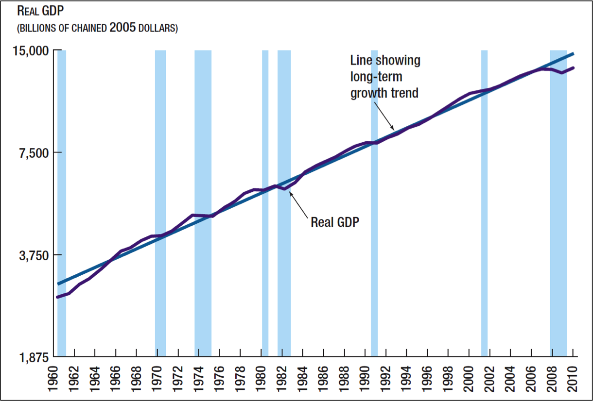
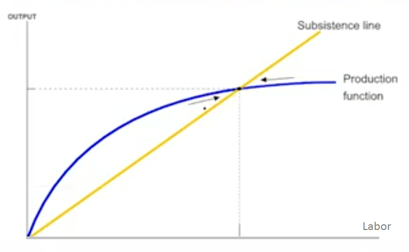
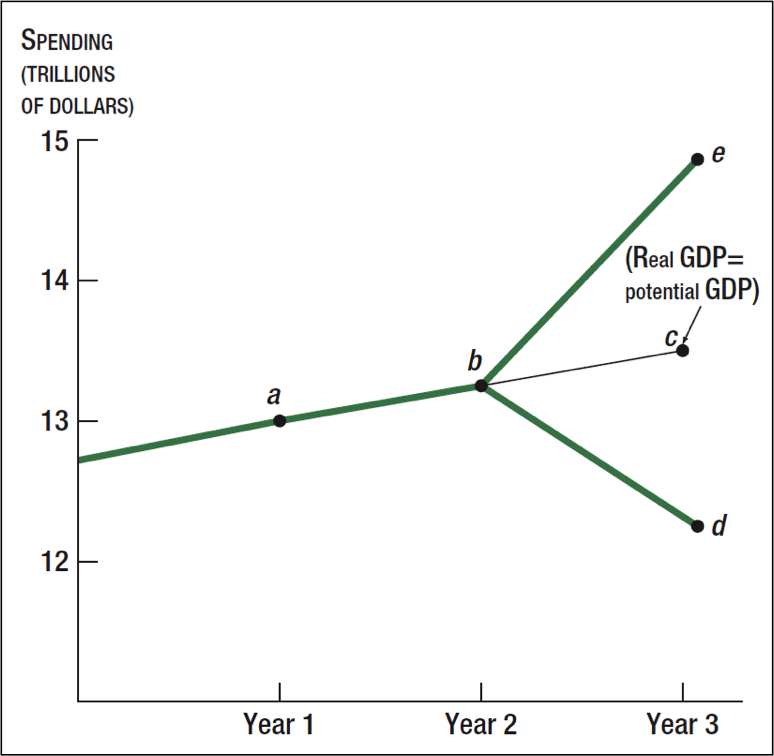
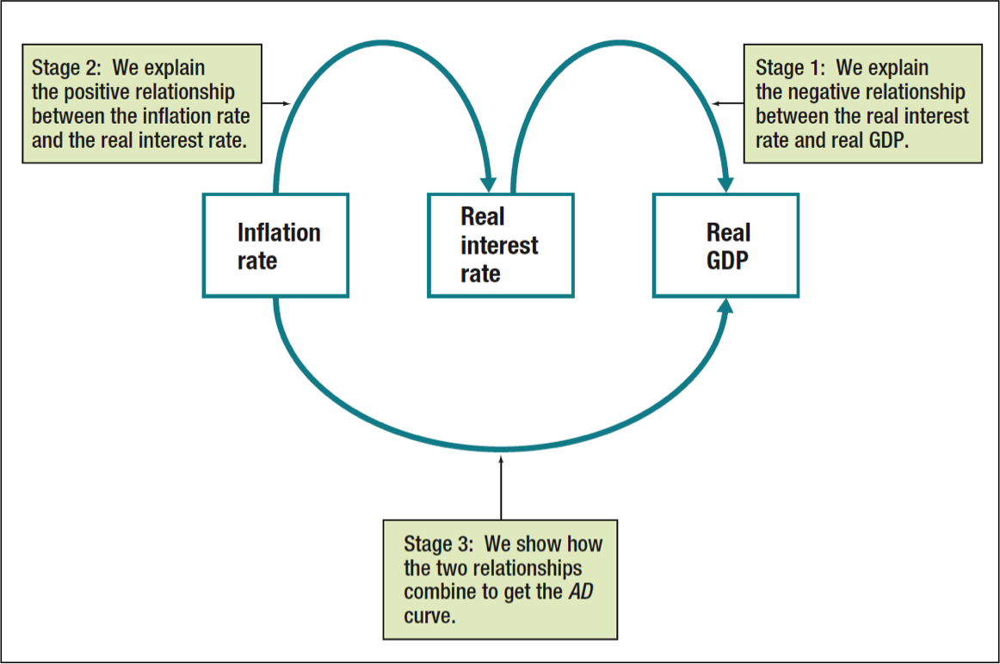
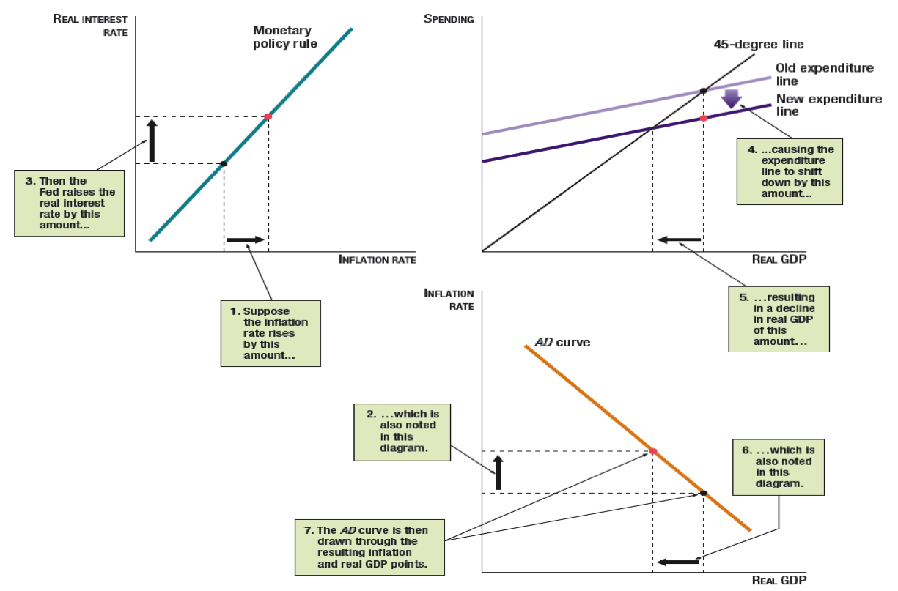
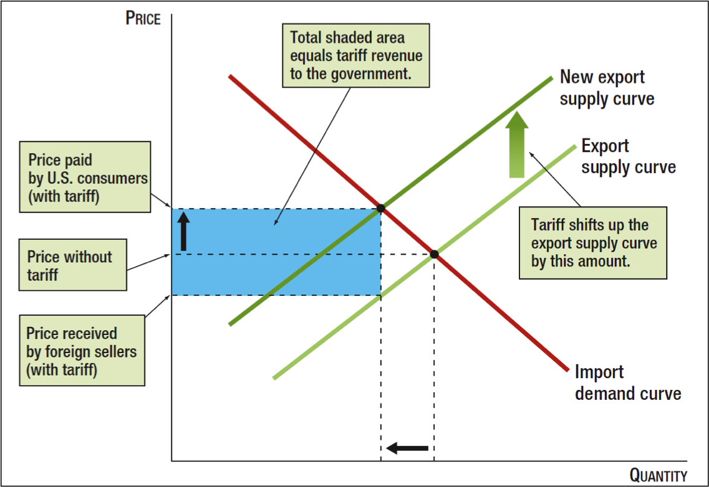

edX: Principle of Economics
Chapter 1. The Basic Core of Economics
Section 1.1. Getting Started: Welcome to Choice, Scarcity, Opportunity Cost & Production Possibilities
Introduction: Getting Started
Let’s begin with the basics. We’ll start by discussing the goal of the course which is to learn how to use economics to better understand and address the major issues of the day--to think and do like an economist. The course will cover the two main branches of economics--microeconomics and macroeconomics. We will discuss the differences between micro and macro in the first video. We will then define the basic mantra of economics in the second video and examine some foundational concepts: opportunity costs, the gains from trade, and the production possibilities curve.
Lecture: Welcome to the Principles of Economics (1A)
Key Concepts: Welcome to the Principles of Economics
Microeconomics examines the behavior and decisions of individual firms and households and the way they interact in specific industries and markets. We would use microeconomics to analyze decisions made by individual firms, or to look at how certain factors can affect the market for a specific good.
Macroeconomics focuses on the whole national economy or even the whole world economy. Macroeconomics examines the workings and problems of the whole economy, looking at features such as GDP growth and unemployment. We would use macroeconomics to examine the factors that contribute to a country or region’s overall economic growth, or to determine the cause of economic fluctuations (e.g. recessions).
Lecture: The Central Idea - Choice, Scarcity, and Interaction
Key Concepts: The Central Idea
Economics mantra: people make choices with scarce resources, and they interact with others when they make these choices.
Opportunity cost is the value of the next-best forgone alternative to making a choice. Economists consider this the real cost of a decision; for example, if a baseball player decides to attend college on a scholarship instead of entering the MLB draft, then even if he is going to school for free, the opportunity cost of that decision is the salary he could be making as a professional.
Gains from trade are improvements in income, production, or satisfaction owing to the exchange of goods or services.
This economic interaction can lead to the following:
Specialization: a concentration of production effort on a single specific task.
Division of labor: the division of production into various parts in which different groups of workers specialize.
Comparative advantage: a situation in which a person or group can produce one good at a lower opportunity cost than another person or group.
These can lead to greater production due to greater efficiency which can make all actors better off.
Trade can make two individuals or firms better off than if the trade did not happen. Because of this, in this framework, an important role of government is to ensure that trade can happen. There are five main components to this:
Predictable policy framework: the government needs to be predictable in its decision-making process.
Rule of law (e.g. property rights): property rights need to be clearly defined and enforced.
Reliance on market economy: the government needs to allow the market to determine prices and quantities produced.
Good incentives: the government needs to provide good incentives for economic activity, such as patents to encourage innovation.
Specific role of government: the government needs to be able to intervene in the case of market failure, when the market would fail to reach the efficient outcome.
Lecture: Production Possibilities and Economic Growth (2A)
Key Concepts: Production Possibilities and Economic Growth
Key Concepts: Production Possibilities and Economic Growth
The production possibilities curve (or production possibilities frontier) is a graph which illustrates the tradeoffs that an economy faces when deciding what to produce. It has a bowed-out shape, implying that opportunity costs increase as production increases. The curve below illustrates a hypothetical tradeoff between computers (on the y-axis) and movies (on the x-axis).

Points on the curve are considered to be efficient levels of production. Points below the curve are inefficient because the economy could produce more of one good without sacrificing production of the other. Points outside the curve are impossible; given its current capabilities, the economy cannot reach those levels of production. Note that the production possibilities curve does not indicate which good we prefer, or the optimal point on the curve; it merely indicates what amounts of production it is possible to achieve.
Over time, the production possibilities curve shifts out. The magnitude of this shift depends on investment in the economy; more investment will eventually lead to greater growth, and less investment will lead to slower growth.
Discussion: Getting Started
The National Basketball Association (NBA) has a rule that players must be at least one year removed from their high school graduation in order to enter the league. In many cases, this leads to players playing one year of basketball in college, then forgoing the remainder of their college career to enter the NBA. From an economic perspective, why might so many players make this decision? Use the concept of opportunity cost to make a case for either dropping this restriction altogether (allowing players to enter the NBA immediately after graduating high school) or increasing the limit, requiring players to graduate college before entering the NBA.
To participate in course discussions, please post in the Discussion forum. Discussion topics have been created for each topic presented.
Conclusion: Getting Started
In this unit we looked at the foundational ideas of economics and some of the questions that we can use them to answer. We introduced the mantra of economics: people make choices with scarce resources, and they interact with others when they make these choices. We applied this idea in particular to the production possibilities curve, which illustrates how countries face tradeoffs between producing different types of goods. Many of these ideas will be fundamental throughout this course. For example, whenever we discuss the costs of a choice, we will take that to mean the opportunity cost of that choice.
Key Terms: Getting Started
Microeconomics: the study of individual firms and households in specific industries and markets
Macroeconomics: the study of the entire economy of a region, a country, or the entire world
Opportunity Cost: is the value of the next-best forgone alternative to making a choice
Gains from Trade: improvements in income, production, or satisfaction owing to the exchange of goods or services
Specialization: a concentration of production effort on a single specific task
Division of Labor: the division of production into various parts in which different groups of workers specialize
Comparative Advantage: a situation in which a person or group can produce one good at a lower opportunity cost than another person or group
Production Possibilities Curve: a graph illustrating the tradeoffs an economy faces when producing two different goods
Increasing Opportunity Costs: the idea that as the production of a good increases, the opportunity cost of producing that good becomes higher
Section 1.2 Observing and Explaining the Economy
Introduction: Observing and Explaining the Economy
In this lessson we learn how economists work with data to study the economy. We also learn how economics can be used to explain important observations revealed by the data. The lesson focuses on an example in which data on people’s incomes reveal a widening gap between the rich and the poor. An economic explanation for the growing gap is that the benefits to education have increased, so that those with more education earn increasingly larger amounts than those with less education. This explanation implies that a policy that improves educational opportunity will reduce the gap. Using this example, we highlight key problems that arise when economists make policy recommendations.
Lecture: Observing and Explaining the Economy
Key Concepts: Observing and Explaining the Economy
The work of an economist includes observation (describing economic events), explanation (identifying potential causes of the events) and policy recommendations (courses of action for government or business to follow).
Analyzing economic data and finding trends is a challenge. Data often come in widely different magnitudes and units. They can be uninformative or misleading if they are not appropriately transformed, say by considering percentages.
Finding an economic explanation for an economic event is also challenging. Often there are several explanations that must be tested against each other. Even if you can find variables that are correlated with the events in question, correlation does not imply causation.
Research on the causes of economic events often has policy implications. Making recommendations is called normative economics, in contrast with the economic analysis of the event, which is called positive economics.
Economists often disagree, and it is important to understand why. Disagreement is often greater in macroeconomics than in microeconomics. The inability to run controlled experiments makes it difficult for economists to establish definitively a cause for an economic event. Sometimes partisanship or personal beliefs may also affect their conclusions.
Discussion: Observing and Explaining the Economy
Many economists and politicians have been writing and talking about the change in income distribution in the United States, noting the growing gap between the rich and the poor. The article “For richer, for poorer” from The Economist magazine covers a number of key issues. What economic explanations are offered in the article, in addition to changes in the return to education? Do you agree with the key policy recommendations? Do they follow from the economic explanation? Also one article on how economists use new data to measure income inequality if you are interested.
Conclusion: Observing and Explaining the Economy
In this lesson we showed how economists work with data to draw observations about the world around us. We found that discovering key trends or patterns requires looking at percentage changes or other transformations of the data and plotting the data in a graph. We illustrated these ideas with the example of income distribution, noting that the income gap between the top 10 percent and the lower 90 percent grew in the 1980s and 1990s.
An important task of economics is to explain such observations. For example, the widening income gap may be caused by increased returns to education.
Another important task of economics is to make policy recommendations, based on economic explanations. For example, if increased returns to education caused the widening income gap, then an economic policy recommendation to reduce the gap is to give more access to education.
Key Terms: Observing and Explaining the Economy
Causation: the concept that one event brings about another event.
Correlation: the concept that one event is usually observed to occur along with another event; note that correlation does not imply causation.
Normative Economics: economic analysis that makes recommendations about economic policy.
Positive Economics: economic analysis that explains what happens in the economy and why, without making recommendations about economic policy.
Section 1.3 Introduction: The Supply and Demand Model
This lesson will introduce one of the most basic and important models in economics: the supply and demand model. This model is simple but powerful, and can explain a wide range of economic phenomena. The lesson will first introduce two of the most important concepts in economics, supply and demand. You will learn how to express these concepts in figures. Then you will learn how to distinguish between shifts and movements in the supply and demand curves. Next you will learn how prices and quantities adjust the market into equilibrium and how shifts in supply and demand affect quantities and prices.
Lecture: Supply and Demand (3A)
Key Concepts: Supply and Demand
Demand is a negative relationship between the price of a good and the quantity demanded by consumers. It can be shown graphically by a downward-sloping demand curve.
It is very important to note what results in a movement along the demand curve and what results in a shift of the demand curve.
A movement along the demand curve occurs when a higher price reduces the quantity demanded or a lower price increases the quantity demanded. This is illustrated in the figure below as a movement from point A to point B or C.
A shift of the demand curve occurs when something besides a change in price changes the quantity of a good that people are willing to buy. An increase in demand is a shift to the right of the demand curve. A decrease in demand is a shift to the left of the demand curve.
Shifts of and Movements Along a Demand Curve:

Supply is a positive relationship between the price of a good and the quantity supplied by firms. It can be shown graphically by an upward-sloping supply curve.
Like demand we can differentiate between movements along and shifts of the supply curve.
A movement along the supply curve occurs when a higher price increases the quantity supplied or a lower price decreases the quantity supplied. This is shown in the figure below as a movement from point D to point E or F.
A shift of the supply curve occurs when something besides a change in price changes the quantity of a good that firms are willing to sell. An increase in supply is a shift to the right of the supply curve. A decrease in supply is a shift to the left of the supply curve.
Shifts of versus Movements Along the Supply Curve

Lecture: Market Equilibrium (3B)
Key Concepts: Market Equilibrium
The equilibrium price and equilibrium quantity are determined by the intersection of the supply curve and the demand curve. At this intersection point, the quantity supplied equals the quantity demanded— there are no shortages or surpluses.

The adjustment of prices moves the market into equilibrium. In situations where there is a shortage or an excess demand for goods, price will rise, increasing the quantity supplied and reducing the quantity demanded. In situations where there is a surplus or an excess supply of goods, price will fall, decreasing the quantity supplied and increasing the quantity demanded.
We can use the supply and demand model to analyze the impact of changes in factors that move the supply curve or the demand curve or both. By shifting either the supply curve or the demand curve, observations of prices can be explained and predictions about prices can be made.
When the demand curve shifts to the right (left), both equilibrium price and equilibrium quantity will increase (decrease). When the supply curve shifts to the right (left), the equilibrium price will fall (rise), and the equilibrium quantity will rise (fall).
Quiz: Market Equilibrium
Level 2 headings may be created by course providers in the future.
Consider the following supply and demand model of the world tea market (in billions of pounds.)
Price Per Pound Quantity Supplied Quantity Demanded
$.38 1,500 525
$.37 1,000 600
$.36 700 700
$.35 600 900
$.34 550 1,200
Discussion: The Supply and Demand Model
A recent article discusses a surge in prescription for two anti-malaria drugs. How would you model this using our supply and demand model? Do you think whether the surge is sustainable in the long-run?
Conclusion: The Supply and Demand Model
In this lesson you have learned the basic definitions of supply and demand. You have also learned to analyze the concepts of supply and demand graphically. Demand is a relationship between two economic variables: (1) the price of a particular good and (2) the quantity of that good that consumers are willing to buy at that price during a specific time period, all other things being equal. For short, we call the first variable the price and the second variable the quantity demanded. The relationship between price and quantity demanded is called a demand schedule. The relationship shows price and quantity demanded moving in opposite directions. Supply is a relationship between two variables: (1) the price of a particular good and (2) the quantity of the good that firms are willing to sell at that price, all other things being the same. For short, we call the first variable the price and the second variable the quantity supplied.
Economists sometimes refer to demand and supply as the law of demand and the law of supply. The law of demand says that the higher the price, the lower the quantity demanded in the market; and the lower the price, the higher the quantity demanded in the market. In other words, the law of demand says that the price and the quantity demanded are negatively related, all other things being equal. The law of supply says that the higher the price, the higher the quantity supplied; and the lower the price, the lower the quantity supplied. In other words, the law of supply says that the price and the quantity supplied are positively related, all other things being equal.
This lesson has also shown how to use the supply and demand model to find out how equilibrium price and quantity are determined in markets where buyers and sellers interact freely. The supply and demand model is probably the most frequently used model in economics, and it has been in existence for over a hundred years in pretty much the same form as economists use it now. You will come to appreciate it more and more as you study economics. A key feature of the model is that the equilibrium price and quantity are found at the intersection of the supply and demand curves. We can use the model to analyze how a change in factors that shift either the supply curve or the demand curve (or both) will affect equilibrium price and quantity in the market.
Key Terms: The Supply and Demand Model
-Demand: A relationship between price and quantity demanded.
-Price: The amount of money or other goods that one must pay to obtain a particular good.
-Quantity Demanded: The quantity of a good that people want to buy at a given price during a specific time period.
-Demand Schedule: A tabular presentation of demand showing the price and quantity demanded for a particular good, all else being equal. Below is an example of a demand schedule for bicycles.

-Law of Demand: The tendency for the quantity demanded of a good in a market to decline as its price rises.
-Demand Curve: A graph of demand showing the down-ward sloping relationship between price and quanity demanded. Below is an example of a demand curve for bicycles, showing shifts of the demand curve versus movements along the demand curve.
-Supply: A relationship between price and quantity supplied.
-Quantity Supplied: The quantity of a good that firms are willing to sell at a given price.
-Supply Schedule: A tabular presentation of supply showing the price and quantity supplied of a particular good, all else being equal. Below is an example of a supply schedule for bicycles.

-Law of Supply: The tendence for the quantity supplied of a good in a market to increase a its price rises.
-Supply Curve: A graph of supply showing the upward-sloping relationship between price and quantity supplied. Below is an example of a supply curve for bicycles, showing shifts of versus movements along the supply curve.
-Shortage (excess demand): A situation in which quantity demanded is greater than quantity supplied.
-Surplus (excess supply): A situation in which quantity supplied is greater than quantity demanded.
-Equilibrium Price: The price at which quantity supplied equals quantity demanded.
-Equilibrium Quantity: The quantity traded at the equilibrium price.
-Market Equilibrium: The situation in which the price is equal to the equilibrium price and the quantity traded equals the equilibrium quantity.
Section 1.4 Introduction: Using the Supply and Demand Model
This lesson builds upon what we have seen thus far in our analysis of the supply and demand model.
First we discuss a key point in economics: elasticity.
The concept of elasticity helps us understand how much the equilibrium price and quantity change in response to changes in supply or demand. This has very important implications for policymaking. In addition, this concept will help solidify your understanding of the important role played by prices in the allocation of resources.
Second we turn to government interventions in the market, specifically price ceilings and price floors.
We consider two ways in which government interventions can affect market prices. When the government perceives that an equilibrium price is “too high,” it might intervene and impose a price ceiling. Or the government might intervene and impose a price floor when a price is perceived to be “too low.” We use the supply and demand model to analyze the impact of these interventions.
Lecture: The Role of Prices and Elasticity (4A)
Key Concepts: Price and Elasticity
Understanding the roles of prices in a market economy is extremely important.
Prices have three major roles:
Prices are signals
Prices provide incentives
Prices affect income distribution
Elasticity is a measure of the sensitivity of one economic variable to another.
Price Elasticity of Demand is the percentage change in the quantity demanded of a good divided by the percentage change in the price of that good.
Elasticity is important because it is a way in which economists quantify how responsive economic actors are to price signals. If a consumer changes how much of a good they purchase by a large amount when price changes by a certain amount then their demand is thought to be relatively elastic. If consumers change how much of a good they purchase very little when price changes, then their demand is thought to be relatively inelastic.
So that we can compare elasticities across different goods elasticity is always measured in percentage terms. Elasticity is a unit-free measure.
Demand is said to be elastic if the price elasticity of demand is greater than 1 and inelastic if the price elasticity of demand is less than 1. The elasticity of demand for a good depends on whether the good has close substitutes, whether its value is a large or a small fraction of total income, and the time period of the change.
Examples of goods that generally have low price elasticity of demand include cigarettes and gasoline. Consumers change their purchasing behavior relatively little with changes in price. Examples of goods with higher price elasticity of demand include luxury goods such as jewelry.
The graphs below illustrate the concept of price elasticity of demand by using an example of the market for crude oil.
In this figure we can see that with a relatively high price elasticity of demand consumers change how much they consume very much in response to a price change.

However, in the next figure we can see an example of relatively low price elasticity of demand where consumers change their quantity purchased much less in response to a change in price.

Price elasticity of demand can be represented mathematically as:
Here: price elasticity of demand quantity demanded price
This is the percent change in quantity demanded divided by the percent change in price. Price elasticity of demand measures how much a consumer changes his or her purchasing decisions based on price signals.
As we saw in earlier lessons, for most goods there is a negative relationship between price and quantity demanded. If an economist says that 1, we usually take this to mean that for a 1% increase in price there will be a 1% decrease in quantity demanded.
Similar to price elasticity of demand we can measure a supplier’s willingness to supply more or less of a good in response to price changes as price elasticity of supply.
This is the percentage change in quantity supplied divided by the percentage change in price.
If a good has a high price elasticity of supply, then a change in price will cause a big change in the quantity supplied. Conversely, if a good has a low price elasticity of supply, then a change in price will have only a small impact on the quantity supplied.
Lecture: Real World Applications of the Supply and Demand Model (4B)
Key Concepts: Applying the Supply and Demand Model
One of the most important applications of the supply and demand model is the analysis of government interventions in markets. The case of price ceilings and price floors is an important example. Such interventions occur when people in government, or those that influence people in government, perceive the market equilibrium price to be too high or too low.
A price ceiling is a government price control that sets the maximum allowable price for a good or a service. For a price ceiling to have any effect at all in a market it must be below the market equilibrium price. A price ceiling may be put into place because policymakers believe the price of a good is too high and thus not afforable for certain citizens (i.e. rent control). However, the low price will lead firms to reduce the quantity they will supply and result in a shortage.
Example:
Rent control: a government price control that sets a maximum allowable rent to a house or an apartment.

A price floor is a government price control that sets the minimum allowable price for a good or a service. For a price floor to have any effect at all it must be above the market equilibrium price. A price floor might be put into place to try to help suppliers of a good because policymakers believe the price being received by suppliers is too low (i.e. a higher minimum wage is intended to help workers--the suppliers of labor). However, this reduces the quantity demanded and results in a surplus. In the case of a labor market this surplus is known as unemployment. In the market for a good, the government often must purchase the suplus of goods to support this price at a great cost to government.
Example:
Minimum wage: a wage per hour below which it is illegal to pay workers.

Discussion: Using the Supply and Demand Model
This article is an opinion piece on rent control in San Francisco. If rent control is economically inefficient, why is it still used as a public policy tool? What might some consequences of rent control that may hurt those that they are trying to help?

Conclusion: Using the Supply and Demand Model
In this lesson we covered some key economic concepts that help us understand the interaction of firms, consumers and workers in a market. We discussed the roles of prices, elasticity, and price controls. Price elasticity of demand helps us understand how consumers respond to price, while price elasticity of supply helps us understand how suppliers respond to price. We also examined how the supply and demand model can be used to analyze the impact of real world events such as a reduction in the demand for oil in the United States.
Price controls include price ceilings that might be imposed when government believes that a price is too high and price floors that might be imposed when government believes a price is too low. The supply and demand model helps us understand some basic issues related to minimum wage or rent control policies, which frequently appear in the news today.
Key Terms: Using the Supply and Demand Model
-Elastic Demand: demand for which the price elasticity is greater than 1.
-Inelastic Demand: demand for which the price elasticity is less than 1.
-Minimum Wage: a wage per hour below which it is illegal to pay workers.
-Perfectly Elastic Demand: demand for which the price elasticity is infinite, indicating an infinite response to a change in price and therefore a horizontal demand curve.
-Perfectly Elastic Supply: supply for which the price elasticity is infinite, indicating an infinite response of quantity supplied to a change in price and therefore a horizontal supply curve.
-Perfectly Inelastic Demand: demand for which the price elasticity is zero, indicating no response to a change in price and therefore a vertical demand curve.
-Perfectly Inelastic Supply: supply for which the price elasticity is zero, indicating no response of quantity supplied to a change in price and therefore a vertical supply curve.
-Price Ceiling: a government price control that sets the maximum allowable price for a good.
-Price Control: a government law or regulation that sets or limits the price to be charged for a particular good.
-Price Elasticity of Demand: the percentage change in the quantity demanded of a good divided by the percentage change in the price of that good.
-Price Elasticity of Supply: the percentage change in quantity supplied divided by the percentage change in price.
-Price Floor: a government price control that sets the minimum allowable price for a good.
-Rent Control: a government price control that sets the maximum allowable rent on a house or apartment.
-Unit-Free Measure: a measure that does not depend on a unit of measurement.
Chapter 2. The Competitive Equilibrium Model
2.1 Deriving Demand
Introduction: deriving demand
In this lesson we introduce several key ideas related to consumer behavior, and we use these ideas to derive the demand curve. We explore the concept of utility which is used to describe consumer preferences. This helps us understand and analyze how consumers make purchasing decisions. We assume that consumers wish to maximize their utilility given an amount of money to spend, or a budget constraint. This leads us to the derivation of an indivdual demand curve and a market demand curve which are fundamental to all types of economic analyses.
Lecture: Derivation of the Demand Curve (5A)
2023.11.9
In the United States there’s much more, much higher number of scanners per person than
in the UK or Canada. Now one might ask the question, “Is the US producing too many scanners.
And the supply curve which is marginal cost. At that intersection the quantity demanded
and the quantity supplied are equal so marginal benefit is equal to marginal cost.
deadweight loss
Pareto efficiency
Competitive markets are efficient - Invisible Hand Theorem
video: illustration of The famous Invisible hand theorem
The video below illustrates in detail how the competitive equilibrium model works and why it implies that competitive markets are efficient as discussed in the previous lesson. The example is the supply and demand for roses with the demand curve based on marginal benefit and the supply curve based on marginal cost. The example nicely illustrates Adam Smith’s famous “Invisible Hand Theorem.” It also shows how prices provide incentives and convey information. Near the end, it shows how the market adjusts after a tragedy such as a damaging flood, and still provides an efficient outcome.
2023.11.9
Deriving the Demand Curve
We remember from previous lessons that the demand curve is a downward sloping line indicating that more of a good will be demanded at a lower price. Here we look at consumer decisions that underlie the demand curve.
Utility
Utility is a concept used by economists to indicate how much a consumer values a particular good. It is a numerical indicator where higher values indicate a greater preference.
Properties of Utility:
Utility can be used to rank alternative consumption combinations
Having more of a good never makes an individual worse off
Marginal utility decreases as the consumption of a good increases
The units that utility is measured in do not matter
You can't compare utility levels across people
Deriving Utility from Grapes and Bananas
The figure below shows one consumer’s utility for given combinations of grapes and bananas. Consuming 2 pounds each of grapes and bananas gives a utility level of 27. Combinations that have at least as much of one fruit and more of the other have a higher level of utility (gold-colored region). Combinations that have at least as much of one fruit and less of the other have a lower level of utility (blue-colored region).

Lecture: Marginal Benefit and Consumer Surplus (5B)
video: toward a smooth demand curve
In the previous video-lesson, Professor Taylor emphasized the point (beginning at minute 6:17) that individual demand curves do not usually have the step-like look as in the simple numerical example. Rather they can be smoother, and economists usually draw demand curves without the steps. The smooth demand curves help one see visually that the consumer chooses a quantity to consume at a point where marginal benefit equals the price--a very important idea in economics as explained later in that video.
The following one-minute video was originally filmed in a classroom at Stanford University to further illustrate this point. It shows a stepped, indivdual demand curve “morphing” into a smooth demand curve as the units of consumption are smaller and smaller. Professor Taylor then shows with a sketch on the board that the marginal benefit requals price (MB=P). Raisins are used in this case.
Key Concepts: Marginal Benefit and Consumer Surplus
Willingness to Pay and the Demand Curve
People's preferences are reflected in their willingness to pay for different amounts of a good. Because dollars can be used to buy any good, willingness to pay compares one good with all other goods.
The marginal benefit from a good is the increase in the benefit from, or the additional willingness to pay for, one more unit of a good. The marginal benefit that an individual derives from a good will typically decline as the individual increases consumption of that good. An individual demand curve can be traced out by changing the price of a good and looking at how many units consumers are willing to buy at each price.
This can be depicted graphically as in the figure below.

Deriving the Market Demand Curve
The market demand curve is the sum of the demand curves of many individuals. The figure below shows this concept for only two individuals with the same preferences. The same concept applies with many consumers as in an actual market.

Discussion: Deriving Demand
In this report it is claimed that Google has “tackled the market head-on with dramatic price cuts to their cloud storage services.” How does this relate to our discussion about marginal benefit and the demand curve?
Conclusion: Deriving demand
In this lesson we explored how economists analyze consumer behavior in order to derive the demand curve. We introduced the ideas of utility, marginal benefit, and consumer surplus. When we use the assumption that consumers maximize utility subject to a budget constraint we can derive their individual demand (expressed as a demand curve) for a given good. A similar derviation of the demand curve comes from looking at the consumer’s willingness to pay for a good. The demand curve is then found directly from the marginal benefit of consuming an additional amount of that good. The demand curve slopes downward because of declining marginal benefit. Finally we showed that the market demand curve comes from summing up the individual demand curves.
Next we will move on to the supply side and look at producer decisions.
Key Terms: Deriving Demand
utility: a numerical indicator of a person's preferences in which higher levels of utility indicate a greater preference.
marginal utility: the increase in utility when consumption of a good increases by one unit.
diminishing marginal utility: the tendency for a consumer to derive less additional benefit from adding to the consumption of a good as consumption of that good increases.
budget constraint: an income limitation on a person's expenditure on goods and services.
utility maximization: an assumption that people try to achieve the highest level of utility given their budget constraint.
individual demand curve: a curve showing the relationship between quantity demanded of a good by an individual and the price of the good.
market demand curve: the horizontal summation of all the individual demand curves for a good; also simply called the demand curve.
consumer surplus: the difference between what a person is willing to pay for an additional unit of a good—the marginal benefit—and the market price of the good; for the market as a whole, it is the sum of all the individual consumer surpluses, or the area below the market demand curve and above the market price.
Introduction: Deriving Supply
In the previous subsection we derived the demand curve by looking at how consumers make decisions about how much to consume at different prices. In this subsection we will examine the supply side of the market, looking at the key concept of marginal cost.
In the first video-lesson we will derive the supply curve by looking at how firms make decisions about how much to produce at different prices. We show that profit-maximizing firms will set their marginal cost equal to the price in the market, and we will define the concept of producer surplus.
In the second video-lesson in this subsection we examine the connection between the firm’s marginal cost and the firm’s marginal product of labor. This will help us understand better why marginal costs increase as the firm produces more, and thus why the supply curve slopes upward.
Section 2.2 Deriving Supply
Lecture: Derivation of the Supply Curve (6A)
2023.11.7
crate: (果物･家具･家畜などの輸送･収納用)木箱[枠], プラスチック製の箱[枠], (ビールケースなどの)プラスチックコンテナ; 〖a ～ of A〗 1箱[ケース]分のA〈ビール･果物など〉.
Marginal cost is the additional cost it takes to produce one more pumpkin.
First, we’re going to plot the marginal cost for the firm.
Then we’re going to imagine the firm considers different prices.
Then we’re going to find the quantity supplied at each price.
And then after all that, the result you’ll see will be the supply curve.
MC = P; marginal cost equals price
Producer Surplus
Market Supply Curve
Video: Toward a smooth Supply Curve
In the previous lesson Professor Taylor noted (around minute 12.00) that the step-like supply curve is usually drawn more smoothly than in the simple numerical example. The following one-minute video filmed at Stanford University illustrates this point and shows how we can “morph” the stepped supply curve--showing an individual firm’s marginal cost--into a smooth supply curve as the units of production are allowed to be smaller. Professor Taylor then sketches out the reason why marginal cost equals price (MC = P).
2023.11.7
Key Concepts: Derivation of the supply curve
In this video lesson, you learned how to derive the supply curve. While the demand curve is determined by consumers’ choices, the supply curve is determined by the decisions of firms. We looked under the surface of the supply curve and examined how the profit-maximizing behavior of a firm determines how much of a good that firm will choose to produce at a given market price. Then we showed how aggregating individual firms' supply curves generates a supply curve for the entire market.
It is important to understand that a firm in a competitive market is a price taker. This means that the firm does not set the price. It has to sell at the market price and decide how much to produce based on what the market price is. Furthermore, production decisions of firms in a competitive market do not affect the market price.
The profit-maximizing decisions of firms leads to a supply curve like the one in the figure below. The dots show the marginal cost, which is the increase in total costs as more is produced. As the price increases, the firm will produce more and the result is the supply curve for an individual firm, with price on the vertical axis and quantity supplied on the horizontal axis.
Individual Firm Supply Curve

Because the marginal cost at the firm rises as it produces more, it will increase its production as the price rises. The supply curve thus slopes upward because marginal costs are increasing. If the firm can adjust its production by sufficiently small increments, then the marginal cost is exactly equal to the price, as shown in the one-minute video.
This derivation leads to a very important conclusion:
2023.11.7
A competitive profit-maximizing firm produces at a quantity such that marginal cost equals the price.
In the process of deriving the supply curve this way we also showed how to define and measure the "producer surplus" of firms. Producer surplus is the amount that a producer gains from participating in the market; it is the area above the supply curve and below the price. In conjunction with consumer surplus, producer surplus is extremely useful for measuring how well a market economy actually works to produce and allocate goods and resources.
Quiz: Derivation of the Supply Curve
Suppose a price-taking producer of barrels for storing wine has the following total cost schedule:
Quantity Total Costs
0 20
1 30
2 42
3 55
4 75
5 100
6 130
2023.11.7
Lecture: Marginal Product of Labor and Marginal Costs
2023.11.8
The production function is just a relationship between the firm’s output and the firm’s inputs.
That’s the marginal product you get from additional hour of work, gets smaller over time, and, by the amount that’s produced.
That’s what we mean by diminishing marginal product of labor or diminishing returns to labor.
Key Concepts: Marginal Product of labor and marginal costs
The aim of this video-lesson was to show why marginal costs are increasing. It began by looking at the production function. The production function relates the firm’s output to the firm’s input as shown in the figure below.
The marginal product of labor is the change in output resulting from a one unit increase in labor.

We also explored the connection between the marginal product of labor and marginal cost. The marginal product of labor decreases with more labor input because for a given amount of land or capital, the additional quantity of output produced by one more unit of labor input--the marginal product of labor--declines as more workers are hired. This is called diminishing returns to labor. The marginal costs at a firm increase as more is produced because the marginal product of labor declines as more labor is employed. Thus increasing marginal costs are due to diminishing returns to labor.
Quiz: Derivation of the Supply Curve
Suppose a price-taking producer of barrels for storing wine has the following total cost schedule:
Quantity Total Costs
0 20
1 30
2 42
3 55
4 75
5 100
6 130
Lecture: Marginal Product of Labor and Marginal Costs
Key Concepts: Marginal Product of labor and marginal costs
The aim of this video-lesson was to show why marginal costs are increasing. It began by looking at the production function. The production function relates the firm’s output to the firm’s input as shown in the figure below.
The marginal product of labor is the change in output resulting from a one unit increase in labor.

We also explored the connection between the marginal product of labor and marginal cost. The marginal product of labor decreases with more labor input because for a given amount of land or capital, the additional quantity of output produced by one more unit of labor input--the marginal product of labor--declines as more workers are hired. This is called diminishing returns to labor. The marginal costs at a firm increase as more is produced because the marginal product of labor declines as more labor is employed. Thus increasing marginal costs are due to diminishing returns to labor.
Conclusion: Deriving supply
In this lesson, we derived the supply curve in a competitive market by looking at the behavior of firms. We assumed that a firm decides how much to produce at a given market price by choosing the quantity that maximizes profits. The firm makes this decision taking prices as given and considering its production function, which relates the number of hours of work at the firm to the output of the firm. The production function enters the firm's profit calculations through its effects on the firm's costs. Because the production function has diminishing returns to labor, the firm faces increasing marginal cost.
Profit maximization implies that the firm will produce the quantity where marginal cost equals price. As the price rises, the firm will respond by increasing production until marginal cost and price are equal. As a result, the supply curve for an individual firm will be upward-sloping. The slope of the supply curve will be steep when marginal cost increases rapidly as more units are produced, and it will be flat when marginal cost does not rise by very much as more units are produced. The supply curve will shift out when marginal cost falls because of some event like a change in technology and shift in when marginal cost rises.
The connection between marginal cost and the supply curve is fundamental to understanding how markets work and is especially important when we consider public policy issues, such as the efficiency of markets and regulation of firms. When economists see or draw a supply curve, they are usually thinking about the marginal cost of the firms that underlie the supply curve. The supply curve and the marginal cost curve are virtually synonymous for economists.
We have examined firm behavior and consumer behavior in this subsection. We have derived two conditions for characterizing individual and firm behavior: Profit-maximizing firms will produce according to the price equals marginal cost condition, while utility-maximizing consumers will consume according to the price equals marginal benefit condition. In the next subsection, we will combine these two conditions and derive an attractive feature of competitive markets.
Key Terms: Deriving Supply
-Firm: An organization that produces goods or services.
-Price-Taker: Any firm that takes the market price as given; this firm cannot affect the market price because the market is competitive.
-Competitive Market: A market in which no firm has the power to affect the market price of a good.
-Profits: Total revenue recieved from selling the product minus the total costs of producing the product.
-Total Revenue: The price per unit times the quantity that the firm sells.
-Total Costs: The sum of all costs incurred in producing goods and services.
-Production Function: A relationship that shows the quantity of output for any given amount of input.
-Marginal Product of Labor: The change in production due to a one-unit increase in labor input.
-Diminishing Returns to Labor: A situation in which the increase in output due to a unit increase in labor declines with increasing labor input; a decreasing marginal product of labor.
-Variable Costs: Costs of production that vary with the quantity of production.
-Fixed Costs: Costs of production that do not depend on the quantity of production.
-Marginal Cost: The change in total costs due to a one-unit change in quantity produced.
-Profit Maximization: An assumption that firms try to achieve the highest possible level of profits—total revenue minus total costs—given their production function.
-Producer Surplus: The difference between the price received by a firm for an additional item sold and the marginal cost of the item's production; for the market as a whole, it is the sum of all the individual firms' producer surpluses, or the area above the market supply curve and below the market price.
Section 2.3. Market Equilibrium and Efficiency
Introduction: Market Equilibrium and Efficiency
In this subsection, we will examine the idea of a market equilibrium. When buyers and sellers interact in a competitive market, price and quantity will naturally converge to an equilibrium. We will show that this equilibrium is in fact efficient in a sense to be defined explicitly. In this way we will prove the invisible hand theorem first put forth by Adam Smith in his book the Wealth of Nations, but in a way which will enable you to understand the types of assumptions for which the theorem holds We will also show that the market outcome maximizes the total sum of consumer surplus plus producer surplus. We will then illustrate how the prediction of the model works with an example of the rose market and demonstrate how the prediction is confirmed by examining the outcome of certain auction markets.
We use the competitive equilibrium model to prove these important results in this subsection. The competitive equilibrium model is nothing more than the supply and demand model with the details of consumer behavior and firm behavior made explicit. It is built upon the detailed derivation of the demand curve and the detailed derivation of the supply curve in the previous two subsections.
Lecture: Are Competitive Markets Efficient? - Video
2023.11.9
In the United States there’s much more, much higher number of scanners per person than
in the UK or Canada. Now one might ask the question, “Is the US producing too many scanners.
And the supply curve which is marginal cost. At that intersection the quantity demanded
and the quantity supplied are equal so marginal benefit is equal to marginal cost.
deadweight loss
Pareto efficiency
Competitive markets are efficient - Invisible Hand Theorem
video: illustration of The famous Invisible hand theorem
The video below illustrates in detail how the competitive equilibrium model works and why it implies that competitive markets are efficient as discussed in the previous lesson. The example is the supply and demand for roses with the demand curve based on marginal benefit and the supply curve based on marginal cost. The example nicely illustrates Adam Smith’s famous “Invisible Hand Theorem.” It also shows how prices provide incentives and convey information. Near the end, it shows how the market adjusts after a tragedy such as a damaging flood, and still provides an efficient outcome.
2023.11.9
Key Concepts: Are Competitive markets efficient?
Pareto efficiency is a situation where it is impossible to make one person better off without hurting another person. If it is possible to make one person better off without hurting someone else, then the situation is inefficient.
There are three conditions that must be met for pareto efficiency:
Marginal benefit equals marginal cost: the benefit of the last unit produced is equal to the cost of that unit. If the benefit is greater, then we could be better off by producing more; if the benefit is less, then we could be better off by producing less.
Marginal cost is the same for each producer: if one producer has a higher marginal cost than another, then the first producer should produce less of the good and the second producer should produce more.
Marginal benefit is the same for each consumer: if one consumer has a higher marginal benefit than another, the first consumer should consumer more of the good and the second consumer should consume less.
A competitive market equilibrium satisfies all these conditions, because marginal benefit for each consumer and marginal cost for each producer are all equal to the market price.
When a market does not produce at the market equilibrium, but instead produces too much or too little, this is inefficient. We call the lost surplus (as compared to the maximum possible total surplus, achieved when the market is operating at equilibrium) deadweight loss.
This idea--that the equilibrium of a competitive market is efficient--is part of the invisible hand theorem, first proposed by Adam Smith.
Quiz: Are Competitive Markets Efficient?
How Well Does the Competitive Equilibrium Model Work?
We have already used the supply and demand model--or the more detailed competitive equilibrium model--for several purposes. We have demonstrated the invisible hand theorem and we have predicted the effect of a tax increase. But it is important to know how well the model actually works in explaining what happens when real people actually interact in markets.
One way to see how well the model works is to run a kind of experiment in which the assumptions of the model can be matched closely with what people actually do in the market. The best known example is the “double auction” experiment in which both buyers and sellers interact and compete with each other in a market. You do not need very many buyers and sellers to approximate the conditions of competition, so such double auctions are easy to run with a few people in a classroom or online.
The next lecture describes how to set up and interpret a double auction of the kind used at Stanford and other schools. You may find it easier to understand and appreciate this video lecture if you have actually seen a double auction, so we have also provided a second video of a double auction that actually took place at Stanford. The marginal costs and benefits are different in the two videos and there are different numbers of participants, (and in one video the information for buyers and sellers is on a sheet of paper and on cards in the other), but of course none of this makes any difference for the underlying workings of the double auction market. Perhaps the best way to use the video of the auction and the lecture video is to go back and forth between them. If you have never seen or participated in a double auction, we recommend that you first watch a few minutes of the classroom double auction video and then watch the lecture. After the lecture, you can then come back to watch the classroom video in its entirety.
We hope these two double auction videos will enhance your understanding of how the important competitive equilibrium model, or even the simpler supply and demand model, works.
Lecture: Interpreting Double Auction Markets - video
Video: The Double Auction Simulation
This video was taken in a classroom at Stanford University. It shows students interacting in a double auction with Professor Tayor and another professor writing prices and quantities with chalk on the board. It also shows how to build up the supply and demand curves from the marginal costs and marginal benefits assigned to each student. As you can see, the competitive equilibrium model or the supply and demand model works quite well in describing the outcome of these students’ interactions in the market. This is a common finding.
KEY CONCEPTS: INTERPRETING DOUBLE AUCTION MARKETS
The double auction consists of two groups; the buyers, who make decisions on whether to buy a good and how much to offer based on their marginal benefit for each good, and the sellers, who make decisions on whether to sell a good and what price to ask based on their marginal cost for goods. Buyers would like to pay as low a price as possible, and sellers would like to sell for a price as high as possible.
The competitive equilibrium model predicts that price will reach an equilibrium, where the market demand curve intersects the market supply curve and the marginal cost is equal to marginal benefit. One way to see how well the model works is to compare its prediction with the outcome of a double auction market in which the marginal costs, marginal benefits and the number of buyers and sellers in the market are known. This enables us to determine the market supply curve of the sellers and the market demand curve of the buyers, by summing up their individual supply and demand curves. We can then let the buyers and sellers interact in a market where none of them even know the market supply and demand curves. If their bidding, buying, and selling leads to the same outcome as the prediction of the model, then that is an indication that the model works.
In fact, when such auctions are run in practice, we see results very close to what the model predicts. In one case described in the video-lesson “Interpreting the double auction,” there were a bunch of different double auctions with ten buyers and ten sellers. The results for each of the auctions were quite close to the predictions of the model. Moreover, when the supply curves shifted due to a tax, the price and quantity in the market changed in the way predicted by the model.
The video of a double auction that was filmed in a classroom at Stanford University provides additional insights. It shows how individual participants interact as the model approaches an equilibrium. Again the model gives a good prediction of the outcome.
Discussion: Market Equilibrium and efficiency
Recall our discussion of price controls, with the specific example of rent control in San Francisco, from the section “Using the Supply and Demand Model” earlier in the course. Using the newly introduced concepts of Pareto efficiency and deadweight loss, analyze the decision to enforce rent control. Is the market for housing in San Francisco efficient? Is there a way to keep the price of housing low while keeping the market efficient? Why or why not?
Changing price is one common way to balance supply and demand in the market. One recent example is the surge/dynamic pricing in ride-sharing apps. This article discusses the surge pricing in detail. Compared to the traditional tax market, does dynamic pricing make the transport market more efficient?
Conclusion: Market Equilibrium and efficiency
In this subsection, we defined Pareto efficiency, a situation in which no one can be made better off without someone being made worse off. We looked at how a competitive market reaches equilibrium, and showed that that equilibrium is in fact Pareto efficient, maximizes the sum of producer and consumer surplus, and eliminates deadweight loss. We illustrated these results with a simple example of a rose market which showed how markets through the price system provide signals and incentives for people in the market to coordinate their activity as if there was an invisible hand. Indeed, this efficiency property of competitive markets is often called the invisible hand theorem following Adam Smith.
We also showed how something that affects the market, such as a tax, can cause the market to produce a quantity other than the efficient quantity, which is thus inefficient. This inefficiency results in deadweight loss.
Finally we examined how well the model works in explaining actual interactions of people in markets. We used the well-know double auction market, and showed that the predictions of the model are quite accurate. The predictions correspond closely with the observed outcomes in these markets.
Key Terms: Market Equilibrium and Efficiency
pareto efficiency: a situation in which it is impossible to make one person better off without hurting another
deadweight loss: the difference between total surplus in the efficient outcome, and in another outcome; in other words, deadweight loss is total surplus lost due to inefficiency
Chapter 3. Firms and Industries Changing Over Time
Section 3.1 Cost and the Changes at Firms Over Time
Introduction: Costs and the Changes at Firms Over Time
The purpose of the section “Firms and Industries Changing Over Time” is to examine how firms and industries in the economy adapt to changes in consumer tastes and new technology. There are two subsections. In this first subsection we introduce a famous cost curve diagram which is used to study an individual firm’s profit and losses. We show how costs are a crucial determinant of firm behavior. You will learn how economists can capture the whole essence of a firm with a graph of its costs. By looking at such a graph, economists can determine the profitability of a firm and whether it should shut down or expand.
Lecture: Cost Curves (8A)
2023.11.10
Fixed costs vs variable costs
Marginal cost curve should cut through the average total cost,
and the average variable cost curves, at their lowest point.
In addition, the average total cost curve and the average variable
cost curve should get closer to each other as the quantity increases.
That is, the gap between the two diminishes and remember the reason
for that is average fixed cost declines throughout the range of production.
Key Concepts: Cost Curves
The short run and the long run are two broad categories into which economists categorize time periods. The short run is the period of time during which it is not possible for the firm to change all the inputs to production; only some inputs, such as labor, can be changed. The long run is the minimum period of time in which the firm can vary all inputs to production, including capital.
Total costs are all the costs incurred by the firm in producing goods or services. Fixed costs are the portion of total costs that do not vary with the amount produced in the short run. Variable costs are the remaining portion of total costs that do vary as production changes.
Average total cost, average variable cost and marginal cost are widely used by economists, accountants, and investors to assess a firm's behavior. They can be shown graphically as in the important diagram below. We will see that the profit made by the firm in the short run depends on the difference between the price and average total cost at the quantity corresponding to that price.

Helpful hints when constructing generic cost curves:
Make sure the marginal cost curve cuts through the average total cost curve and the average variable cost curve at their minimum points. (Make certain you understand why this is.)
Make sure the vertical distance between the average variable cost and the average total cost gets smaller as you increase the amount of production.
Put a small dip on the left-hand side of the marginal cost curve before the upward slope begins. This allows for the possibility of decreasing marginal cost at very low levels of production.
Quiz: Cost Curves
Consider the following:
Q TC
0 8
1 12
2 14
Lecture: Profits and Losses (8B)
2023.11.10
the breakeven point.
Key Concepts: Profits and Losses
The cost curve diagram is a convenient way to determine whether a firm is making profits or losses in the short run. If the price is above the average total cost at the profit maximizing point, then profits are positive. The breakeven point is where the price is at the lowest point on the average total cost curve.
The firm may keep producing even if profits are negative in the short run as long as the price is greater than average variable cost. When the market price equals the minimum of average variable cost, the firm is just at the point of shutting down. This is the shutdown point. If the price is below average variable cost, the firm should shut down.
Quiz: Profits and Losses
Consider the following:
Q TC
0 8
1 12
2 14
3 20
4 30
5 50
Discussion: Costs and the Changes at Firms Over Time
This article discusses a situation in which firms operate and do not make profits. Is the article talking about the short run or the long run? When can firms operate and not make profits? What do you think will happen in the future if the situation persists?
https://www.businessinsider.com/tech-companies-worth-billions-unprofitable-tesla-uber-snap-2019-11#7-wework-7
Conclusion: The Costs and Changes at Firms Over Time
In the two lessons of this subsection we have developed a model for studying when firms shut down or stay in operation. This model will be used in subsequent lessons to analyze how changes at firms occur over time in the long run. It is an extension of the analysis of a firm's short-run behavior.
The centerpiece of the model is a graph that shows the firm's average total cost, average variable cost, and marginal cost. Using this graph, we can determine both the breakeven point and the shutdown point for the firm.
Key Terms: Costs and the Changes at Firms Over Time
Total Costs: The sum of all costs incurred in producing goods or services.
Fixed Costs: Costs of production that do not depend on the quantity of production.
Variable Costs: Costs of production that vary with the quantity of production.
Short Run: The period of time during which it is not possible to change all inputs to production; only some inputs, such as labor, can be changed.
Long Run: The minimum period of time during which all inputs to production can be changed.
Marginal Cost: The change in total cost due to a one-unit change in quantity produced.
Average Total Cost: Total costs of production divided by the quantity produced (also called cost per unit).
Average Variable Cost: Variable costs divided by the quantity produced.
Average Fixed Cost: Fixed costs divided by the quantity produced.
Production Function: A relationship that shows the quantity of output for any given amount of input.
Breakeven Point: The point at which price equals the minimum of average total cost.
Shutdown Point: The point at which price equals the minimum of average variable cost.

Section 3.2 The Rise and Fall of Firms and Industries
Introduction: The Rise and Fall of Industries
Thus far, we have focused our analysis on the short run. By definition, the short run is the period of time during which it is not possible for firms to adjust certain inputs to production. But what happens in the long run, when it is possible for firms to make such adjustments? For example, what happens to a shipping company when it opens new terminals or takes out a lease on a fleet of new trucks? To answer this question, we need to show how the firm can adjust its costs in the long run. All costs, fixed costs as well as variable costs, can be adjusted in the long run.
Lecture: Changes in the Size of a Firm over Time
2023.11.11
Key Concepts: Changes in the Size of a Firm Over Time
The long run is when firms are no longer bound by their fixed costs and can readjust their capital. There is no set time for the long run, i.e. it depends on industry, product, and individual firm.
Economies of scale are said to exist for a firm when the long-run average total cost curve declines as the scale of the firm increases. Economies of scale may occur because of the specialization that the division of labor in larger firms permits.
Although economies of scale probably exist over some regions of production, the evidence indicates that as firms grow very large, diseconomies of scale set in.
The smallest scale of production at which long-run average total cost is at a minimum is called the minimum efficient scale of the firm.
Instead of changing by increasing the capital stock, firms sometimes change via mergers. Mergers between firms that produce similar products can result in lower costs and a higher minimum efficient scale of production.
Mergers are also a common way for firms with different types of skills and expertise to combine that knowledge and widen the scope of what they jointly produce. Firms that have the ability to do this type of merger are said to have economies of scope.
Quiz: Changes in the Size of a Firm over Time
Lecture: The Rise and Fall of Industries
2023.11.11
Key concepts: The rise and fall of industries
The long-run competitive equilibrium model has three assumptions (1) each firm has the typical marginal cost, average variable cost and average total cost (2) each firm is competitive and the demand curve is downward sloping (3) free entry and exit of firms into the industry.
Industries grow and shrink over time, with existing firms expanding or contracting in size, new firms entering the industry and some existing firms going out of business. The long-run competitive equilibrium model explains how the entry and exit, expansion and contraction patterns evolve.
The decision to enter or exit an industry is determined by profit potential. Positive economic profits will attract new firms. Negative economic profits will cause firms to exit the industry. A long-run competitive equilibrium is a situation where individual firms make zero profits (P = ATC) and there is no entry or exit of firms.
If an industry that is in long-run competitive equilibrium experiences a demand increase, then market prices will rise. This increase in price will lead to positive profits for an individual firm in the short run because P > ATC. In response to the positive profit-making opportunity, new firms will enter, causing the market supply curve to shift to the right and causing the price to come back down again until the profit-making opportunities are eroded away, and the economy is back in long-run competitive equilibrium.
If a demand decrease causes market prices to fall, that decrease in price will lead to negative profits for an individual firm in the short run because P < ATC. The negative profits increase the incentive for firms to leave the industry, causing the market supply curve to shift to the left. This raises price and reduces the losses incurred by individual firms until the economy is back in long-run competitive equilibrium.
Similar adjustments take place if changes in technology bring about a shift of the cost curves of individual firms in the economy.
The industry can expand either because more firms enter the industry or because existing firms become larger. Similarly, the industry can shrink either because existing firms leave the industry or because they become smaller in size.
How many firms are in an industry depends on the minimum efficient scale of the typical firm and the size of the industry. If firms are not operating at minimum efficient scale or if changes in technology make minimum efficient scale larger, then existing firms are likely to grow in size.
When firms are allowed to freely enter and exit, another advantage is that the average total cost is minimized. That goods are produced at the lowest possible cost is another advantage of competitive markets.
Entry and exit also help to bring about an efficient allocation of capital. Booming industries will see entry of new firms and expansion of existing ones, which leads to more capital being allocated. Shrinking industries will see exit of firms and shrinking of firm size, which frees up capital for booming industries.
Throughout this discussion, it is very important to keep in mind that the profits being discussed are economic profits rather than accounting profits. Economic profits differ from accounting profits because they take into account the opportunity costs of the owners of the firm.
Quiz: The Rise and Fall of Industries
Discussion: The Rise and Fall of Industries
This article discusses the closing of restaurants in the US. Using a supply and demand framework model this phenomenon. Do you think it’s a temporary issue or a permanent issue? At the same time what happens to the food delivery service during covid? Are they complements or substitutes?
Conclusion: The Rise and Fall of Industries
In this subsection, we have developed a model that can help explain how whole industries rise or fall over time. Changes in consumer tastes and the discovery of new ideas are ever-present phenomena in modern economies around the world.
The model we have developed in this subsection explains how industries adjust to such changes. It extends the competitive equilibrium model we developed earlier to allow for the entry or exit of firms into or out of an industry over time. Because such entry or exit usually takes time, we emphasize that this modification applies to the long run. It is thus a long-run competitive equilbrium model. Profits draw firms into the industry over time, whereas losses cause firms to leave. As firms enter, the industry expands. As firms leave, the industry declines. In the long-run equilibrium, profit opportunities have disappeared, and entry or exit stops.
As we considered this new model and new results, we uncovered an additional nice property of competition: In the long run competitive equilibrium, firms are driven to the lowest point on their average total cost curve. Thus, not only do the conditions for efficiency hold, as explained in the previous section of the course, costs per unit of output are at a minimum.
Key Terms: The Rise and Fall of Industries
Industry: a group of firms producing a similar product.
Long-Run Competitive Equilibrium Model: a model of firms in an industry in which free entry and exit produce an equilibrium such that price equals the minimum of average total cost.
Free Entry and Exit: movement of firms into and out of an industry that is not blocked by regulation, other firms, or any other barriers.
Long Run Equilibrium: a situation in which entry into and exit from an industry are complete and economic profits are zero, with price (P) equal to average total cost (ATC ).
Accounting Profits: total revenue minus total costs, where total costs exclude the implicit opportunity costs; this is the definition of profits usually reported by firms.
Economic Profits: total revenue minus total costs, where total costs include opportunity costs, whether implicit or explicit.
Normal Profits: the amount of accounting profits when economic profits are equal to zero.
Long-Run Industry Supply Curve: a curve traced out by the intersections of demand curves shifting to the right and the corresponding short-run supply curves.
External Diseconomies of Scale: a situation in which growth in an industry causes average total cost for the individual firm to rise because of some factor external to the firm; it corresponds to an upward-sloping long-run industry supply curve.
External Economies of Scale: a situation in which growth in an industry causes average total cost for the individual firm to fall because of some factor external to the firm; it corresponds to a downward-sloping long-run industry supply curve.
Chapter 4. Deviations from Competition
Section 4.1 Monopoly and Market Power
Introduction: Monopoly and Market Power
Thus far in the course, we have assumed that there are enough firms in an industry that no one firm can affect the price of the good being sold. The firms are price takers. They do not have the “market power” to set the price. This is the assumption of perfect competition. But in some industries there are not so many firms in which case individual firms may have the market power to affect the price. In the extreme case, one firm has all of the market power and determines the price for the industry.
A monopoly occurs when there is only one firm in an industry selling a product for which there are no close substitutes. An example of a monopoly is the firm that distributes and sells electricity in a residential neighborhood. Another example is a firm that is granted a patent for a newly-invented product that prevents other firms from duplicating and selling the firm’s product.
In the next lesson, we provide a model for explaining how a monopoly sets prices and determines quantities. We then explore some of the consequences of firms having market power including the ability to price discriminate, that is, to charge different consumers different prices for the same good.
Lecture: Monopoly (10A)
2023.11.13
Key Concepts: monopoly and market power
After the video, there are three questions that you should have in mind:
How does the monopolist determine price?
How does the monopolist determine quantity?
What is the welfare loss from having a monopoly as opposed to perfect competition?
How a monopolist determines price
A monopolist’s pricing decision is based on the view of the market that it has, which is different from that of a perfectly competitive firm.

The graph on the right shows the view of a firm in a perfectly competitive market. Because there are so many other firms producing substitutable goods, if one firm tries to raise the price, no consumer will buy from that firm. Therefore, every firm must eventually charge the same price, thus leading to the flat demand curve.
In contrast, the graph on the left shows the view of the market that the monopolist has. Since the monopolist is the sole firm producing a particular good, she can set the price according to what consumers are willing to pay. The monopolist sees that if she charges a higher price, the quantity demanded will decrease. This demand curve is the same as the market demand curve, which you will recall is the horizontal summation of the individual demand curves.
How a monopolist determines quantity
We now know that the price the monopolist charges must lie on the market demand curve, but how does the monopolist determine the quantity it should produce? The answer lies in profit maximization. The monopolist will always choose the quantity that maximizes profits.
Profit = Total Revenue - Total Cost
= Quantity x (Price - Average Total Cost)
The quantity which maximizes profits is determined by the following condition
Marginal Revenue = Marginal Cost
Marginal Revenue is the additional revenue obtained from selling an additional unit while marginal cost is the additional cost incurred from selling that additional unit. If marginal revenue were greater than marginal cost, then it makes sense for the monopolist to increase the quantity produced because she has a net gain from producing an additional unit. Her optimal quantity is greater than her current quantity. In contrast, if marginal revenue were less than marginal cost, then she is suffering a net loss for producing an additional unit, which means she should produce less. Only when marginal revenue equals marginal cost can the monopolist be optimizing.

The graph on the left shows the total revenues and total costs curves and the difference between the two curves which is profit. The graph on the right plots profits as a function of quantity. When the slope of the total revenues curve is steep, the marginal revenue is high. We see that when the quantity is less than the optimal quantity of 6, the total revenues curve is much steeper than the total costs curve, which means that marginal revenue is greater than marginal cost. The firm can increase profits by producing more units. In contrast, when the quantity is more than the optimal quantity of 6, the total costs curve is much steeper than the total revenues curve, which means that marginal cost is greater than marginal revenue. The firm should produce fewer units to increase profits. When the slope of the total revenues curve equals the slope of the total costs curve, marginal revenue equals marginal cost and the firm is maximizing profits.
We can put the firm’s pricing decision and quantity decision in a graph.

The green line shows the market demand curve that the monopoly faces. The yellow line is the marginal revenue curve and the black line is the marginal cost curve. The firm produces the quantity for which marginal revenue equals marginal cost. The price that the firm charges is the price corresponding to the optimal quantity on the demand curve. The red average total cost curve intersects the marginal cost curve at the minimum average total cost. Profits are given by the product of quantity and the difference between price and average total cost.
Welfare loss from having a monopoly as opposed to perfect competition?
Notice that a monopolist can charge a price that is above the price at which supply (as measured by the marginal cost curve) equals demand. Having such a markup reduces total welfare and leads to deadweight loss. The following graph quantifies the amount of deadweight loss in the economy:

Quiz: Monopoly and Market Power
Lecture: Price Discrimination (10B)
key concepts: Price discrimination
Price discrimination is a situation in which different groups of consumers are charged different prices for the same good.
Examples of price discrimination include
Lower airline ticket prices for flights with Saturday-night stay overs.
Senior citizen discounts at movie theaters.
The main reason for price discrimination is that different types of consumers have different price elasticities. See the figure below.

Customers who have high price elasticities (budget vacation travelers, for example) are charged lower prices because the airline knows that if it raised the price, the vacation travelers would switch to other means of transportation. Customers who have low price elasticities (business travelers, for example) are charged higher prices because the airline knows that they will still buy the plane ticket even if the price were slightly higher.
A more formal explanation for why consumers with high price elasticities are charged lower prices is the following formula:
price-cost margin =(price-marginal cost)/price = 1/price elasticity of demand
The formula says that the percent markup above the marginal cost is inversely proportional to the price elasticity of demand. Consumers with a higher price elasticity of demand therefore face a lower price.
A crucial assumption underlying price discrimination is that the firm must be able to identify and separate consumers with different price elasticities. For instance, airlines will offer Saturday night stay overs at a discounted price, knowing that travelers who are not time constrained will tend to buy them.
Quiz: Price Discrimination
Discussion: monopoly and market power
The LA Times featured an article on April 14th, 2014 about how SpaceX is trying to compete with the United Launch Alliance monopoly in bidding for the right to launch spy satellites for the government. The full story is available here (https://www.latimes.com/business/la-fi-rocket-launch-showdown-20140414-story.html).
What are your thoughts about the article? Do you think we should keep the status quo or do you think SpaceX should have the right to compete with the United Launch Alliance?
Conclusion: monopoly and market power
Monopolists have the ability to set prices above the perfectly competitive price which equals marginal cost. By setting a price above the perfectly competitive price, the monopolist reduces consumer surplus and creates deadweight loss. The amount by which the monopolist’s price is above the perfectly competitive price is inversely proportional to the price elasticity of demand. Price discrimination results from the fact that a monopolist can charge different prices to consumers with different price elasticities.
KEY TERMS: MONOPOLY AND MARKET POWER
monopoly: one firm sells a product for which there are no close substitutes.
market power: a firm's power to set its price without losing its entire share of the market.
price-maker: a firm that has the power to set its price, rather than taking the price set by the market.
marginal revenue: the change in total revenue due to a one-unit increase in quantity sold
marginal cost: the change in total costs due to a one-unit change in quantity produced.
profit: total revenue received from selling the product minus the total costs of producing the product.
price-cost margin: the difference between price and marginal cost divided by the price. This index is an indicator of market power, where an index of zero indicates no market power and a higher price-cost margin indicates greater market power.
price discrimination: a situation in which different groups of consumers are charged different prices for the same good.
Sectiion 4.2 Between Monopoly and Competition
Introduction: between monopoly and competition
So far in this course we have considered two possible models of an industry: competition and monopoly. In this subsection, we develop two more models that can be considered half way houses between competition and monopoly. One is called the model of monopolistic competition. Monopolistic competition occurs in an industry with many firms and free entry, but in which each firm sells a product slightly differentiated from other firms’ products; this product differentiation gives the firm some market power to set its price.
In the other model there are few firms in the industry and each firm thus has market power through which it can significantly affect the price. In this oligopoly model, each firm needs to anticipate what the others will do and develop a strategy to respond. To develop a model of oligopoly, therefore, we need to extend our tools of economic analysis to deal with strategic behavior: how firms think about, anticipate, and react to other firms' moves.
Lecture: Monopolistic Competition
Key Concepts: Monopolistic Competition
The model of monopolistic competition is designed to describe the behavior of firms operating in differentiated product markets. Monopolistic competition gets its name from the fact that it is a hybrid of monopoly and competition. Recall that monopoly has one seller facing a downward-sloping market demand curve with barriers to the entry of other firms. Competition has many sellers, each facing a horizontal demand curve with no barriers to entry and exit. Monopolistic competition, like competition, has many firms with free entry and exit, but, as in monopoly, each firm faces a downward-sloping demand curve for its product.
The monopolistically competitive firm's demand curve slopes downward because of product differentiation. When a monopolistically competitive firm raises its price, the quantity demanded of its product goes down but does not plummet to zero, as in the case of a competitive firm. For example, if Nike raises the price of its running shoes, it will lose some sales to Reebok, but it will still sell a considerable number of running shoes because some people prefer Nike shoes to other brands. Nike running shoes and Reebok running shoes are differentiated products to many consumers.
The demand curve facing a monopolistically competitive firm has a different interpretation because other firms are in the industry. The demand curve is not the market demand curve; rather, it is the demand curve that is specific to a particular firm. When new firms enter the industry—for example, when Converse enters with Nike and Reebok—the demand curves specific to both Nike and Reebok shift to the left. When firms leave, the demand curves of the remaining firms shift to the right. The reason is that new firms take some of the quantity demanded away from existing firms, and when some firms exit, a greater quantity is demanded for the remaining firms.
The figure below illustrates the difference between the short run versus long run demand curve.

Firms enter the industry if they can earn profits, as in graph (a). This will shift the demand and marginal revenue curves to the left for the typical firm because some buyers will switch to the new firms. Firms leave if they face losses, as in graph (b). This will shift the demand and marginal revenue curves to the right because the firms that stay in the industry get more buyers. In the long run, profits are driven to zero, as in graph (c).
The following table summarizes the differences between perfect competition, monopolistic competition, and monopoly.

A competitive firm will produce the quantity that equates price and marginal cost. A competitive market is efficient in that consumer surplus plus producer surplus is maximized and no deadweight loss results. Average total cost is minimized.
In a monopoly, price is greater than marginal cost. A monopoly is inefficient because consumer surplus plus producer surplus is not maximized, so a deadweight loss results. Moreover, average total cost is not minimized. Economic profits remain positive because firms cannot enter the market.
In monopolistic competition, price is also greater than marginal cost. Thus, consumer surplus plus producer surplus is not maximized, and deadweight loss results; average total cost is not minimized. Profits are zero in the long-run equilibrium, however, because of entry and exit. Monopolistic competition does not result in as efficient an outcome as competition, but that inefficiency might be considered the cost of product variety and differentiation.
Quiz: Monopolistic Competition
Lecture: Oligopoly (12A)
2023.11.14
An example: golden balls
Observing people play an actual game helps you remember some of the strategic interactions that come into consideration in duopoly situations. Golden Balls is a TV game show that aired a few years ago. There are two contestants and a host. The payoffs for the two contestants are much like those in the payoff matrix for the two duopolies in the example that Professor Taylor used in the previous lecture-video. Here (https://www.youtube.com/watch?v=7FbkwrhW_0I) is a link to a YouTube video of one of the episodes of the game show. The contestants are Sarah and Steve. Professor Taylor will refer to this episode in the next video-lecture "Oligopoly, Part 2”
2023.11.14
Lecture: Oligopoly Pt. 2 (12B)
2023.11.14
Key concepts: Oligopoly
An oligopoly arises when there are only a few firms in the industry. The lack of entry by other firms into the industry distinguishes oligopoly from monopolistic competition. The presence of a few firms rather than one firm distinguishes oligopoly from monopoly.
Oligopolists often exhibit strategic behavior, in which they attempt to maximize profits taking into account the likely decisions of the other firms in the industry. A tool that economists use to analyze strategic behavior is game theory. An example is the following a game between two players:

Two duopolists (Sarah and Steve) are simultaneously deciding whether to set a high price or low price. If they both set a high price, then 50% of the consumers will go to Sarah and 50% will go to Steve, giving them each a payoff of 50. If Steve sets a high price and Sarah sets a low price, 100% of the consumers will go to Sarah, leaving Steve with a zero payoff. If Sarah sets a high price and Steve sets a low price, Steve gets all the consumers and Sarah gets none. If they both set a low price, then they enter into a price war until the price is driven down to the one that corresponds to zero profit.
What will be the outcome of the game? If they cannot cooperate and credibly commit to setting a high price, a likely outcome is that both Sarah and Steve set a low price. Cooperation between firms is known as collusion.
If Steve and Sarah play the game only once, it may be difficult for both of them to commit to setting a high price because each knows that the payoffs from setting a low price (while the other firm still sets a high price) are higher (100 as opposed to 50). However, if they play the game several times, in what is called a repeated game, it may be easier for both of them to commit to setting a high price. The reason is that each player fears retaliation from the other player after discovering the deviation. A common strategy that players use to retaliate is “tit-for-tat”, in which each player matches what the other player did in the previous round. Therefore, in a repeated game, the equilibrium outcome can be that both players charge a high price, whereas in a one-shot game, the equilibrium outcome is that both players charge a low price.
Quiz: Oligopoly
Discussion: between monopoly and competition
A recent lawsuit alleges that Google, Apple, Intel, and Adobe colluded in not recruiting applicants already interviewing at one of the other companies. The justice department is worried that these companies purposefully restricted hiring from their partners in an attempt to keep the wage below the competitive wage. Read the following article and think about how we can apply the concepts in this lesson to understand why firms would want to collude.
Conclusion: between monopoly and competition
In this subsection, we have explored two different types of models—monopolistic competition and oligopoly—that lie between competition and monopoly. The models are motivated by the need to explain how firms operate in markets with differentiated products and a small number of firms.
These models are useful in situations where the models of competition or monopoly may not work very well. Economists in government and businesses use these models frequently. Economists working in the U.S. Department of Justice, for example, use them to determine whether the government should intervene in certain industries. Economists working in business firms use them too, sometimes to determine whether the government will challenge a merger or to argue against a government intervention. We explore these public policy issues in the next subsection.
Key Terms: Between Monopoly and Competition
product differentiation: the effort by firms to produce goods that are slightly different from other types of goods
monopolistic competition: a market structure characterized by many firms selling differentiated products in an industry that has free entry and exit
oligopoly: an industry characterized by few firms selling the same product with limited entry of other firms.
Section 4.3 Antitrust Policy and Regulation
Introduction: Antitrust Policy and Regulation
In the next two video-lectures, you will learn about some of the different ways that government can promote competition and limit market power. We consider two broad types of policy. In the first video lecture we consider regulatory policy, in which the government sets the firm’s price at a prescribed level and limits entry. In the second video we consider antitrust policy, which is concerned with preventing anticompetitive practices like price fixing and with limiting firms' market power by preventing mergers or breaking up existing firms.
We also will talk about the limits and difficulties of government intervention. The government has sometimes stepped in and regulated firms even when a clear indication of anticompetitive behavior is lacking. In fact, because government agencies are susceptible to external influences, sometimes the regulators may end up limiting competition through their interventions. The ability to understand and appreciate the problems associated with both market failure and government failure is an important skill for an economist to possess.
Lecture: Economic Regulation
2023.11.15
Key Concepts: Economic Regulation
The rationale for economic regulation centers around the existence of natural monopolies, a single firm in an industry in which average total cost is declining over the entire range of production and the minimum efficient scale is larger than the size of the market. For example, to provide its services, a water company must dig up the streets, lay the water pipes, and maintain them. It would be inefficient to have two companies supply water because that would require two sets of pipes and would be a duplication of resources. Another example is electricity. It makes no sense to have two electric utility firms supply the same neighborhood with two sets of wires. A single supplier of electricity is more efficient.
What is the best government policy toward a natural monopoly? On the one hand, having one firm in an industry will result in a lower average cost of production, but inefficiencies will be associated with a monopoly: Price will be higher than marginal cost, and there will be a deadweight loss. On the other hand, breaking up the monopoly into two firms will result in more competition, but each firm will be saddled with a higher average cost of production and it will be inefficient to have both firms incur the high fixed costs. To get both the advantages of one firm producing at a lower average cost and a lower price, the government can regulate the firm.
If the firm's price is regulated, then the government can require the firm to set a lower price, thereby raising output and eliminating some of the deadweight loss associated with the monopoly. The government can regulate price in three ways: marginal cost pricing, average total cost pricing, and incentive regulation. The figure below illustrates the price and quantity decisions made by the natural monopolist under each of the three regulation schemes.

One possibility is for the government to require the monopoly to set its price equal to marginal cost. This method is called marginal cost pricing. However, with declining average total cost, the marginal cost is lower than average total cost. Thus, if price were equal to marginal cost, the price would be less than average total cost, and the monopoly's profits would be negative (a loss). Firms would not have an incentive to enter the market. Although the idea of mimicking a competitive firm by setting price equal to marginal cost might sound reasonable, it fails to work in practice.
Another method of regulation requires the firm to set the price equal to average total cost. This method is called average total cost pricing or, sometimes, cost-of-service pricing. When price is equal to average total cost, we know that economic profits will be equal to zero. With the economic profits equal to zero, there will be enough to pay the managers and the investors in the firm their opportunity costs. Although price is still above marginal cost, it is less than the monopoly price.
But average total cost pricing has serious problems. Suppose the firm knows that whatever its average total cost is, it will be allowed to charge a price equal to average total cost. In that situation, firms do not have an incentive to reduce costs. Sloppy work or less innovative management could increase costs. With the regulatory scheme in which the price equals average total cost, the price would rise to cover any increase in cost. Inefficiencies could occur with no penalty whatsoever. This approach provides neither an incentive to reduce costs nor a penalty for increasing costs at the regulated firm.
The third regulation method endeavors to deal with the problem that average total cost pricing provides too little incentive to keep costs low. The method is called incentive regulation. It is a relatively new idea, but it is spreading quickly, and most economists predict that it is the way of the future. The method projects a regulated price out over a number of years. That price can be established on the basis of an estimate of average total cost. The regulated firm is told that the projected price will not be revised upward or downward for a number of years. If the regulated firm achieves an average total cost that is lower than the price, it will be able to keep the profits, or perhaps pass on some of the profits to a worker who came up with the idea for the innovation. Similarly, if sloppy management causes average total cost to rise, then profits will fall because the regulatory agency will not revise the price. Thus, under incentive regulation, the regulated price is only imperfectly related to average total cost. The firm has a profit incentive to reduce costs. If a firm does poorly, it pays the penalty in terms of lower profits or losses.
Starting in the late 1970s under Jimmy Carter and continuing in the 1980s under Ronald Reagan, the deregulation movement—the lifting of price regulations—radically changed several key industries. The list of initiatives that constitute this deregulation movement is impressive. For example, air cargo was deregulated in 1977, air travel was deregulated in 1978, satellite transmissions were deregulated in 1979, trucking was deregulated in 1980, cable television was deregulated in 1980 (although regulation was reimposed in 1992), crude oil prices and refined petroleum products were deregulated in 1981, and radio was deregulated in 1981. Price deregulation also occurred in the financial industry. Before the 1980s, the price—that is, the interest rate on deposits—was controlled by the financial regulators. Regulation of brokerage fees also was eliminated. This deregulation of prices reduced deadweight loss. Airline prices have declined for many travelers, it is now cheaper to ship goods by truck or by rail, and both satellite television and satellite radio options are available for consumers.
Quiz: Economic Regulation
Lecture: Antitrust Policy (13B)
2023.11.15
Key Concepts: Antitrust Policy
Antitrust policy refers to the actions the government takes to promote competition among firms in the economy. Antitrust policy includes challenging and breaking up existing firms with significant market power, preventing mergers that would increase monopoly power significantly, prohibiting price fixing, and limiting anticompetitive arrangements between firms and their suppliers.
The Sherman Antitrust Act of 1890 was passed in an effort to prevent large companies from using their monopoly power. Section 2 of the act focused on the large existing firms. It stated, ''Every person who shall monopolize, or attempt to monopolize … any part of the trade or commerce among the several states, or with foreign nations, shall be deemed guilty of a felony.''
The Sherman Antitrust Act dealt with monopolies that were already in existence. The Clayton Antitrust Act of 1914 aimed to prevent the creation of monopolies and now provides the legal basis for preventing mergers that would reduce competition significantly. The Federal Trade Commission (FTC) was set up in 1914 to help enforce these acts along with the Justice Department.
How does the government decide whether a merger by firms reduces competition in the market? The economists and lawyers in the U.S. Department of Justice and the FTC provide much of the analysis. They focus on the market power of the firm. The more concentrated the firms in an industry, the more likely it is that the firms have significant market power.
Concentration usually is measured by the Herfindahl-Hirschman Index (HHI). This index is used so frequently to analyze the impact of mergers on the competitive structure of an industry that it has a nickname: the ''Herf.'' The HHI is defined as the sum of the squares of the market shares of all the firms in the industry. The more concentrated the industry, the larger the shares and, therefore, the larger the HHI.
According to the merger guidelines put forth by the U.S. Justice Department and the FTC, mergers in industries with a postmerger HHI above 1,800 are likely to be challenged if the HHI rises by 50 points or more. When the HHI is below 1,000, a challenge is unlikely. Between 1,000 and 1,800, a challenge is likely to occur if the HHI rises by 100 points or more.
Quiz: Antitrust Policy
Discussion: Antitrust Policy and Regulation
In June 2013, the Department of Justice sued Apple and several publishers for price-fixing, which the DOJ claims artificially raised the price of e-books (https://www.reuters.com/article/us-apple-ebooks/apple-colluded-on-e-book-prices-judge-finds-idUSBRE9690GE20130710). In March 2014, two economists argued that Apple entered the ebook industry entirely out of its own interests and in fact promoted competition with the dominant retailer at the time, Amazon (https://the-digital-reader.com/2014/03/06/two-economists-file-pro-apple-brief-ebook-antitrust-case/). What do you think is the main rationale for the DOJ’s lawsuit, and do you think the lawsuit is justified? (If the Fortune article does not work, please use the following link )
Conclusion: Antitrust Policy and Regulation
The lessons in this subsection analyzed a key role of government in a market economy: maintaining competitive markets through antitrust policy or the regulation of firms. We considered in detail the economic rationale for this role of government: lowering prices to consumers, increasing production and reducing the deadweight loss caused by monopoly. We studied two major types of government actions: economic regulation and antitrust policy, and examined real world examples of both
We also studied why in some cases antitrust policy and regulation does not work, an example of government failure. Following the principles of economics can reduce government failure by, for example, better determining when the there is a natural monopoly or enought market power to justify government actions. The deregulation movement of the 1970s, 1980s and 1990s was in part the result of such economic analysis.
Key Terms: Antitrust Policy and Regulation
natural monopoly: a single firm in an industry in which average total cost is declining over the entire range of production and the minimum efficient scale is larger than the size of the market.
marginal cost pricing: a regulatory method that stipulates that the firm charge a price that equals marginal cost.
average total cost pricing: a regulatory method that stipulates that the firm charge a price that equals average total cost.
incentive regulation: a regulatory method that sets prices for several years ahead and then allows the firm to keep any additional profits or suffer any losses over that period of time.
deregulation movement: begun in the late 1970s, the drive to reduce the government regulations controlling prices and entry in many industries.
antitrust policy: government actions designed to promote competition among firms in the economy; also called competition policy or antimonopoly policy.
Sherman Antitrust Act: a law passed in 1890 in the United States to reduce anticompetitive behavior; Section 1 makes price fixing illegal, and Section 2 makes attempts to monopolize illegal.
Clayton Antitrust Act: a law passed in 1914 in the United States aimed at preventing monopolies from forming through mergers.
Chapter 5. Labor Markets
Section 5.1 The Labor Supply and Demand Model
Introduction: The Labor Supply and Demand Model
Many of the central everyday questions in economics have to do with labor markets. Where should college graduates look for jobs? What determines wages? Why are some workers paid more than others? In this lesson, we show how to use the standard supply and demand framework to study the labor market. As you might expect by now, the labor demand and supply model rests on the central economic idea that people make purposeful choices with limited resources and interact with other people when they make these choices. We will begin by reviewing some interesting facts about the labor market, and then explain how wages are determined and why wages change over time. This will help explain why there are gaps between the wages of skilled and unskilled workers, between the wages of women and men, and between the wages of union and nonunion workers. Even some of the problems caused by discrimination can be better understood using the standard tools of supply and demand.
Lecture: The Labor Demand Curve and the Behavior of Firms (14A)
2023.11.16
Key Concepts: The Labor Demand Curve and the Behavior of Firms
The demand for labor is a relationship between the quantity of labor a firm will employ and the wage, which is the price of labor.
The demand for labor is a derived demand because it is derived from the goods and services produced by labor.
If the marginal revenue product of an additional worker exceeds the wage, the firm should employ that worker. If the marginal revenue product of an additional worker is less than the wage, the firm should not employ that worker.
Accordingly, a profit-maximizing firm will hire workers until the marginal revenue product of labor equals the wage.
When the wage rises, the quantity of labor demanded by firms declines. When the wage falls, the quantity of labor demanded increases. These are movements along the labor demand curve.
When the marginal revenue product of labor rises, the demand curve for that type of labor shifts outward. The marginal revenue product of labor can increase if either the marginal product of labor rises or the price of the good produced using labor rises.
The market demand for labor is obtained by adding up the labor demand curves of all firms looking for workers in the labor market.
Quiz: The Labor Demand Curve and the Behavior of Firms
Marcelo farms corn on 500 acres in a competitive industry, receiving $3 per bushel. The relationship between the number of workers Marcelo hires and his production of corn (in bushels per year) is shown below.
Number of Workers Production
1 30,000
2 43,000
3 51,000
4 55,000
5 57,000
6 58,000
Lecture: Labor Supply, Workers, and Market Equilibrium (14B)
2023.11.16
Key Concepts: Labor Supply, Workers, and Market Equilibrium
In economics, the decision to supply labor is analyzed as a decision between working and leisure. In this context “leisure” is a generic term used by economists for non-work activities; it may include activities such as painting the house, going bowling, or hiking.
The price of leisure is therefore the individual’s wage, i.e. the opportunity cost of not working.
In a competitive market, wages are determined by the intersection of the labor supply and demand curves.

Changes in wages have both a substitution effect and an income effect on the labor supply. The substitution effect is that as wages rise, the cost of not working rises—there is an increased attractiveness of work relative to its alternatives. The income effect is that a rise in the wage increases the real income of an individual and enables that individual to enjoy more of all goods, including leisure.
The income effect will tend to lower the incentive to work as the wage rises, while the substitution effect will increase the incentive to work. In some situations, the substitution effect dominates, leading to an increase in the quantity of labor supplied as the wage rises—an upward-sloping labor curve. In other situations, the income effect dominates, leading to a decrease in the quantity of labor supplied as the wage rises—a downward- sloping labor curve.
Individuals also have to make decisions between working and acquiring human capital through education and training. The cost of acquiring human capital is the forgone wages, while the benefit of human capital is the extra wages one can earn using the knowledge and skills accumulated from going to school or receiving on-the-job training. If the returns are greater than the costs, then individuals should continue with their education.
The labor supply and demand model predicts that economy-wide increases in marginal product should lead to an increase in the real wage.
Using labor productivity as a measure of marginal product for an economy, we can see that the growth rate of labor productivity is positively correlated with the growth rate of real wages. The relationship was especially strong in the mid-1990s.
Quiz: Labor Supply, Workers, and Market Equilibrium
Discussion: The Labor Supply and Demand Model
This article from the Economist discusses wages for Silicon Valley engineers. How would we model this in the Supply-Demand framework outlined earlier? How do you think students will react to the high wages in the tech industry?
A recent article discusses the labor supply decision during the COVD-19 pandemic. Discuss why some workers are reluctant to return back to work?
Conclusion: The Labor Supply and Demand Model
In this lesson, we have shown that the labor supply and demand model is a powerful tool with many applications. In fact, the model may apply to you, so consider carefully what it implies.
First, increasing your own labor productivity is a good way to increase your earnings. Many of the large differences in wages across individuals and across time are due to differences in productivity. Productivity is enhanced by increases in human capital, whether obtained in school or on the job. Such human capital will also prove useful if your firm shuts down and you need to find another job.
Second, if you are choosing between two occupations that you like equally well, choose the one that is less popular with other students of your generation and for which it looks like demand will be increasing. Both the supply and the demand for labor affect the wage, and if the supply is expected to grow more rapidly than the demand in the occupation you are training for, wages will not be as high as in the occupation for which labor is in relatively short supply.
Third, be sure to think about the wage you receive or the raises you get in real terms, not nominal terms, and make sure you are aware of fringe benefits offered or not offered.
Fourth, think about your job in a longer-term perspective. Partly for incentive reasons, some jobs pay little at the start, with the promise of higher payments later.
Key Terms: The Labor Supply and Demand Model
Wage: the price of labor defined over a period of time worked.
Real Wage: the wage or price of labor adjusted for inflation; in the nominal wage has not been adjusted for inflation.
Labor Market: the market in which individuals supply their labor time to firms in exchange for wages and salaries.
Labor Demand: the relationship between the quantity of labor demanded by firms and the wage.
Labor Supply: the relationship between the quantity of labor supplied by individuals and the wage.
Derived Demand: demand for an input derived from the demand for the product produced with that input.
Marginal Product of Labor: the change in production due to a one-unit increase in labor input, holding other inputs fixed.
Marginal Revenue Product of Labor: the change in total revenue due to a one-unit increase in labor input, holding other inputs fixed.
Backward Bending Labor Supply Curve: the situation in which the income effect outweighs the substitution effect of an increase in the wage at higher levels of income, causing the labor supply curve to bend back and take on a negative slope.
Labor Market Equilibrium: The situation in which the quantity of labor supplied equals the quantity of labor demanded.
Section 5.2 Labor Model Cont. – Min. Wage and Discrimination
Introduction: Labor Model Cont. – Min. Wage and Discrimination
We can use the labor supply and demand model to analyze the effects of policies such as introducing a minimum wage, or differences in wages due to labor unions. We can also modify the model to reflect discrimination. Wage differences between white and minority workers and between men and women are indications of discrimination if the wage differences cannot be explained by differences in marginal product or other factors unrelated to race or gender.
We can also explain differences in wages between individuals. Situations in which wages differ because of the characteristics of the job are widespread. Hazardous duty pay is common in the military. Wage data show that night-shift workers in manufacturing plants are paid wages that are about 3 percent higher on average than those of daytime workers, presumably to compensate for the inconvenience. Such differences in wages are called compensating wage differentials.
Lecture: Using the Labor Supply and Demand Model (15A)
2023.11.16
Key Concepts: Using the Labor Supply and Demand Model
• Differences in labor productivity are also an explanation for some of the differences in wages across groups, especially the differences between workers with different levels of education.
• There are various theories that attempt to explain wage differentials between union and non-union workers. One theory is that unions raise wages by restricting supply. By restricting membership, for example, they shift the labor supply curve to the left, raising wages, just as a monopolist raises the price of the good it sells by restricting supply. But when a union restricts supply, workers outside the union in another industry get paid less.
This effect of unions is illustrated in the figure below. The graph on the right is one industry; the graph on the left is another industry. Suppose both industries require workers of the same skill level. Imagine the situation before the union is formed. Then the wages for the workers on the left and on the right in the figure would be the same.
Now suppose a union organizes the industry on the left. Wages rise in the industry on the left, but the quantity of labor demanded in the industry falls. The workers in the industry on the left who become unemployed probably will move to the industry on the right. As they do so, the labor supply curve in the right-hand graph of the figure shifts and the wage in that industry declines. Thus, a wage gap between the similarly skilled union and nonunion workers is created.

• However, there are other factors that bring about a disconnect between labor productivity and real wages. These include compensating wage differentials, discrimination, minimum wage laws, fixed wage contracts, and deferred wage payments.
• Compensating wage differentials occur because some jobs are more attractive than others. Workers with the same level of productivity will earn more in the sector that is less desirable to work in.
• Discrimination reduces the wages of those who are discriminated against below their marginal revenue product. Competition can be a force against the effects of discrimination because other firms can step in and hire the workers who are being discriminated against, offering to pay them a wage that is higher than what they are currently getting but still less than their marginal revenue product.

• Minimum wage laws can also lead to workers being paid a wage higher than their marginal revenue product. If the government imposes a minimum wage that is higher than the marginal revenue product of unskilled workers, it will cause some of these workers to lose their jobs, while the lucky ones earn a wage that is higher than what their marginal revenue product will indicate.

• Many labor market transactions are long term. Most employees receive a fixed hourly or weekly wage, even though their marginal revenue product fluctuates.
• In certain types of jobs, piece-rate contracts adjust the payment directly according to actual marginal product; they are a way to increase incentives to be more productive.
• Deferred compensation is another form of payment that aims at improving incentives and worker motivation.
Quiz: Using the Labor Supply and Demand Model
Discussion: Labor Model Cont. – Min. Wage and Discrimination
This article from The Economist discusses recent empirical work on the minimum wage. Why do you think that some studies do not find employment effects of the minimum wage, while others do? Does the competitive model always predict that the minimum wage will reduce employment? When does the minimum wage not have an effect on employment?
Conclusion: Labor Model Cont. – Min. Wage and Discrimination
This lesson explained why some workers can be paid more or less than others. Not all jobs that require workers with the same level of skill and productivity are alike. Some jobs are more pleasant, less stressful, or safer than other jobs. Situations in which wages differ because of the characteristics of the job are widespread. Hazardous duty pay is common in the military. Wage data show that night-shift workers in manufacturing plants are paid wages that are about 3 percent higher on average than those of daytime workers, presumably to compensate for the inconvenience. Such differences in wages are called compensating wage differentials. They are an important source of differences in wages that are not based on marginal product. Additionally, there are several cases in which the wage given to a worker is not stipulated by the worker’s marginal product. These include cases of discrimination and when the government stipulates a minimum wage.
Key Terms: Labor Model Cont. – Min. Wage and Discrimination
Compensating Wage Differential: a difference in wages for people with similar skills based on some characteristic of the job, such as riskiness, discomfort, or inconvenience of the time schedule.
Piece Rate System: a system by which workers are paid a specific amount per unit they produce.
Deferred Payment Contract: an agreement between a worker and an employer whereby the worker is paid less than the marginal revenue product when young, and subsequently paid more than the marginal revenue product when old.
Labor Union: a coalition of workers, organized to improve the wages and working conditions of the members.
Minimum Wage: A wage set by the government below which firms may not pay (also known as a wage floor).
Chapter 6. Key Economic Policy Issues
Section 6.1 Tax Policy, Transfers and Income Distribution
Introduction: Tax Policy, Transfers and Income Distribution
In the next three lessons we consider taxes, transfers and income distribution. Taxes are necessary to finance government expenditures, from national defense to roads and bridges to safety nets for the poor. But taxes can cause disincentives to work and create income. One of the policy challenges is to design a tax system which generates enough revenue to keep the government running and also keep these disincentives to minimum. Transfers are payments to individuals including those with very low incomes. We will see that transfers can also cause disincentives to work. We then look at the effects of the tax and transfer system on the distribution of income, and the tradeoffs the government faces when making policy decisions. Using examples from the United States, we will point out some intended and unintended effects of certain policies.
Lecture: Tax Policy (16A)
2023.11.17
Key Concepts: Tax Policy
Taxing individuals or firms has an effect on the market for the good being taxed. In general, a tax will decrease the quantity of goods traded in the market and increase the before-tax price of the good. The magnitude of these shifts depends on the elasticity of the curves; a good with a higher elasticity of demand will see a greater reduction in quantity.

A good with a higher elasticity of supply will also see a greater reduction in quantity.

Whether the tax is applied to the firm or to the consumers, the result is the same.
One tax which is commonly analyzed is the income tax, or tax on labor. The analysis for this tax is exactly the same as above, where in this case the consumers are the firms hiring workers, and the producers are the workers who supply the labor. Again, whether the tax is imposed on the firms or the workers, the results are exactly the same.
One reason the government may impose a tax is to raise revenue. However, at a certain tax rate, raising the tax rate will actually decrease total revenue, when the number of hours worked decreases by more than the increase in the tax rate.
Quiz: Tax Policy
Lecture: Transfers (16B)
2023.11.17
Key Concepts: Transfers
There are two main types of transfers: social insurance transfers, in which the transfer is given to everyone, and means-tested transfers, in which the amount of transfer depends on income.
One key aspect of means-tested transfers is the degree to which they are phased out. The quicker they are phased out (that is, the lower the slope in the following diagram), the less incentive people have to work.

There are two ways to increase the slope: increasing the welfare paid to the wealthy, or decreasing the welfare paid to the poor. These are illustrated here:


Quiz: Transfers
Lecture: Income Distribution (16C)
2023.11.17
Key Concepts: Income Distribution
One way to measure the income distribution of a country is with the Lorenz curve. The Gini coefficient, which is the area below the curve of perfect equality and above the Lorenz curve divided by the area of the entire triangle, gives us a numerical measure of income equality. A lower Gini coefficient means that a country has greater income equality.
In recent years there is evidence that the income distribution in the United States and other countries has widened.
Quiz: Income Distribution
Discussion: Tax Policy, Transfers and Income Distribution
This article discusses some of the effects of a 1996 law aimed at helping lower-income families: how did the law aim to address income inequality? Think about some of the issues with taxes and transfers that we have seen in this unit. Did the law address those issues? Explain. Can you think of other ways the problem could have been addressed?
Conclusion: Tax Policy, Transfers and Income Distribution
In the three lectures of this subsection, we examined the impact of taxes and transfers on individuals and on the income distribution. We studied the tradeoffs involved in designing a tax and transfer system. As we increase marginal tax rates on labor income, we give workers an incentive to work less. Similarly, when we increase transfers, we give those who receive these transfers less of an incentive to work. The government must balance these tradeoffs with the need to finance the government and provide a social safety net for those at the bottom of the income distribution.
Key Terms: Tax Policy, Transfers and Income Distribution
tax incidence (or tax burden): the amount of a tax that one group (e.g. consumers) is forced to pay
tax revenue: the amount of revenue gained from a tax, equal to the amount of the tax times the new quantity produced and consumed
income tax: a tax on labor, usually as a percentage of income earned
excise tax: a tax on goods sold in a country (e.g. sales tax)
average tax rate: total amount of taxes paid divided by total income
marginal tax rate: amount of tax paid on the last dollar earned
progressive tax: a tax whose rate increases as income increases
regressive tax: a tax whose rate decreases as income increases
social insurance transfer: a transfer which is given to all members of society, regardless of income
means-tested transfer: a transfer given to individuals that depends on income; usually, it is given only to those earning lower income
quintiles: one-fifth of the population, divided by income; for example, the bottom quintile contains the poorest 20% of the population
Gini coefficient: the area between the Lorenz curve and the curve of perfect equality, divided by the triangle between the curve of perfect equality and that of perfect inequality. The Gini coefficient gives a measure of inequality in a group, with a higher Gini coefficient representing higher inequality.
Section 6.2 Public Goods and Externalities
Introduction: Public Goods and Externalities
Are there some cases in which outcomes should not be left to the market? When is government intervention justified? The lessons in this subsection will answer these questions. It turns out that there are -- limited and well defined-- cases in which the government should intervene in markets. It is important to understand when government intervention is justified.
The purpose of this lesson is to examine two important concepts—public goods and externalities—that economists use to determine if government intervention in the economy is needed. Public goods are frequently underprovided by the private sector, creating a rationale for government to step in. Externalities are situations where the production or consumption of a good or a service by a consumer or a firm in the private sector has a spillover effect on others in the economy. This often creates a situation where the government can step in to either increase (if the spillover is positive) or restrict (if the spillover is negative) production of the good.
Economists can play an important role in identifying the costs and benefits of the different government interventions. We will discuss how to use cost-benefit analysis to evaluate policy interventions. In the next subsection , we examine different models of government behavior to understand why the best economic arguments do not always win and why government intervention may fails. We will show that politicians are influenced by incentives as much as anyone else, and do not always implement policies that enhance society's well-being.
Lecture: Public Goods (17A)
2023.11.17
Key Concepts: Public Goods
• Public goods have two characteristics: nonrivalry, which means that more consumption of the good by one person does not mean that there would be less of the good available for someone else, and nonexcludability, which means that it is not possible to exclude those who do not pay for the good from consuming the good. Note that politicians and others often misuse the definition of a public good in day to day discourse.
• These two characteristics lead public goods to have a free-rider problem—people who do not pay for the good can use it without interfering with the ability of those who paid for the good to use it. Instead of objecting to nonpayers' use of the good, the paying customers will soon stop paying. This means that private producers have little incentive to produce this good; thus, government production is frequently necessary.
• If the goods are not completely nonexcludable, the private sector may be able to come up with ways to charge at least some users of the good, enabling it to deal with the free-rider problem and produce goods in the market. Changes in technology can also help make previously nonexcludable goods and services at least partially excludable. Sometimes, even the government may levy user fees on users of some public goods that the government provides.
• In deciding how much of a public good should be provided, cost-benefit analysis can be used. The optimal quantity of the public good or service is the quantity at which the marginal benefit of the good or service equals its marginal cost.
• Even though the marginal cost of providing a public good can be fairly easily calculated, the marginal benefit is harder to calculate. Estimates of willingness to pay, known as contingent valuations, are a somewhat controversial measure of the marginal benefit of a public good.
Quiz: Public Goods
Lecture: Externalities (17B)
2023.11.17
Key Concepts: Externalities
• Externalities occur when the benefits or costs of producing and consuming spill over onto others. The spillovers can be negative, as in the case of air pollution, or positive, as in the case of vaccinations.

• Externalities are a cause of market failure. For goods with negative externalities, more than the efficient amount is produced because the marginal social cost exceeds the marginal private cost. Private firms produce until the marginal benefit equals the marginal private cost, even though the optimal level is lower—where the marginal benefit equals the marginal social cost.
• For goods with positive externalities, less than the efficient amount is produced because the marginal social benefit exceeds the marginal private benefit. Private firms will produce only until the marginal private benefit equals the marginal cost, even though the optimal level is higher—where the marginal social benefit equals the marginal cost.
• Both positive and negative externalities result in deadweight loss. In the case of negative externalities, this is because too many goods are being produced; these additional goods have a marginal social cost that exceeds the marginal benefit. In the case of positive externalities, it is because too few goods are being produced; the forgone goods have a marginal social benefit that exceeds the marginal cost.
• Externalities are not necessarily local in their impact. Air pollution and global warming are examples of externalities whose effects are not hemmed in by borders.
Quiz: Externalities
Discussion: Public Goods and Externalities
This article discusses covid-19 vaccine. Is there any other policy that can increase vaccination in our society?
Conclusion: Public Goods and Externalities
In these lessons, we have explored market failure due to public goods and to externalities. A competitive market provides too little in the way of public goods such as national defense and too little in the way of goods for which there are positive externalities, such as education and research. A competitive market results in too much production of goods for which there are negative externalities, such as goods that pollute the environment.
Most of the remedies for market failure involve the action of government. The provision of public goods by the government should require a careful cost-benefit analysis to make sure that the benefits are greater than the cost of producing a public good. Even though private parties can work out externalities by themselves, their ability to do so may be limited by transaction costs and free-rider problems. In that case, the government can intervene by using command and control policies, taxes and subsidies, or tradable permits. In these cases, the main role of the government is to ensure that firms internalize the externalities.
In addition to reaching normative conclusions about government intervention, it is very important to consider a positive analysis of government intervention. Doing so requires developing models of government behavior and recognizing the possibility of government failure. In the next subsection we will further explore models of government and how governments may fail.
Key Terms: Public Goods and Externalities
Public Good: a good or service that has two characteristics: nonrivalry in consumption and nonexcludability.
Nonrivalry: the situation in which increased consumption of a good by one person does not decrease the amount available for consumption by others.
Nonexcludability: the situation in which no one can be excluded from consuming a good.
Free-Rider Problem: a problem arising in the case of public goods because those who do not contribute to the costs of providing the public good cannot be excluded from the benefits of the good.
User Fee: a fee charged for the use of a good normally provided by the government.
Cost-Benefit Analysis: an appraisal of a project based on the costs and benefits derived from it.
Contingent Valuation: an estimation of the willingness to pay for a project on the part of consumers who may benefit from the project.
Externality: the situation in which the costs of producing or the benefits of consuming a good spill over onto those who are not producing or consuming the good.
Negative Externality: the situation in which costs spill over onto someone who is not involved in producing or consuming the good.
Positive Externality: the situation in which benefits spill over onto someone who is not involved in producing or consuming the good.
Marginal Private Cost: the marginal cost of production as viewed by the private firm or individual.
Marginal Social Cost: the marginal cost of production as viewed by society as a whole.
Marginal Private Benefit: the marginal benefit from consumption of a good as viewed by a private individual.
Marginal Social Benefit: the marginal benefit from consumption of a good from the viewpoint of society as a whole.
Section 6.3 Government Failure and Success
Introduction: Government Failure and Success
The previous two videos outlined what government should do to correct market failure caused by public goods and externalities. Regardless of the reason that market failure occurs, the outcome is similar: Production may be too little or too much, and producer surplus plus consumer surplus is not maximized, resulting in deadweight loss. The role of government is to intervene in the economy to reduce this dead- weight loss.
Using economics to explain the role of government in this way is considered a normative analysis of government policy. Normative economics is the study of what should be done. But there is another way to look at government policy. It falls into the area of positive economics and looks at what governments actually do rather than what they should do.
One of the reasons for studying what governments actually do is that governments sometimes fail because the normative recommendations are either ignored or poorly implemented. Government failure occurs when the government intervention fails to improve on the market or even makes things worse. One objective of positive analysis of government is to understand why there is success and failure in different situations.
Lecture: Government Failure (17C)
2023.11.18
Key Concepts: Government Failure
• Public choice models of government behavior assume that politicians and government workers endeavor to improve their own well-being, much as models of firms and consumer behavior assume that firms and consumers do.
• In cases where there is consensus among voters, voting will bring about the consensus government policy. When there is no consensus, the median voter theorem shows that the center of opinion is what matters for decisions. However, the voting paradox points out that in more complex decisions with many options, the decisions can be unstable, leading to government failure.
• Other causes for government failure include special interest groups, especially where policies whose costs are greater but widely distributed while benefits are smaller but more narrowly concentrated are involved. By the use of campaign contributions and lobbying, special interest groups are able to influence politicians to implement policies that are inefficient and run contrary to the wishes of a majority of voters.
• Poor incentives in government also lead to government failure. Government employees may be more interested in enhancing their own power and influence than in carrying out policies that increase societal well-being.
• Economic models of government behavior suggest ways to reduce the likelihood of government failure and increase government efficiency through the use of incentives and competition. The success of these policies remains a hotly debated topic.
Quiz: Government Failure
Discussion: Government Failure and Success
This article in The Economist discusses one of the architects of the 2009 stimulus package moving to investment banking following his stint in the government. How does this relate to the concepts we learned in this lesson? How could individuals going into the private sector after government affect government policy? How can we set up a system to prevent potential conflicts of interest?
Conclusion: Government Failure and Success
In recent years, there has been an effort to use incentives to improve the efficiency of government by using market-like incentives such as more competition. Vouchers—including food stamps, housing vouchers, school vouchers, college tuition grants, and elementary school grants—have been suggested by economists as a way to add competition and improve government efficiency. The successes of these policies are often hotly debated, with both opponents and proponents being able to point to specific cases that bolster their side's arguments.
Analyzing how governments attempt to deal with public goods and correct externalities requires developing models of government behavior and recognizing the possibility of government failure. In reality, political considerations enter into the production of public goods. A member of Congress from one part of the country might push for a public works project in his or her local district in order to be reelected. Moreover, the externality argument emphasized in the earlier lessons is frequently abused as a political device, providing justification for wasteful expenditures. Thus, finding ways to improve decision-making in government, such as through market-based incentives, is needed if government is to play its role in providing remedies for market failures.
Key Terms: Government Failure and Success
Government Failure: the situation where the government fails to improve on the market or even makes things worse.
Public Choice Models: models of government behavior that assume that those in government take actions to maximize their own well-being, such as getting reelected.
Median Voter Theorem: a theorem stating that the median or middle of political preferences will be reflected in government decisions.
Convergence of Positions: the concentration of the stances of political parties around the center of citizens' opinions.
Voting Paradox: a situation where voting patterns will not consistently reflect citizens' preferences because of multiple issues on which people vote.
Arrow Impossibility Theorem: a theorem that says that no democratic voting scheme can avoid a voting paradox.
Chapter 7. Financial and Capital Markets
Section 7.1 Markets for Physical Capital
Introduction: Markets for physical capital
In this subsection we extend our analysis of markets to markets in physical capital, such as housing, office buildings, and factories. These markets have a profound impacts on the economy and on people’s lives, especially when prices in these markets rise or fall rapidly, which frequently occurs during times of economic and financial crisis.
We begin by defining physical capital and describing how firms use capital. We show that a firm’s demand for physical capital can be analyzed in much the same way that we analyzed a firm’s demand for labor. We then take a closer look at the market for housing, and determine how our model can be used to explain changes in housing prices over time.
Lecture: The Demand and Supply of Capital Including Housing
2023.11.18
Key concepts: the demand and supply for capital including housing
Important Characteristics of Physical Capital
Physical capital refers to all the machines, factories, oil tankers, office buildings, and other physical resources used in the production of goods or services.
Firms combine physical capital with labor inputs to produce goods and services. They obtain physical capital by either building it, buying it, or renting it.
It provides productive services for a number of years. Residential housing—single-family homes, apartments, and trailers—also is a form of physical capital. It provides productive services in the form of living space that people can enjoy year after year.
It does not remain in new condition permanently. The gradual decline in the productive usefulness of capital is called depreciation. Trucks, trailers, roads, machines, and even buildings wear out and eventually must be either replaced or refurbished.
Market for Physical Capital
The demand for physical capital is a relationship between the quantity of capital demanded by firms and the price of this capital.
The demand for capital is a derived demand, in the same sense that the demand for labor is a derived demand; that is, the demand for capital derives from the goods and services that firms produce with capital.
Just as the quantity of labor that the firm employs depends on the marginal revenue product of labor, the quantity of capital that the firm employs depends on the marginal revenue product of capital.
Rental Markets
The firm’s capital decision is best understood if we first assume that the firm rents capital in a competitive rental market.
The price in the rental market is called the rental price of capital. It is the amount that a rental firm charges for the use of capital equipment for a specified period of time, such as a month.
The firm needs to consider the effect of this capital on the firm’s profits. The marginal revenue product of capital can be used to assess this effect on profits.
The marginal revenue product of capital is defined as the change in total revenue as the firm increases its capital by one unit.
The Demand Curve for Capital

The Market Demand and Supply for Capital

The Housing Market
The application of this model to housing is straightforward. We start with the individual demand curve. Then by adding up all the individual demand curves, we get a market demand for housing. In the housing market as a whole, the higher the rental price on houses, the lower the quantity of houses demanded. The demand curve for housing is sloped negatively.
To move from markets in which people rent their homes to markets in which people own their homes, we can use implicit rental price which equals the interest rate on the mortgage plus the amount of depreciation on the house during the year. The quantity of housing demanded depends negatively on the implicit rental price.
Since the quantity of housing demanded depends negatively on the implicit rental price, it also depends negatively on the mortgage interest rate. Hence, if mortgage interest rates decline, we would predict an increase in the demand for housing. Indeed, many experts think a major reason for the housing boom during the years leading up to the housing bust in 2006 was that mortgage interest rates were low. The theory thus explains important trends in housing markets.
Quiz: The Demand and Supply of Capital Including Housing
Discussion: market for physical capital
This article discusses the effect of interest rate changes on the U.S. housing market. Given the assumption that excessively low interest rates helped spur the last housing bubble and crisis, do you think it’s necessarily a danger to the housing market and economy as a whole if interest rates remain at a very low level for a long time in the future?
Conclusion: market for physical capital
In this section we identified that:
The demand for physical capital at a firm is a derived demand.
What firms are willing to pay for capital depends on the value of the goods and services they can produce with that capital.
Firms that rent capital will choose to rent capital up to the point at which the marginal revenue product of capital equals the rental price of capital.
The marginal revenue product of capital decreases as the quantity of capital used by the firm increases. So when the rental price goes down, the firm will want to add extra machines until the marginal revenue product of capital equals the rental price.
If capital is purchased rather than rented, the firm still faces an implicit rental price. The demand curve for purchased capital, then, looks similar to the demand curve for rental capital; the demand curve is downward sloping in the (implicit) rental price.
The theory also implies a demand curve for housing and offers an explanation for the housing boom in 2002–2006.
Key Terms: Market for Physical Capital
depreciation: the decrease in an asset’s value over time; for capital, it is the amount by which the physical capital wears out over a given period of time.
mortgage: a loan to purchase a house.
rental price of capital: the amount that a rental company charges for the use of capital equipment for a specified period of time.
marginal revenue product of capital: the change in total revenue because of a one-unit increase in capital.
implicit rental price: the cost of the funds used to buy the capital plus the depreciation of the capital over a given period of time.
Section 7.2 Financial Markets: Risk and Return
introduction: Financial Markets - Risk and Return
Firms that want to expand their operations need to get the funds to do so. One way they can acquire the funds is by obtaining financial capital; that is, by issuing stocks and bonds. Once issued, stocks and bonds can be traded on financial markets. Their prices are determined by the actions of buyers and sellers, like prices in any other market. Understanding what drives the prices of stocks and bonds is important for determining firms' ability to acquire financial capital. It is also important for investors who buy stocks and bonds as a way to save for their future.
One of the hallmarks of financial markets is volatility. The prices of individual stocks and bonds rise and fall over time. Because of such variability, buying stocks and bonds is a risky activity. In this subsection we show that the riskiness of stocks and bonds affects the decisions of people to trade in financial markets. To do so, we explain how bonds are priced and examine how individuals behave when they face risk.
Lecture: Bond Markets and the Price of Bonds
Key Concepts: Bond Markets and the Price of Bonds
In this subsection we explained how the prices of bonds are determined.
A bond is an agreement to make specified payments in the future in exchange for a sum of money today. Bonds are a type of contract called a debt contract in which the lender agrees to provide funds today in exchange for a promise that the borrower will pay back the funds at a future date with interest.
There are four key characteristics of a bond: coupon, maturity date, face value, and yield.
The coupon is the fixed amount that the borrower agrees to pay the bondholder each year.
The maturity date is the time when the coupon payments end and the principal is paid back.
The face value is the amount of principal that will be paid back when the bond matures.
The yield, or yield to maturity, is defined as the annual rate of return on the bond if the bond were bought at the current price and held to maturity. When people refer to the current interest rate on bonds, they are referring to the yield on the bond.
Bond yields are different from the coupon rate. There is an inverse, or negative, relationship between the yield and the price. Why is there an inverse relationship?
Because the coupon and principal payments of the bond are fixed—the borrower (bond issuer) agrees to pay back the lender (bondholder) the principal on the maturity date and make coupon payments in the interim—regardless of what the buyer paid for the bond. The higher the price you pay today to get this fixed stream of interest and principal payments in the future, the lower the rate of return (yield) you earn. So unlike the coupon rate, which stays fixed, the yield will fluctuate with price. Furthermore, as the price rises, the yield will fall, and vice versa.
Why do bond yields fluctuate?
Consider a simple example. Suppose you just bought a 1-year bond for $100 that says that the government will pay 5 percent of the face value, or $5, plus $100 at the end of the 1-year period. Now suppose that just after you bought the bond, interest rates on bank deposits suddenly jumped to 10 percent. Your bond says that you earn 5 percent per year, so if you hold it for the entire year, your rate of return is less than you could get on a bank deposit. Suddenly the bond looks much less attractive. You would probably want to sell it, but everyone else knows the bond is less attractive, also. You would not be able to get $100 for the bond. The price would decline until the rate of return on the bond was close to the interest rate at the bank. For example, if the price fell to $95.45, then the payment of $105 at the end of the year would result in a 10 percent rate of return [that is, ( 105 - 95.45 ) / 95.45 = 0.10]. In other words, the yield on the bond would rise until it reached a value closer to 10 percent than to 5 percent.
This implies that periods of falling interest rates are good for bondholders (the price of their bonds rise), while periods of rising interest rates are bad for bondholders.
Based on these considerations, there is a formula that gives the relationship between the price and the yield for bonds of any maturity.
Let P be the price of the bond.
Let R be the coupon.
Let F be the face value.
Let i be the yield.
The formula relating to the price and the yield in the case of a 1-year bond is indicated in the first row of the chart below.

By looking at the formula in the first row of the table, you can see the negative relationship between the price (P) of the bond and the yield (i) on the bond. The higher the yield, the lower the price; and conversely, the lower the yield, the higher the price.
A 2-year-maturity bond is similar. You get R at the end of the first year and R plus the face value at the end of the second year. Now you want to divide the first-year payment by 1+ i and the second-year payment by (1= i )^2. The formula still shows the inverse relationship between the yield and the price. A bond with a 3-year or longer maturity is similar.
Quiz: Bond Markets and the Price of Bonds
Lecture: Financial Market Risk I
2023.11.20
Key concepts: financial market risk I
In this lecture, we demonstrated that the riskiness of stocks and bonds affects the decisions of people to buy and sell these securities. To do so, we first examined how individuals behave when they face risk.
Most people do not like uncertainty. They are risk averse in many of their activities. Given a choice between two jobs that pay the same wage, most people will be averse to choosing the riskier job where there is a good chance of being laid off. Similarly, given a choice between two investments that pay the same return, people will choose the less risky one.
The implication of our assumption about risk aversion is that investors will be willing to take risks only if they are compensated with a higher return on the stock or bond. This behavior affects prices, because in stock and bond markets, prices of individual stocks and bonds are determined by the bidding of buyers and sellers.
Suppose a bond, MUNI-30 has a price that gives it the same expected rate of return as a safe bank account. The bond has more risk than a bank account because its price can change. Hence, no risk-averse investor will want to buy MUNI-30. Investors will put their funds in a bank rather than buy this bond and those who own it will sell, putting their funds into the bank. With everybody wanting to sell MUNI-30 and no one wanting to buy it, it’s price will start to fall.
Now some financial assets are more risky than others. For example, the risk on the stocks of small firms tends to be higher than the risk on the stocks of larger firms, because small firms tend to be those that are just starting up. Not having yet proved themselves, small firms have a higher risk. In equilibrium, we therefore expect to see a positive relationship between risk and the expected rate of return on securities. Securities with higher risks will have higher returns than securities with lower risks. This is called the equilibrium risk-return relationship .

There is probably no more important lesson about capital markets than this relationship. Individual investors should know it well. It says that, other things equal, to get a higher rate of return on average over the long run, you have to accept a higher risk.
Quiz: Financial Market Risk I
Lecture: Financial Market Risk II
2023.11.20
KEY CONCEPTS: FINANCIAL MARKET RISK II
In this lesson we discussed the pricing of stocks in a risky environment, the Efficient Market Hypothesis, and the benefits of diversification as a way to reduce risk when investing in financial markets.
Stocks
Investors will want to buy those stocks whose prices are likely to rise and that are more likely to pay back their profits to shareholders in the form of dividends. This behavior affects the stock price. Consider some key definitions:
A stock’s capital gain is the increase in its price over the year. A capital loss is a negative capital gain: a decrease in the price.
Rate of return = (dividend + capital gain) as a percentage of the price
The price of a stock depends on the amount of dividends a firm is able or willing to pay out.
Those dividends are a result of the profit a firm makes over the year. Therefore, the price also depends upon expectations of future profits.
Shifts in expectations can cause prices to change rapidly.
So investing in stocks is risky.
Efficient Market Hypothesis
The efficient market hypothesis implies that profit opportunities are eliminated in financial markets as stock prices adjust quickly to new information.
The shares of firms' stock on the market can be traded quickly at any time of day. For most large and medium-size companies, some people are always willing to buy and sell. If people hear that Intel has made a discovery that is expected to raise its profits, they rush to buy Intel stock. If people suddenly learn about a decline in a company’s profits or about losses, then people rush to sell that company’s stock. This rush to buy and sell changes prices instantaneously, so that the price adjusts rapidly to good news or bad news.
The rapid adjustment means that unexploited profit opportunities are rare for regular investors without inside information or a special ability to anticipate news, whether good or bad. Rates of return greater than those resulting from the price of risk disappear soon after any good news about a stock appears.
Many empirical tests over the years have found the efficient market hypothesis to be a close approximation of security price determination. It has led to the growth in popularity of index funds or professionally managed funds, for which investors do not have to spend a lot of time doing their own research.
Diversification
The familiar saying "Don’t put all your eggs in one basket" is particularly relevant to stock markets. Rather than a basket of eggs, you have a portfolio of stocks. A portfolio is a collection of stocks. Putting your funds into a portfolio of two or more stocks, whose prices do not always move in the same direction, rather than one stock is called portfolio diversification. The risks from holding a single stock can be reduced significantly by putting half your funds in one stock and half in another. If one stock falls in price, the other stock may fall less, may not fall at all, or may even rise.
Holding two stocks in equal amounts is the most elementary form of diversification. With thousands of stocks to choose from, however, diversification is not limited to two. The example in the figure below demonstrates how diversification can reduce risk dramatically. By holding ten different stocks rather than one, you can reduce your risk to about 30 percent of what it would be with one stock. If you hold some international stocks, whose behavior will be even more different from that of any one U.S. stock, you can reduce the risk even further. Mutual fund companies provide a way for an investor with only limited funds to diversify by holding 500 or even 5,000 stocks along with other investors. Some mutual funds consist of all the stocks in the Standard & Poor’s 500 Index (S&P 500).

Quiz: Financial Market Risk II
Discussion: Financial Markets - Risk and Return
This article is a brief overview by The Economist on the recent Bitcoin boom. And this article spells out bitcoin’s rise in China and subsequent regulation by Chinese central bankers.
Given our video-lectures on financial risk, think through how bitcoin fits into the paradigm of financial markets we’ve discussed. Here are a few questions to help you start.
Is there a market for bitcoins where they can be easily sold and purchased?
Does the decision to purchase bitcoins depend on their expected price increase or on some intrinsic value?
If you were to model the Chinese market for bitcoin, how would Chinese regulators’ actions affect the risk and return?
Would a rational risk-averse investor add bitcoin to his/her portfolio? Would you?
Conclusion: Financial Markets - Risk and Return
In this section we determined how the prices of bonds and stocks are determined. We have also seen how to employ some basic economic tools to analyze financial markets. In reviewing the lessons learned, it is helpful to see how they may apply to you personally.
First, by diversifying a portfolio of stocks, you can reduce risk substantially. Conversely, by holding an undiversified portfolio, you are needlessly incurring risk.
Second, be aware of the efficient market hypothesis that profit opportunity disappears quickly in financial markets. Instead of buying and selling securities frequently, investors may be better off investing in a mutual fund.
Third, if you do try to pick your own portfolio rather than use a mutual fund, concentrate on areas you are familiar with. If you go into a medical career, you may know more than even the best investors about the promise of a new medical device or drug.
Fourth, over the short run, holding corporate stocks is more risky than putting your funds in a bank account, but over the long term, the higher rate of return on stocks outweighs the risks for most people. However, if you need money in the short term—to pay next year's tuition, for example—stocks may not be worth the risk. Years like 2008 where stocks fall by as much as 38 percent are a reminder of these risks.
Key Terms: Financial Markets - Risk and Return
capital gain: the increase in the worth of an asset through an increase in its price.
capital loss: the decrease in the worth of an asset through an decrease in its price.
debt contract: a contract in which a lender agrees to provide funds today in exchange for a promise from the borrower, who will repay that amount plus interest at some point in the future.
dividend yield: the dividend stated as a percentage of the price of the stock.
rate of return: the return on an asset stated as a percentage of the price of the asset.
coupon: the fixed amount that borrower agrees to pay to the bondholder each year.
maturity date: the date when the principal on a loan is to be paid back.
face value: the principal that will be paid back when a bond matures.
yield: the annual rate of return on a bond if the bond were held to maturity.
expected return: the return on an uncertain investment calculated by weighting the gains or losses by the probability that they will occur.
equilibrium risk-return relationship: the positive relationship between the risk and the expected rate of return on an asset, derived from the fact that, on average, risk-averse investors who take on more risk must be compensated with a higher return.
Chapter 8. Macroeconomics: The Big Picture
Section 8.1 Getting Started with Macroeconomic Ideas
Introduction: Getting Started with Macroeconomic Ideas
Macroeconomics is the study of the whole market economy. Like other parts of economics, macroeconomics uses the central idea that people make purposeful decisions with scarce resources. However, instead of focusing on the workings of one market—whether the market for peanuts or the market for bicycles—macroeconomics focuses on the economy as a whole. Macroeconomics looks at the big picture: Economic growth, recessions, unemployment, and inflation are among its subject matter. You should accordingly put on your "big picture glasses" when you study macroeconomics.
By studying macroeconomics, you can better understand the changes that are taking place in the economy, better understand the role of good economic policies in driving economic growth and reducing unemployment, and become a more informed and educated citizen. Hopefully, you will be inspired by the study of macroeconomics to do your part to bring about strong economic growth, which in turn can help alleviate poverty, free up resources to improve the environment, and lead to a brighter future for your generation.
Lecture: Preview of Macroeconomics I
2023.11.20
Key Concepts: Preview of Macroeconomics I
In this lecture we covered a few general points to help get you started in your study of macroeconomics. We discussed why macroenomics is important.
This field of study helps us evaluate:
Economic Growth
Economic Fluctuations
The economic climate affects:
Businesses Decisions
Personal Investment
Labor Market Decisions
Policy Decisions
Forecasting
We also briefly discussed variables that help us evaluate changes in the macroecomony.
GDP
Unemployment
Inflation
Interest Rates
Exchange Rates
Quiz: Preview of Macroeconomics I
Lecture: Preview of Macroeconomics II
Key Concepts: Preview of Macroeconomics II
In this lecture we covered the spending approach to measuring the size of the economy or GDP. We also made a distinction between economic growth and economic fluctuations and identified the fluctuations of the economy around its long-term trend as recessions, recoveries, and expansions.
GDP
GDP is the market value of all the final goods and services newly produced in a country during some period of time.
Only newly produced goods and services are included. A ten-year-old baby carriage that is being sold at a garage sale is not included in this year’s GDP; it was included in GDP ten years ago, when it was produced.
Only goods and services produced within the borders of a country are included in that country’s GDP. Goods and services produced by foreigners working in the United States are part of U.S. GDP. Goods and services produced by Americans working in a foreign country are not part of U.S. GDP.
We always need to specify the period during which we are measuring GDP. For example, GDP in 2010 is the production during 2010. GDP for the third quarter of 2010 is the production between July 1 and September 30 of 2010.
Real GDP
Real GDP is the market value of all the final goods and services newly produced in a country during some period of time, adjusted for changes in prices over time.
We want to adjust our measure of the economy for changes in general price levels. If all prices increased by 2% in 2014 and GDP increased by 2% as well, then the increase in GDP was simply a result of the increase in price levels. This is known as inflation and we will discuss it in a later lecture.
Real GDP is the most comprehensive measure of how the economy is doing at any one time. It is not a complete measure of well-being though. It is strictly concerned with production.
Key Ideas of Spending Approach
The spending approach measures the total amount that people spend on goods and services made in the United States. We use this as a measure for GDP.
The following is a measure of U.S. GDP for 2010.
As you can see, total spending is divided into four components:
- Consumption (C) - the purchase of final goods and services by individuals. Some examples of consumption spending are purchase of a new convertible, a weekend vacation, and an oil change.
- Investment (I) - the purchase of final goods and services by firms and the purchase of new residential homes by individuals. A couple of examples are a business buying a new car for deliveries and a firm building a new factory.
- Government Spending (G) - the purchases by federal, local, and state governments of final goods and services. However, not all items in the government’s budget are counted as part of government purchases. Welfare and retirement payments made by the government are not counted as part of these purchases.
- Net Exports (X) - the value of exports minus imports.
Exports are the total value of goods and services that people in one country sell to people in other countries. Imports are the total value of goods and services that people in one country buy from people in other countries.
If net exports are positive, the country has a trade surplus. If net exports are negative, the country has a trade deficit.
For the United States in 2010, exports equaled $1,838 billion and imports equaled $2,354 billion. The U.S. trade deficit for 2010 was $516 billion.
- Y = C + I + G + X
For the United States in 2010 (billions of dollars)
C = 10,349
I = 1,827
G = 3,000
X = -516
Therefore, C + I + G + X = 14,660
Economic Growth vs. Economic Fluctuations
When aggregated over time the measures of GDP reveal growth and fluctuations. The figure below shows real GDP for the U.S. from 1960 - 2010. The blue shaded lines represent recessions, i.e. when the economy experienced declines in real GDP. Despite the frequency of these recessions the U.S. economy has experienced a relentless climb upwards since the 1960s. It’s a truly remarkable story of economic growth!

Economic growth is the upward trend in real GDP, reflecting an expansion in the economy over time.
Economic fluctuations are swings in the real GDP that cause the economy to deviate from its long-term trend.
Recession and Recoveries
When we look more closely at these fluctuations around an economy’s long-term trend we see what economists call “the business cycle.”
- Recessions come in all different sizes. During the Great Depression from 1929 to 1933 the economy was in recession for 43 months. The shortest recession lasted from July 1990 to March 1991.
Quiz: Preview of Macroeconomics II
Lecture: 4 Key Macro Variables
2023.11.20
Key Concepts: 4 Key Macro Variables
In this lecture we introduce four variables that will be key to our understanding of how the macroeconomy works. As real GDP changes over time, so do other economic variables, such as unemployment, inflation, and interest rates. Looking at these other economic variables gives us a better understanding of the human story behind the changes in real GDP. They also provide additional information about the economy’s performance—just as a person’s pulse rate or cholesterol level gives information different from the body temperature. No one variable is sufficient.
- The Unemployment Rate
The unemployment rate is the number of unemployed people as a percentage of the labor force; the labor force consists of those who either are working or looking for work. Every time the economy goes into a recession, the unemployment rate rises because people are laid off and new jobs are difficult to find. The individual stories behind the unemployment numbers frequently represent frustration and distress.
The figure below shows what happens to the unemployment rate as the economy goes through recessions and recoveries. The increase in the unemployment rate during a recession eventually is followed by a decline in unemployment during the recovery. Note, for example, how rapidly unemployment rose as the economy moved into recession in 2008, with the unemployment rate rising by more than 2.5 percentage points in 2008. Similar sharp increases in unemployment were seen during the recessions of 1973–1975 and 1981–1982.
- The Inflation Rate
Just as output and unemployment have fluctuated over time, so too has inflation. The inflation rate is the percentage increase in the overall price level over a given period of time, usually one year. The figure below shows the inflation rate for the same 40-year period we have focused on in our examination of real GDP and unemployment. Clearly, a low and stable inflation rate has not been a feature of the United States during this period. We can note several useful facts about the behavior of inflation.
First, inflation is closely correlated with the ups and downs in real GDP and employment: Inflation increased before every recession in the last 40 years and then subsided during and after every recession. We will want to explore whether this close correlation between the ups and downs in inflation and the ups and downs in the economy explains economic fluctuations.
Second, there are long-term trends in inflation. For example, inflation rose from a low point during the 1970s to a high point of double-digit inflation in 1980. This period of persistently high inflation until 1980 is called the Great Inflation. The Great Inflation ended in the early 1980s, when the inflation rate declined substantially. Such a decline in inflation is called disinflation. A much rarer occurrence is what economists call deflation, a period during which inflation is negative and the average price level falls. The U.S. economy experienced deflation at the end of 2009; this was the first time in 50 years that deflation from one year to the next had occurred in the U.S. economy.
Third, judging by history, we have no reason to expect the inflation rate to be zero, even on average. The inflation rate has averaged around 2 or 3 percent in the United States since 1990.
- The Interest Rate (short term)
Interest rates influence people’s economic behavior. When interest rates rise, for example, it is more expensive to borrow funds to buy a house or a car, so many people postpone such purchases. The figure below shows the behavior of a typical interest rate, the federal funds rate, during the last 40 years.
First, note how closely the ups and downs in the interest rate are correlated with the ups and downs in the economy. Interest rates rise before each recession and then decline during and after each recession. Second, as with the inflation rate, there are long-term trends in the interest rate. The interest rate rose in the 1970s and early 1980s. Each fluctuation in interest rates during this period brought forth a higher peak in interest rates. Then, in the 1980s, the interest rate began a downward trend; each peak was lower than the previous peak.
- The Exchange Rate
Finally, the exchange rate is simply the price of one currency in terms of another in the foreign exchange market. We express the exchange rate as the number of units of foreign currency that can be purchased with one unit of domestic currency. The figure below shows the price of Euros per dollar from 1999 - 2010. The y-axis shows the how many Euros one dollar can buy at any one time.
Quiz: 4 Key Macro Variables
Discussion: Getting Started with Macroeconomic Ideas
We’ve only just begun to lay the groundwork for a model of economic fluctuations and their effect on sectors of the economy so this discussion section links the last set of lectures with our previous section on financial risk.
This article was written by Robert Schiller, the 2013 Nobel Laureate in Economics, for The Guardian, a newspaper based out of the U.K.
In it he links economic fluctuations with excessive asset bubbles in financial markets. He argues that in the last century we have had three global crises in the last century that were much more than the smaller fluctuations economies tend to experience. In particular, he claims each of these crises was related to a asset-price bubble that burst.
When did these three crises occur and which asset class provoked the event? You will probably need to do a quick search on the internet to link these dates and financial market activity connected to the crises.
Do you think that all economic fluctuations are primarily driven by financial markets or are other factors at play? Provide a couple of examples.
Conclusion: Getting Started with Macroeconomic Ideas
This section started with a brief overview of the macroeconomic landscape and variables that you will become more familiar with in future lectures. We walked through how to measure GDP using the spending approach and reviewed the facts of economic growth and fluctuations. The key facts are that economic growth provides impressive gains in the well-being of individuals over the long term and that economic growth is temporarily interrupted by recessions.
We then introduced four macroeconomic variables - the unemployment rate, inflation, the interest rate, and the exchange rate. These variables, in conjunction with new macroeconomic models, will help us forecast how the overall economy reacts given “shocks” to the system.
Key Terms: Getting Started with Macroeconomic Ideas
consumption: purchases of final goods and services by individuals.
exchange rate: the price of one currency in terms of another in the foreign exchange market. We express the exchange rate as the number of units of foreign currency that can be purchased with one unit of domestic currency.
exports: the total value of goods and services that people in one country sell to people in another country.
final goods: a new good that undergoes no further processing before it is sold to consumers.
government purchases: purchases by federal, state, and local governments excluding transfers such as welfare payments and food stamp assistance.
gross domestic product: the market value of all final goods and services newly produced in some period of time.
imports: the total value of goods and services that people in one country buy from people in another country.
inflation rate: the percentage increase in the overall price level over a given period of time.
interest rate: the amount received per dollar loaned per year, usually expressed as a percentage (for example, 6 percent) of the loan.
investment: purchases of final goods by firms plus purcahses of newly produced residences by individuals.
labor force: all those who are either employed or unemployed.
net exports: exports - imports. A country running a trade surplus exports more than it imports and a country running a trade deficit imports more than it exports.
nominal gross domestic product: gross domestic product without any correction for inflation; the same as GDP.
potential GDP: the country’s long-term growth trend for GDP. Real GDP fluctuates above and below potential GDP.
real gross domestic product: the market value of all final goods and services newly produced in some period of time, adjusted for price changes.
recession: a decline in production and unemployment that lasts for six months or more.
recovery: the early part of an economic expansion, immediately after the trough of a recession.
trade balance: the value of exports minus the value of imports.
unemployment rate: the percentage of the labor force that is unemployed.
Section 8.2 Measuring Production, Income and Spending of Nations
Introduction: Measuring Production, Income and Spending of Nations
In the last section we discussed the Spending Approach as a way of measuring total production (GDP). We now introduce two new methods of measuring the economy using income and production. We will see that they lead us to the same measure of total production as spending. The comparison of the Spending and Income approach also provide us with a simple but powerful relationship between Savings, Net Exports, and Investment.
Finally, we turn our attention to measuring Real GDP, which is simply nominal GDP adjusted for price changes. We then define the change in the price level over any period of time as inflation.
Lecture: Elements of National Income & Product Accounting (21A)
2023.11.21
Key Concepts: Lecture: Elements of National Income & Product Accounting
In previous lectures we saw that one way to measure the economy, i.e. total GDP, is through the spending approach. We summed up consumption (C), investment (I), net exports (X), and government spending (G) as a way to measure total spending and therefore measure total production in the economy.
In this lecture we look at two additional ways of measuring production - the income and production approaches. These not only give additional insights, they also provide a way to check whether the spending approach is working!
There is also an important outcome from measuring GDP in these two different ways. If you compare the income and spending approach they generate a measure of national saving.
- The Income Approach
To show how this works, we look at each of the income items in the table above, which describes aggregate income and total GDP for the U.S. in 2010. We first describe each of these items and then show that when we add the items up, we get GDP.
Labor Income
Economists classify labor income as the wages, salaries, and fringe benefits paid to people for their labor. Wages refers to payments to workers paid by the hour; salaries refers to payments to workers paid by the month or year; and fringe benefits refers to retirement, health, and other benefits paid by firms on behalf of workers.
Capital Income
Economists classify profits, rental payments, and interest payments as capital income. Profits are included from both large and small corporations Rental payments are income to persons who own buildings and rent them out. Interest payments are income received from lending to business firms.
Depreciation
Depreciation is the decrease in an asset’s value over time. For capital, it is the amount by which factories and machines wear out each year. A remarkably large part of the investment that is part of GDP each year goes to replace worn-out factories and machines. Businesses need to replace depreciated equipment with investment in new equipment just to maintain productive capacity—the number of factories and machines available for use.
When profits and capital income are reported to government statisticians, depreciation has already been subtracted out. However, the new equipment that us used to replace old equipment is produced by someone who earns income. Hence, depreciation must be added back to calculate GDP via the income approach.
Taxes, Subsidies, and Transfers
When we tabulate production by adding up the income of consumers and profits of firms, the sales tax is not included in firms’ profits. Thus, capital income does not include the sales taxes paid by businesses to the government. But those taxes are part of the income generated in producing GDP; the income happens to go to the government. We therefore must add such taxes to capital and labor income.
Similarly, some subsidies from the government to firms are included in profits but do not represent income generated in producing GDP. Subsidies need to be subtracted. Transfer payments, which are payments between parties that do not involve goods or services being exchanged (for example, a charitable contribution to a museum by a corporation), also need to be removed from calculations because they do not represent income generated in producing GDP. Transfers and subsidies are considerably smaller in magnitude than taxes.
Net Income of Foreigners
Foreigners produce part of the GDP in the United States. Their income, however, is not included in labor income or capital income. But that income represents payment for services produced in the United States and so is part of U.S. GDP. We must add such income payments to foreigners for production in the United States because that production is part of GDP.
Moreover, some of the U.S. labor and capital income is earned producing GDP in other countries, and to get a measure of income generated in producing U.S. GDP, we must subtract that amount. To account for both of these effects, we must add net income earned by foreigners in the United States, i.e. the income earned by foreigners in the United States less what Americans earned abroad, to get GDP.
Statistical Discrepancy
The table above shows the effects of adding up these five items. The sum is close but not quite equal to GDP. The discrepancy reflects errors made in collecting data on income or spending. This discrepancy has a formal name: the statistical discrepancy. In percentage terms the amount is usually very small, less than 1 percent of GDP, considering the different ways the data on income and spending are collected.
If we add in the statistical discrepancy, we then have a measure of aggregate income that equals GDP. From now on we can use the same symbol (Y) to refer to GDP and to aggregate income, because GDP and aggregate income amount to the same thing.
- Production Approach
The third measure of GDP adds up the production of each firm or industry in the economy. To make this method work, we must avoid double counting. For example, if you try to compute GDP by adding new automobiles to new steel to new tires, you will count the steel and the tires that go into producing the new automobiles twice. Thus, when we measure GDP by production, it is necessary to count only the value added by each manufacturer.
Value added is the value of a firm’s production less the value of the intermediate goods used in production. In other words, it is the value the firm adds to the intermediate inputs to get the final output. An automobile manufacturer buys steel, tires, and other inputs and adds value by assembling the car. When we measure GDP by production, we count only the value added at each level of production. The figure below shows how adding up the value added for each firm involved in producing a cup of espresso in the economy will automatically avoid double counting and give a measure of the final value of the cup of espresso when it is purchased at a coffeehouse or cafe. The same is true for the economy as a whole.
- Saving
We can think of savings as defined by subtracting from a country’s economy what is consumed. We subtract government purchases of goods and services in addition to consumer purchases. National Savings, the sum of all saving in the economy, is defined as income less consumption and government purchases.
National saving = income − consumption − government purchases
Using the symbol S for national saving and the symbols already introduced for income (Y), consumption (C), and government purchases (G), we define national saving as follows:
S = Y − C − G
Remember that we already defined Y through the spending approach as well:
Y = C + I + X + G
This implies that we can therefore think of savings as the difference between Investment and Net Exports.
S = I + X
So, a country’s national savings must equal what it invests plus it’s net exports. This is a powerful tool for helping us place trade deficits and surpluses into context.
Let’s use the U.S. and China as an example.
The US is currently running a trade deficit, i.e. it imports more than it exports. The consequence of the relationship between Savings and Net Exports is that if X < 0 then S < I. This means that Americans are saving less than they are investing. They’re actually receiving flows of capital from the rest of the world to support some of their investment in trucks and plants, for example.
However, a country like China, which has run a trade surplus in recent years has X > 0 and therefore S > I. This means the Chinese are saving more than they are investing.
Quiz: Elements of National Income & Product Accounting
Lecture: Real GDP, the Price Level and Inflation (21B)
2023.11.21
Key Concepts: Real GDP, the Price Level and Inflation
- Calculating Real GDP Growth
Real GDP is a measure of production that corrects for inflation. To emphasize the difference between GDP and real GDP, we use the term nominal GDP to refer to what previously has been defined as GDP.
To see how real GDP is calculated, consider the example below. Suppose that total production consists entirely of the production of audio CDs and DVDs and that we want to compare total production in two different years.
Notice that the number of DVDs produced increases by 20 percent and the number of CDs produced increases by 10 percent from 2008 to 2009. Notice also that the price of DVDs is greater than the price of CDs, but both increase between the two years because of inflation (price level increases).
Nominal GDP in 2008 = $15 × 1,000 + $10 × 2,000 = $35,000
Nominal GDP in 2009 = $20 × 1,200 + $15 × 2,200 = $57,000
Clearly, nominal GDP is not a good measure of the increase in production: Nominal GDP increases by 63 percent, a much greater increase than the increase in either DVD production (20 percent) or CD production (10 percent). Thus, failing to correct for inflation gives a misleading estimate.
To calculate real GDP, we use the same price for both years and, thereby, adjust for inflation. That is, the number of CDs and DVDs produced in the two years must be evaluated at the same prices. For example, production could be calculated in both years using 2008 prices. That is,
Using 2008 prices, production in 2008 = $15 × 1,000 + $10 × 2,000 = $35,000
Using 2008 prices, production in 2009 = $15 × 1,200 + $10 × 2,200 = $40,000
Keeping prices constant at 2008 levels, we see that the increase in production is from $35,000 in 2008 to $40,000 in 2009, an increase of 14.3 percent.
Production, however, also can be calculated in both years using 2009 prices. That is,
Using 2009 prices, production in 2008 = $20 × 1,000 + $15 × 2,000 = $50,000
Using 2009 prices, production in 2009 = $20 × 1,200 + $15 × 2,200 = $57,000
Keeping prices constant at 2009 levels, we see that the increase in production is from $50,000 in 2008 to $57,000 in 2009, an increase of 14.0 percent.
Economists arrive at a single percentage by simply averaging the two percentages.In this example, they would conclude that the increase in real GDP from 2008 to 2009 is 14.15 percent, the average of 14.3 percent and 14 percent.
Repeat the Process for Longer Periods
To correct for inflation across more than two years, economists simply do a series of these two-year corrections and then "chain" them together. Each year is a link in the chain. For example, if the growth rate from 2007 to 2008 was 12.15 percent, then chaining this together with the 14.15 percent from 2008 to 2009 would imply an average annual growth rate of 13.15 percent for the two years from 2007 to 2009.
Create the GDP Deflator
As we can see from the chart below, nominal GDP grows faster than real GDP because of inflation. The greater the difference between nominal GDP growth and real GDP growth, the greater the rate of inflation. In the case of deflation, with prices falling, nominal GDP would increase less than real GDP. Hence, a by-product of computing real GDP is a measure of the rate of inflation.
More precisely, if we divide nominal GDP by real GDP, we get the price level, which is the level of all the prices of the items in real GDP. That is,
GDP Deflator = (nominal GDP)/ (Real GDP)
Consumer Price Inflation
The percentage change in the GDP deflator is not the most widely used measure of inflation. A much more frequently cited measure of inflation is based on the percentage change in the consumer price index (CPI), which is the price of a fixed collection—a "market basket"—of consumer goods and services in a given year divided by the price of the same collection in some base year. For example, if the market basket consists of one DVD and two CDs, then the CPI for 2009 compared with the base year 2008 in the previous example would be
The CPI inflation rate is the percent change in the CPI; it measures how fast the prices of the items in the basket increase.
Comparisons
The figure below shows how measures of inflation using the GDP deflator and the CPI compare. The general inflation movements are similar, but the CPI is more volatile. The GDP deflator and the CPI each have strengths and weaknesses relative to the other. So you should think of them as alternative ways of measuring price levels and inflation rates, rather than as competing measurements.
Quiz: Real GDP, the Price Level and Inflation
DISCUSSION: MEASURING PRODUCTION, INCOME AND SPENDING OF NATIONS
This link will take you to a 4 minute podcast from Planet Money, a podcast offered weekly by National Public Radio. The podcast covers the birth of GDP as an indicator to measure the health of our economy. There is a transcript available on the website as well.
The podcast presents what are characterized as “shortcomings” of GDP due to its institutionalization as a measure of national health. Do you think this is a fair and accurate representation? Is GDP the best tool we have available to measure how a country is doing internally and relative to the rest of the world? If not, how would you suggest measuring a country’s overall progress? If we were to build a “national progress index” what other factors might you include?
Conclusion: Measuring Production, Income and Spending of Nations
In these lectures we have shown how to measure the size of an economy in terms of its GDP. In the process, we have explained that income, spending, and production in a country are all equal and that GDP can be adjusted to make comparisons over time.
We also defined national saving as income less consumption less government purchases. Countries that have a high level of national saving have more resources to use for investment in their own economy or abroad. Countries with low levels of national saving need other countries to be willing to lend to or invest their savings in those countries if they are to sustain high levels of investment.
We saw that Real GDP is a measure of production adjusted for inflation. It is the best overall measure of changes in the production of goods and services over time. We also determined that the GDP deflator, or the ratio of nominal GDP to real GDP, is a measure of the price level in the economy. The percentage change in the GDP deflator is a measure of inflation. However, an alternative measure of the price level is the consumer price index (CPI). The change in the CPI is an alternative measure of inflation in the economy.
Key Terms: Measuring Production, Income and Spending of Nations
capital income: the sum of profits, rental payments, and interest payments
consumer price index (CPI): a price index equivalent that calculates current price of a fixed basket of consumer goods and services relative to a base year
consumption: purchases of final goods and services by individuals
depreciation: the decrease in an asset’s value over time; for capital, it is the amount by which physical capital wears out over a given period of time
exports: the total value of goods and services that people in one country sell to people in other countries
GDP deflator: nominal GDP divided by real GDP; it measures the level of prices of goods and services incldued in real GDP relative to a given base year
government purchases: purchases by federal, state, and local governments of new goods and services
imports: the total value of all goods and services that people in one country buy from people in other countries
investment: purchases of final goods by firms plus purchases of newly produced residences by households
labor income: the sum of wages, salaries, and fringe benefits paid to workers
national saving: aggregate income minus consumption minus government purchases
net exports: the value of exports minus the value of imports
nominal GDP: gross domestic product without any correction for inflation; the same as GDP; the value of all goods and services newly produced in a country during some period of time, usually a year.
price level: the average level of prices in an economy
real GDP: the value of all goods and services newly produced in a country during some period of time, adjusted for changes in prices
trade balance: the value of exports minus the value of imports
Chapter 9. Long Run Macro
Lecture: The Spending Allocation Model (22A)
2023.11.22
Key Concepts: The Spending Allocation Model
We define the spending shares by looking at how GDP is allocated among its various components. The consumption share of GDP is the proportion of GDP that is used for consumption. The consumption share of GDP is defined as consumption (C) divided by GDP, or C/Y. We can define the other shares of GDP analogously: I/Y is the investment share, X/Y is the net exports share, and G/Y is the government purchases share.
Recall that the GDP accounting formula is
Dividing both sides by Y,
which says that the sum of the shares of spending in GDP must equal one.
We now examine the relationship between the real interest rate and the shares of consumption, investment, government expenditures, and net exports. Because the real interest rate is the price of consumption today relative to the price of consumption tomorrow, a higher real interest rate means that consumption today is more expensive than consumption tomorrow. Therefore, as the real interest rate increases, the share of GDP allocated to consumption should decrease.
Similarly, investment decisions by firms depend on the real interest rate because the firms need to take out loans in order to finance their investments. When the real interest rate is high, firms are more reluctant to take out loans and hence the share of investment should decrease.
The relationship between the real interest rate and the share of net exports depends crucially on a third component, the exchange rate. When real interest rates are higher in the US than in Japan, individuals choose to buy more US bonds, which increases the demand for dollars relative to yen. As a result, the dollar will rise in value, which raises the exchange rate for dollars. When the dollar rises in value, US goods are relatively more expensive than foreign imports. Consequently, the share of exports will fall, and the share of imports will rise, leading to a decrease in net exports.
We assume that real interest rates have no effect on government purchases.
The following figure summarizes the relationship between the real interest rate and the three nongovernment shares of GDP.
The nongovernment share is the horizontal summation of the consumption, investment, and net exports shares. For example, when the real interest rate is 4 percent, we get 65 percent for consumption share, 15 percent for investment share, and 0 percent for net exports, summing to 80 percent. The sum of the three nongovernment shares is negatively related to the real interest rate (R).
Quiz: The Spending Allocation Model
Lecture: Using the Spending Allocation Model (22B)
2023.11.22
Key Concepts: Using the Spending Allocation Model
We saw in the previous lecture that the three different nongovernment shares of GDP depend negatively on the real interest rate. For this lecture, our focus is on determining the equilibrium real interest rate. In equilibrium, the nongovernment share of GDP should equal the share of GDP available for nongovernment use. One can think of the downward sloping curves relating real interest rate to the nongovernment share of GDP as demand curves and the share of GDP available for nongovernment use as a supply curve.
In order to determine the supply curve, we will assume that government purchases do not depend on the real interest rate. Instead, they likely will be affected by the decisions made by elected representatives on behalf of the voters who elected them to office. So the share of government purchases (G/Y) will not be affected by fluctuations in interest rates, which implies that the share of nongovernment purchases (1-G/Y) will also not be affected by interest rates. Hence the supply curve should be vertical, as shown in the graph below.
The equilibrium interest rate is the real interest rate at which the share of GDP available for nongovernment use is equal to the nongovernment share. In graph (d) above, 78% of GDP is available for nongovernment use, which implies that the equilibrium interest rate is 5%. In graphs (a),(b),and (c), the consumption, investment, and net exports shares are obtained by reading off the graph the shares corresponding to a real interest rate of 5%.
Now let’s use our model to examine the effect of a decrease in the share of GDP available for government purchases. Such a policy would increase the share of GDP available for nongovernment use, which corresponds to a rightward shift in the supply curve. A rightward shift in the supply curve causes real interest rates to fall, which causes the shares of consumption, investment, and net exports to rise. The graph below illustrates these effects.
Quiz: Using the Spending Allocation Model
Section 9.2 Employment and Unemployment
Introduction: Employment and Unemployment
Unemployment is the macroeconomic variable that affects people most personally. When the economy is booming and unemployment is low, it is easier for individuals to find jobs that are satisfying to them and that pay well. In contrast, when the economy is in recession and unemployment is high, jobs are harder to find, and people will settle for jobs that do not closely match their skills and do not pay very much money. This lesson examines macroeconomic trends in employment rates over time and tries to answer the question of why the unemployment rate is always above zero, even if the economy is not in a recession.
Lecture: Macro Equilibrium in the Labor Market
2023.11.22
Key Concepts: Macro Equilibrium in the Labor Market
Recall that an unemployed person is an individual who does not have a job and is looking for work. An employed person is an individual who either has a job outside the home or a paid job inside the home. A person who has an unpaid job at home is not counted as employed. The labor force consists of all people 16 years of age and older who are either employed or unemployed. The working-age population consists of persons over 16 years of age who are not in an institution, such as a jail or a hospital.
Three key indicators of labor market conditions are
1. The unemployment rate, the percentage of the labor force that is unemployed.
2. The labor force participation rate, the ratio of people in the labor force to the working-age population.
3. The employment-to-population ratio, the ratio of employed workers to the working-age population.
As the following graph illustrates, the unemployment rate fluctuates over time, sometimes fairly dramatically. During recessions, the unemployment rate increases, while during expansionary periods, the unemployment rate declines.
Economists use the term natural unemployment rate to refer to the unemployment rate that exists when the economy is not in a recession or a boom and real GDP is equal to potential GDP. The CBO estimates that the natural unemployment rate is 5.3%. When economists use the term natural unemployment rate, they do not mean to say that this is ''okay'' or ''just fine.'' They simply mean that whenever the operation of the overall macroeconomy is close to normal in the sense that real GDP is near potential GDP, the unemployment rate hovers around this natural rate. All else equal, having a low natural rate of unemployment is preferable because it means that, in normal times, fewer workers who are looking for work are unable to find it.
Economists are interested in the reasons for why the natural unemployment rate is greater than zero. Two possible explanations are
1. Job Rationing
2. Job Search
The Job Rationing hypothesis states that there exists a minimum wage which is higher than the equilibrium wage that equates labor demand with labor supply. Consequently, there are more people looking for jobs than there are firms who are willing to hire workers, which leads to unemployment. The following figure illustrates this effect.
The amount by which labor supply exceeds labor demand is the excess supply of labor, or in other words, the amount of unemployment in the economy.
The Job Search hypothesis states that at any point in time people will be searching for a job. Many who do so will be unemployed for some time. They lost their job, quit their job, or came back to the job market after an absence from work. One of the reasons they remain unemployed for a while is that they find it to their advantage not to accept the first job that comes along. Rather, they wait for a possibly higher-paying job. While they wait, they are unemployed. The following figure illustrates the flows into and out of employment for various types of individuals in the working-age population.
Quiz: Macro Equilibrium in the Labor Market
Discussion: Employment and Unemployment
A recent article in Wall Street Journal talks about the current unemployment rate in the US. Discuss what happened during the whole year of the pandemic.
A study by Alan Krueger showed that the long-term unemployed have a very difficult time finding a job. 30% of workers who had been unemployed for more than six months between 2008 and 2012 remained jobless. Several explanations have been proposed for why the long-term unemployed have such a hard time finding a job. One theory states that employers discriminate against the long-term unemployed, and evidence to support this theory comes from a randomized field experiment where employers received fictitious CVs and displayed systematic biases against the long-term unemployed. Another theory states that the federal jobless benefits cheques are discouraging individuals from actively looking for work. Which argument do you think is more plausible? The full article is available here (http://www.ft.com/intl/cms/s/0/b2a7549e-cf8a-11e3-9b2b-00144feabdc0.html).
Conclusion: Employment and Unemployment
We have examined the trends in the unemployment rate over time and provided an explanation for why the unemployment rate is above zero even when the economy is not in a recession and real GDP is equal to potential GDP. There is a great deal of movement of workers between jobs and in and out of the labor force. Some unemployment naturally occurs as people search for jobs just after they enter the labor force.
Key Terms: Employment and Unemployment
unemployed person: an individual who does not have a job and is looking for work.
labor force: all those who are either employed or unemployed.
natural unemployment rate: the unemployment rate that exists in the absence of a recession and a boom and real GDP is equal to potential GDP.
working-age population: persons over 16 years of age who are not in an institution, such as a jail or a hospital.
unemployment rate: the percentage of the labor force that is unemployed.
labor force participation rate: the ratio (usually expressed as a percentage) of people in the labor force to the working-age population.
employment-to-population ratio: the ratio (usually expressed as a percentage) of employed workers to the working-age population.
job rationing: a reason for unemployment in which the quantity of labor supplied is greater than the quantity demanded because the real wage is too high.
job search: a reason for unemployment in which uncertainty in the labor market and workers' limited information require people to spend time searching for a job.
Section 9.3 Productivity, Econ. Growth and Determining Factors
Introduction: Productivity, Econ. Growth and Determining Factors
Why did the growth of real gross domestic product (GDP) per hour of work begin to increase and then take off in the eighteenth century? Why is productivity growth high in some countries and low in other countries? The purpose of this subsection is to develop a theory of economic growth that helps answer these and many other questions. The theory of economic growth tells us that increases in hours worked can increase the growth of real GDP, but not the growth of real GDP per hour of work. To explain the growth of productivity, we must focus on the two other factors: capital and technology. Capital raises real GDP per hour of work by giving workers more tools and equipment to work with. As we will show in this subsection, however, capital alone is not sufficient to achieve the growth we have seen over the past 200 years. Technology—the knowledge and methods that underlie the production process—also has played a big role.
Lecture: Productivity and Economic Growth (24A)
2023.11.23
Key Concepts: Productivity and economic growth
Productivity is defined as output per hour of work. Productivity growth is defined as the percentage increase in productivity from one year to the next. In order to understand productivity growth, we will first start with a simple model where a firm’s output depends only on labor, which means that we can write the production function as Y=F(L). The following graph illustrates the shape of the production function.
Notice that the increase in output per unit of labor is much higher for lower units of labor than for higher units of labor. In other words, the production function exhibits diminishing returns to scale. When there are only a few workers at a factory, the increase in output from hiring an additional worker is much greater than the increase from hiring an additional worker when there are many workers.
The problem with a production function that depends only on labor is that it leads to a Malthusian equilibrium where output is at the subsistence level. The following graph illustrates this equilibrium.

Now let us add capital to the production function. The total amount of capital in the economy increases each year by the amount of net investment during the year. More precisely, capital at the end of this year equals net investment during this year plus capital at the end of last year.
With capital as an input to production, the production function becomes Y = F(L, K), where K stands for capital. Output can be increased by using more capital, even if the amount of labor is not increased. Adding capital into the production function essentially shifts the production function upwards, as the following graph illustrates.
Notice that the new production function Y=F(L,K) exhibits diminishing returns to capital. Each additional unit of capital results in a smaller increase in output. Diminishing returns to capital also occur for the economy as a whole. Thus, adding more capital per worker cannot raise real GDP per worker above some limit, and even getting close to that limit will require an enormous amount of capital. Eventually, growth in output per hour of work will stop. Thus, labor and capital alone cannot explain the phenomenal growth in real GDP during the last 200 years.
Quiz: Productivity and Economic Growth
Lecture: The Growth Accounting Formula (24B)
Key Concepts: The Growth Accounting Formulas
The growth accounting formula states that the growth rate of productivity equals the share of capital income in aggregate income times the growth rate of capital plus the growth rate of technology.
We can derive the growth accounting formula by decomposing the percentage change in productivity into a combination of movements along the productivity curve and shifts of the productivity curve.
In the above graph, initial productivity is at point A and final productivity is at point C. The growth rate of productivity can be written as
The formula states that the increase in productivity from point A to point C equals the increase in productivity from point A to point B plus the increase in productivity from point B to point C. The increase in productivity from point A to point B is due solely to the increase in technology. The increase in productivity from point B to point C is approximately equal to the increase in capital per hour of work times the slope of the productivity curve, which measures how much additional capital increases output. Therefore, we can write
The term r(K/Y) is the share of capital income in aggregate income, which is approximately equal to 1/3 in the data. Therefore, the increase in productivity from point B to point C is approximately equal to the percentage increase in capital per hour of work times 1/3, leading us to the final formula:
Quiz: The Growth Accounting Formula
DISCUSSION: PRODUCTIVITY, ECON. GROWTH AND DETERMINING FACTORS
A June 2020 report (http://www.bls.gov/news.release/prod2.nr0.htm) by the Bureau of Labor Statistics shows that US productivity growth in the nonfarm business sector was -0.9% in the first quarter of 2020. The negative productivity growth comes from an output decrease of 6.5% and hours worked decrease of 5.6%. What do you think are some of the reasons for the negative productivity growth? What policies would you propose to increase productivity growth?
Conclusion: Productivity, Econ. Growth and Determining Factors
In this subsection, we defined productivity growth and discussed how capital and technology are its essential determinants. We also pointed out that capital, like labor, is subject to diminishing returns, so that technological progress must be an essential part of productivity growth in the long run.
If economic policy makers want to increase people's income and reduce poverty—whether in the United States or in other countries—they must focus on increasing and maintaining productivity growth. Economists differ about the best way to accomplish this goal. For example, they debate whether policy should focus more on stimulating technology by subsidizing research or on increasing incentives for investment by keeping taxes on investment low. The growth accounting formula helps resolve some of these differences by determining the relative importance of capital and technology. In recent years in the United States, technology and capital both have contributed substantially to productivity growth, suggesting that policy should not focus solely on one determinant at the expense of the other.
Key Terms: Productivity, Econ. Growth AND Determining Factors
diminishing returns: a situation in which successive increases in the use of an input, holding other inputs constant, eventually will cause a decline in the additional production derived from one more unit of that input.
growth accounting formula: an equation stating that the growth rate of productivity equals capital's share of income times the growth rate of capital per hour of work plus the growth rate of technology.
productivity: output per hour of work.
productivity curve: a relationship stating the output per hour of work for each amount of capital per hour of work in the economy.
technology: anything that raises the amount of output that can be produced with a given amount of labor and capital.
technological change: improvement in technology over time.
Section 9.4 A Look at Money, Inflation and the Fed
Introduction: A Look at Money, Inflation, and the Fed
The purpose of this subsection is to examine the role of money in the economy. After defining money, we show that commercial banks play a key role in providing money in a modern economy. We then examine how central banks—such as the Fed (the Federal Reserve) in the United States or the ECB (European Central Bank) in Europe—can control the supply of money. We also show why excessive increases in the supply of money cause inflation—one of the most important principles of macroeconomics.
Lecture: Money and Inflation (25A)
2023.11.24
Key concepts: money and inflation
In a broad sense, money performs three functions in the economy: It can serve as a medium of exchange, a unit of account, and a store of value.
Money is a medium of exchange in that it is an item that people are willing to accept as payment for what they are selling because they in turn can use it to pay for something else they want.
Money also is a store of value from one period to another, which is something that will allow purchasing power to be carried from one period to the next.
Money also has a third function: providing a unit of account, which is a standard unit in which prices can be quoted and values of goods can be compared.
Economists define the money supply as the sum of currency (coin and paper money) and deposits at banks. A key principle of economics is that all other things being equal, an increase in the supply of money will cause inflation. To better understand the relationship between the money supply, inflation, and real GDP, economists use the quantity equation of money, which states that the money supply times the velocity equals the price level times real GDP.
Velocity is a measure of how frequently money is turned over in the economy. Higher velocity means that people are using money more frequently each period to make purchases.
A restatement of the quantity equation using growth rates leads to a convenient relationship between money growth, inflation, real GDP growth, and velocity growth. In particular,
This growth rate form of the quantity equation follows directly from the quantity equation itself; in general, the rate of growth of a product of two terms is approximately equal to the sum of the growth rates of the two terms. As an example, if the money supply growth is 5 percent per year, velocity growth is 0 percent per year, and real GDP growth is 3 percent per year, then this equation says that inflation is 2 percent per year. If velocity growth remains at zero, as in the previous example, and real GDP growth remains at 3 percent per year, then an increase in money growth by 10 percentage points, from 5 to 15 percent, will increase inflation by 10 percentage points, from 2 to 12 percent.
Real world evidence of higher money supply growth leading to more inflation are the German hyperinflation of 1923 and the Zimbabwean hyperinflation of 2009. The inflation rate in Germany exceeded 250 percent per week in October of 1923 and the inflation rate in Zimbabwe exceeded 90 percent per day in late 2009.
Quiz: Money and Inflation
Lecture: The Fed and the Money Supply (25B)
2023.11.24
Key Concepts: The Fed and the Money Supply
The Federal Reserve System (aka the Fed) is the central bank of the United States, which oversees the creation of money and serves as a bank to other banks. At the core of the Fed is the Federal Reserve Board, or Board of Governors, consisting of seven people appointed to nonrenewable fourteen-year terms by the president of the United States and confirmed by the Senate. One of the governors is appointed by the president as chairman of the board; this appointment also requires Senate confirmation and can be renewed for additional terms. The Federal Reserve System includes not only the Federal Reserve Board in Washington but also twelve Federal Reserve Banks in different districts around the country. Each district bank is headed by a president, who is chosen by commercial bankers and other people in the district and approved by the Board of Governors. The Fed makes decisions about the supply of money through a committee called the Federal Open Market Committee (FOMC). The members of the FOMC are the seven governors and the twelve district bank presidents, but only five of the presidents vote at any one time.
Under U.S. law, a commercial bank is required to hold reserves at the Fed equal to a fraction of the deposits people hold at the commercial bank; this fraction is called the required reserve ratio. Reserves are deposits that commercial banks hold at the Fed, much as people hold deposits at commercial banks. Remember, the Fed is the bank for the commercial banks.
Because deposits at banks are a form of money, the Fed must be able to control the total amount of these deposits if it is to control the money supply. The Fed controls the amount of deposits through open market operations, which are the buying or selling of bonds to commercial banks. When the Fed buys $10 million worth of bonds from a commercial bank, it increases the bank’s reserves by the same amount. Deposits, however, increase by more than $10 million because we multiply the increase in reserves by one over the reserve ratio (see below):
If the reserve ratio is 10%, deposits increase by $100 million when the Fed buys $10 million worth of bonds. This happens because when the bank has an increase in reserves they loan these funds out to borrowers. When borrowers make transactions and funds are again deposited, deposits increase. This process continues leading to the above predicted outcome. This is how this buying of bonds leads to an increase in the money supply.
The amount of reserves held at the Fed increased sharply during the fall of 2008 as banks held excess reserves above the required reserves. They increased from $44 billion in August 2008 to $858 billion in January 2009, almost a 20-fold increase. Banks did not lend out all the reserves because demand was insufficient for loans and because they were concerned about risks.
Quiz: The Fed and the Money Supply
Discussion: A Look at Money, Inflation and the Fed
A recent article discusses the Federal Reserve’s projection on recovery, inflation, and interest rate. Do you think that the Fed should raise the interest rate soon? What are some important macroeconomic indexes the Fed looks at when deciding on the interest rate?
Conclusion: A Look at Money, Inflation and the Fed
We have examined the role that money plays in the economy as well as the relationship between money, inflation, and real GDP. The three functions of money, the deposit expansion process, the technical ability of the central bank to control the money supply, and the fact that money is the cause of inflation in the long run are things many economists now agree on.
Key Terms: A Look at Money, Inflation and the Fed
excess reserves: the amount of reserves over and above required reserves.
Federal Open Market Committee (FOMC): the committee, consisting of the seven members of the Board of Governors and the twelve presidents of the Fed district banks, that meets about eight times per year and makes decisions about the supply of money; only five of the presidents vote at any one time.
Federal Reserve System (the Fed): the central bank of the United States, which oversees the creation of money in the United States.
medium of exchange: something that generally is accepted as a means of payment.
money: that part of a person's wealth that can be used readily for transactions; money also serves as a store of value and a unit of account.
money supply: the sum of currency (coin and paper money) and deposits at banks.
open market operations: the buying or selling of bonds by the central bank.
quantity equation of money: the equation relating the price level and real GDP to the quantity of money and the velocity of money: The quantity of money times its velocity equals the price level times real GDP.
required reserve ratio: the fraction of a bank's deposits that it is required to hold at the Fed.
reserves: deposits that commercial banks hold at the Fed.
store of value: something that will allow purchasing power to be carried from one period to the next.
unit of account: a standard unit in which prices can be quoted and values of goods can be compared.
velocity: a measure of how frequently money is turned over in the economy.
Chapter 10. Short Run Macro
Section 10.1 Introduction to Economic Fluctuations
Introduction: Economic Fluctuations
Studying economic fluctuations is important because recessions bring unemployment and hardship to many people. Although the importance of long-run economic growth cannot be overstated, fluctuations around the growth trend also affect the livelihood of millions of people. John Maynard Keynes once said that "Economists set themselves too easy, too useless a task if in tempestuous seasons they can only tell us that when the storm is long past the ocean is flat again." Few economists, in fact, choose that "too easy" task alone. Economist Milton Friedman spent a great deal of his professional life studying the Great Depression of the 1930s. The causes and consequences of the more recent Great Recession of 2007-2009 is similarly the subject of continuing study by many economists. Hence, the study of economic fluctuations is vital to understanding economics.
In this set of lectures we look at fluctuations in the economy and then develop a model to explain these outcomes. This model will be useful for analyzing public policy in future lectures.
Lecture: Nature of Economic Fluctuations (27A)
2023.11.25
Key Concepts: Nature of Economic Fluctuations
Economic fluctuations are temporary deviations of real GDP from potential GDP.
The figure below illustrates the potential GDP and real GDP of the United States from 1960 - 2010 with a focus on the recessions in 2001 and 2007.
Remember that potential GDP is the economy’s long-term growth trend for real GDP determined by the available supply of labor, capital, and technology. Changes in the potential GDP tend to happen in the long run.
Notice that real GDP fluctuates above and below the potential GDP. These fluctuations occur in the short run.
The figure below illustrates the essential idea used to explain short run economic fluctuations: increases or decreases in real GDP to levels above or below potential GDP occur largely because of increases or decreases in aggregate demand in the economy.
Changes in aggregate demand occur when consumers, business firms, government, or foreigners expand or cut back their spending.
These changes in demand are accentuated because prices are sticky, i.e. in the short run they tend not to change.
The graph on the left in the figure above illustrates a decline in the real GDP below the potential GDP in Year 3. This is caused by a decrease in aggregate demand.
The graph on the right illustrates a rise in the real GDP above the potential GDP in Year 3. This is caused by an increase in aggregate demand.
- Finally, the figure below illustrates the relationship between the unemployment rate and the deviations of the real GDP from potential GDP.
When the economy is operating above its potential, the unemployment rate drops, because firms require more workers to produce more goods and services.
When the economy is producing below its potential, the unemployment rate rises, because firms require fewer workers to produce fewer goods and services.
Quiz: Nature of Economic Fluctuations
Lecture: Consumption Function and Its Implications (27B)
2023.11.25
Key Concepts: Consumption Function and Its Implications
In order to study the first steps in real GDP’s deviation from potential GDP we look at the consumption function, i.e. how much consumption reacts to income in the economy.
The table below gives a simple example of a consumption function for the U.S. economy. Note that an increase in income results in a smaller increase in consumption.
For the economy as a whole, the consumption function can be expressed in terms of aggregate income. Aggregate income is always equal to GDP.
Note that we measure real GDP (Y) as follows: Y = C + I + X + G
The marginal propensity to consume (MPC) is the slope of the consumption function. It tells us how much consumption changes in response to a change in income. This is graphically illustrated below.
The consumption function line is then modified. Economists add investment, net exports, and government spending to the consumption function to create the expenditure line. This is depicted graphically below.
Note that the slope of the expenditure line is simply the MPC.
- We now have the beginnings of a model that shows how the expenditure line moves given increases or decreases to government spending, investment, net exports or taxes .
- We depict the fact that income equals spending by a 45-degree line (slope = 1) and when we overlay the expenditure line on top of this we can forecast the level of real GDP (income) given a particular level of spending. (This graph is sometimes referred to as the “Keynesian Cross.”)
The figures below illustrate how real GDP found through spending balance can explain the first steps of a recession or a boom.
If the economy is currently in a recession, the economy experiences a lower than normal expenditure level. This will bring the economy from point b to point d in the first graph. Point d is also represented in the second graph as the intersection between the expenditure line and the 45-degree line.
Conversely, in a boom, the economy experiences higher than normal levels of expenditures and this brings the economy from point b to point e. in both graphs.
It is important to note that these departures of real GDP from potential GDP can be viewed as shifts in the expenditure line.

By referring to these values of real GDP as the first steps, we are emphasizing that they are not the end of the story. We will see in future lectures that forces in the economy tend to bring real GDP back towards potential GDP.
This calculation of real GDP gives only the short-run impact of changes in government spending, investment, net exports, or taxes.
Quiz: Consumption Function and Its Implications
Discussion: Introduction to Economic Fluctuations
The table below presents average annual shares of GDP for the U.S. and Canada over decade periods going back approximately 50 years. This data is publicly available from the Organization for Economic Co-operation and Development (OECD). Looking at the data below, what can you say about the behavior of consumption, investment and trade in the US over the past 50 years. Do any trends jump out at you? Relative to Canada, how has US GDP and the macroeconomy developed over the last few decades?
Conclusion: Introduction to Economic Fluctuations
With this set of lectures, we have begun to develop a theory of economic fluctuations. We have shown how economists explain departures of real GDP from potential GDP, using the idea that these fluctuations are due to changes in aggregate demand. A recession occurs when aggregate demand falls, bringing real GDP below potential GDP.
We can use this explanation to make short-term forecasts of real GDP. The expenditure line—showing how the demand for consumption, investment, and net exports depends on income—and the 45-degree line are key parts of the forecasting process.
Key points to remember:
Economic fluctuations are temporary deviations of real GDP from potential GDP.
Employment and unemployment fluctuate with real GDP. Unemployment increases in recessions and decreases in booms.
The fluctuations in real GDP and potential GDP are mainly due to fluctuations in aggregate demand.
The idea that fluctuations in real GDP are mainly due to aggregate demand is used to find real GDP when making a short-term forecast.
Real GDP can be predicted on the basis of forecasts of consumption, investment, net exports, and government purchases. But these items depend on income and, thus, on the forecast of real GDP itself.
The consumption function describes how consumption responds to income.
The expenditure line is built up from the consumption function.
The 45-degree line tells us that expenditures equal income.
Combining the expenditure line and the 45-degree line in a diagram enables us to determine the level of income, or real GDP.
The level of real GDP that gives spending balance changes when government spending changes. Real GDP will decline in the short run when government purchases are cut.
In the next set of lectures, we show that consumption—as well as investment and net exports—responds to interest rates and inflation. The responses to interest rates and inflation will help explain why real GDP returns to potential GDP in the long run.
Key Terms: Introduction to Economic Fluctuations
45-degree line: the line showing expenditure equals aggregate income
consumption function: the positive relationship between consumption and income
expenditure line: the relation between the sum of the four components of spending (C + I + G + X) and aggregate income
marginal propensity to consume (MPC): the slope of the consumption function, showing the change in consumption that is due to a given change in income
potential GDP: the economy’s long-term growth trend for real GDP, determined by the available supply of capital, labor, and technology. Real GDP fluctuates above and below potential GDP.
spending balance: the level of income or real GDP at which the 45-degree line and the expenditure line cross; also called equilibrium income.
Section 10.2 The Economic Fluctuations Model
Introduction: The Economic Fluctuations Model
This set of lectures presents a framework for understanding the fascinating, dynamic process through which a recession ends and a new expansion begins, and for deciding which government actions, if any, can cut the length of a recession or speed up the expansion. This framework is presented in the form of a model of economic fluctuations—a simplified description of how the economy adjusts over time when it moves away from potential GDP, as in a recession.
Economic fluctuations models are used to make decisions about monetary policy at the Fed and at other central banks around the world. Private business analysts use the ideas to track the economy and predict central bank decisions. This model is much newer than the supply and demand model, which has been around for 150 years. It combines the idea developed in the 1950s and 1960s that aggregate demand causes the departure of real GDP from potential GDP, with newer ideas, developed in the 1980s and 1990s, about how expectations and inflation adjust over time. Although newer, the economic fluctuations model is analogous to the supply and demand model. Just as we presented the supply and demand model in a graph consisting of three elements:
a demand curve,
a supply curve, and
an equilibrium at the intersection of the two curves.
We present the economic fluctuations model in a graph consisting of three elements:
an aggregate demand (AD) curve,
an inflation adjustment (IA) line, and
an equilibrium at the intersection of the curve and the line.
We use the economic fluctuations model to explain fluctuations in real GDP and inflation in much the same way that we used supply and demand curves to explain quantity and price in the market for peanuts or other microeconomic markets. In the microeconomic supply and demand model, the intersection of the demand curve and the supply curve gives us a prediction of price and quantity. In the economic fluctuations model, the intersection of the aggregate demand (AD) curve and the inflation adjustment (IA) line gives us a prediction of real GDP and inflation.
After a quick explanation of the relationship between inflation and changes in real GDP, we’ll begin our construction of the economic fluctuations model by deriving the aggregate demand curve and then the inflation adjustment line. We then will show how their intersection determines real GDP and inflation.
Lecture: The Economic Fluctuations Model I (28A)
2023.11.25
Key Concepts: The Economic Fluctuations Model I
In this lecture, we began the derivation of a complete model of economic fluctuations that explains the dynamic adjustment of real GDP back to potential GDP via changes in interest rates and other variables.
Remember that economic fluctuations are departures of real GDP from potential GDP and are caused by changes in aggregate demand.
Note that a relationship exists between real GDP (as measured by its deviation from potential GDP) and inflation.
when real GDP is above potential GDP inflation tends to be increasing, i.e. above where it would be given no economic fluctuation.
when real GDP is below potential GDP inflation tends to be decreasing, i.e. below where it would be given no economic fluctuation.
In the next two lectures, we will derive the Aggregate Demand curve and the Inflation-Adjustment line to build out our model of economic fluctuations.
Quiz: The Economic Fluctuations Model I
Lecture: The Economic Fluctuations Model II (28B)
2023.11.25
Key concepts: The Economic Fluctuations Model II
In this lecture we derived the aggregate demand curve.
The aggregate demand (AD) curve is a line showing a negative relationship between inflation and the aggregate quantity of goods and services demanded at that inflation rate. Note in the figure below that inflation is plotted on the y-axis and real GDP is plotted on the x-axis.
- We derive the AD curve through three stages, as shown in the figure below.

One, real GDP is negatively related to the real interest rate. Remember that Y = C + I + X + G. As discussed in earlier lectures, C, I, and X are negatively related to r. G is uncorrelated with r in this model, so Y is therefore negatively related to the real interest rate.
Two, the real interest rate is positively related to inflation. Part of the Federal Reserve’s mandate is to keep inflation in check and so as inflation rises it increases the real interest rate and vice versa. As discussed earlier, it does so through open market operations. We call this positive relationship between inflation and the real interest rate the monetary policy rule (MPR).
Three, when we put the first two steps together we see that real GDP is negatively related to inflation. For example, if inflation increases, the Fed increases the real interest rate and this in turn decreases real GDP. On the opposite end, if inflation decreases the Fed will reduce the real interest rate and this has the effect of increasing real GDP.
And that’s what the downward sloping nature of the AD curve represents: the negative relationship between inflation and real GDP.
In the figure below we put all three steps together to derive the AD curve. This set up will be important when analyzing the effect that public policy can have on the economy.

We also made a distinction between movements along the AD curve vs. shifts of the AD curve.
Changes in inflation cause real GDP to change and as seen above this occurs as a movement along the AD curve.
Changes in anything else that cause real GDP to change are modeled as a shift in the AD curve. For example, a change in government purchases, a change in the MPR, or a change in net exports will shift the AD curve.
Quiz: The Economic Fluctuations Model II
Lecture: The Economic Fluctuations Model III (28C)
2023.11.25
Key Concepts: The Economic Fluctuations Model III
In this lecture we completed our derivation of the model of economic fluctuations by focusing on the inflation adjustment line (IA).
The IA line is a result of the relationship of real GDP and inflation over time.
remember that prices and wages are sticky so inflation does not change immediately, therefore the line is flat.
But inflation does change over time, i.e. when real GDP is above potential GDP inflation increases and we model this a rise in the IA line, and vice versa.
The following two figures show these dynamics:

- We put these together with the AD curve to derive the AD-IA model. The intersection of AD and IA gives us a prediction of real GDP and inflation.
We use this model to help us explain the movements in inflation and real GDP during the business cycle and will use it in the next few lectures to analyze the effects of changes in government policy or exogenous shocks to the economy.
It’s also important to note that if we consider the long run growth of the economy and that real GDP eventually returns to potential GDP, the diagram in the middle is a long-run equilibrium where the economy moves along the path of potential GDP.
Quiz: The Economic Fluctuations Model III
DISCUSSION: THE ECONOMIC FLUCTUATIONS MODEL
This article discusses bond yields and their recent behavior. We’ve included it to demonstrate how the performance of the macroeconomy has long-reaching effects in all different kinds of markets. It should also help you see just how far you’ve come in 5 weeks! If you were to place a “bet” on bonds, specifically the US 10-year Treasury, would you go long, i.e. buy them with the expectation that their prices will increase, or go short, i.e. borrow bonds and sell them in order to take advantage of decreasing prices? How does your forecast for the macroeconomy influence the position you will take?
Conclusion: the economic fluctuations model
With the three essential elements of the economic fluctuations model—the aggregate demand curve, the inflation adjustment line, and their intersection—put together, we now are ready to use the model to explain the fluctuations of real GDP and inflation.
The aggregate demand curve is like one blade of a pair of scissors. The inflation adjustment line is the other blade. Either blade alone is insufficient to explain economic fluctuations. Either blade alone is an incomplete story. But when the two blades of the scissors are put together to form a pair of scissors, they become a practical tool to explain the ups and downs in the economy. And compared with the complexity and vastness of the whole economy with millions of firms and consumers, this particular pair of scissors is amazingly simple.
Key points to take away:
Investment, net exports, and consumption depend negatively on the real interest rate. Hence, real gross domestic product (GDP), which includes investment, net exports, and consumption, depends negatively on the real interest rate.
Central banks' actions to adjust the nominal interest rate to maintain low inflation result in a relationship between the real interest rate and inflation. When inflation rises, the real interest rate rises. When inflation falls, the real interest rate falls.
The combined behavior of (1) the real interest rate response to inflation and (2) the private sector adjusting spending in response to the interest rate generates an inverse relationship between real GDP and inflation—the aggregate demand curve.
Movements along the aggregate demand curve occur when inflation rises, causing the real interest rate to rise and real GDP to fall. Such movements along the curve also occur when inflation falls, the interest rate declines, and real GDP rises.
The aggregate demand curve shifts for many reasons, including a change in government purchases and a change in monetary policy toward a higher inflation target.
When adjusting prices, firms respond slowly to changes in demand and take into account expectations of inflation. So do workers when wages are being adjusted. As a result, inflation tends to increase when real GDP is above potential GDP and tends to decrease when real GDP is below potential GDP.
When combined with the aggregate demand curve, the inflation adjustment line provides us with a way to determine real GDP and inflation.
Key Terms: The Economic Fluctuations Model
aggregate demand (AD) curve: a line showing the negative relationship between inflation and the aggregate quantity of goods and services demanded at that inflation rate
inflation adjustment (IA) line: a flat line showing the level of inflation in the economy at a given point in time. It shifts up when real GDP is greater than potential GDP, and it shifts down when real GDP is less than potential GDP; it also shifts when expectations of inflation or raw materials prices change.
monetary policy rule (MPR): a description of how much the interest rate or other instruments of monetary policy respond to inflation or other measures of the state of the economy.
Section 10.3 Using the ADIA Model
Introduction: Using the ADIA Model
The goal of this next set of lectures is to show you how you can use the economic fluctuations model, also referred to as the AD-IA model, to develop a good understanding of what causes recessions, expansions, and other vital developments in a modern dynamic economy. Economists around the world use such a model to study events in their own countries. The model also is extremely useful in determining the appropriate choices of economic policy—how a tax cut, a new spending program, or an interest rate cut is needed to stimulate the economy.
We begin by using the model to determine the path the economy takes after a shift in aggregate demand due to a large reduction in government purchases. We trace the path of real gross domestic product (GDP) from the time of its initial departure from potential GDP—as in a recession—to its recovery. We explain why a recovery occurs and how long it takes. In the second lecture we will apply the AD-IA model to see the effects of a change in monetary policy by the Fed.
Lecture: Using the Model I - The Case of Change in G (29A)
2023.11.26
Key Concepts: Using the Model I - The Case of Change in G
In this lecture we used the AD-IA model to determine the short-run and long-run impacts of a reduction in government purchases. We will walk through the analysis here step by step.
A reduction in government purchases will shift the AD curve to the left. In the short-run this results in a decrease in real GDP.
Inflation does not change in the short run so the IA line remains fixed.
Over time there is downward pressure on wages and prices and inflationary pressures decrease.
- Given its monetary policy rule, the Federal Reserve will reduce interest rates as inflation falls. Those lower interest rates increase consumption, investment, and net exports until real GDP returns to potential GDP.
- Since government purchases remained at their lower level, there must be changes in the other components of spending if the economy returns to its long-run growth trend. Let’s walk through both the short-run and long-run effects one-by-one.
In the short-run:
Inflation remains unchanged since it is a medium-run and long-run effect.
Interest rates remain unchanged since the Fed responds to changes in inflation.
Government purchases decrease so real GDP decreases. Remember that we can calculate real GDP through the income or spending method. Thus, if real GDP decreases, income and spending decrease by definition.
Consumption is positively correlated with income so consumption decreases.
Imports are also positively correlated with income (this is just domestic comsumption of foreign goods) so net exports increases. Remember that net exports = exports - imports.
In the long-run:
Government spending is still lower than in its original state.
Real GDP returns to potential GDP and aggregate income is back to normal.
Because income is back to normal, the effects of income on consumption and net exports are just what they would have been in the absence of the change in government purchases.
However, downward pressure (from the reduction in real GDP) on prices and wages causes inflation to fall.
As inflation falls the Fed obeys its monetary policy rule and reduces interest rates accordingly.
Consumption is inversely related to interest rates so consumption increases.
Net exports increase in the long run. Why is this the case?
Lower interest rates mean a lower exchange rate for the US dollar. In short, lower interest rates make US dollar-denominated assets less attractive relative to foreign assets and this bids down the dollar.
Imports will then be smaller than they would have been without the change in government purchases as foreign goods look relatively more expensive for US consumers.
A cheaper dollar means that US goods become cheaper to foreigners and exports increase.
Since net exports = exports - imports, the increase in exports and decrease in imports increases net exports overall.
Investment is negatively related to interest rates so investment increases.
Finally, we argue that the long run growth trend of the economy will change since a larger share of the economy is devoted to investment. This increase in investment increases capital which increases potential GDP in the very long-run, as shown in the figure below.

- We also note that these long run effects are consistent with what the Spending Allocation Model (SAM) predicts. Using SAM to double-check youranalysis is a good way to make sure you have correctly reasoned through the long-run effects the AD-IA model predicts, given a change to the economy.
Quiz: Using the Model I - The Case of Change in G
Lecture: Using the Model II - The Case of a Change in Monetary Policy (29B)
2023.11.26
Key Concepts: Using the Model II - The Case of a Change in Monetary Policy
In this lecture we use the AD-IA to model the effects of a shift of monetary policy on the economy.
First we considered targeting a higher inflation rate when real GDP = potential GDP:
A shift out towards a higher inflation target shifts the monetary policy rule line to the right.
Since inflation does not change in the short-run the Fed follows its new MPR and lowers interest rates accordingly.
Lower interest rates increase in consumption, investment, and net exports so the AD curve will shift to the right and real GDP increases.
In the medium and long-run the increase in real GDP puts upwards pressure on prices and wages.
So, inflation rises and the Fed follows its new monetary policy rule, increasing interest rates accordingly until real GDP returns to potential GDP.
Note that in the long-run the economy returns to its potential but inflation is now at a higher level.
We also considered a shift towards a lower level of inflation, i.e. disinflation. Professor Taylor used the Volcker Disinflation as a real-life example of this change in monetary policy.
The effects would be the opposite of those that we discussed above.
In the short-run the AD-IA model predicts that consumption, investment, and net exports decrease due to the higher interest rates.
In the long-run the components of spending return to their original levels given the reduction in real interest rates to combat disinflationary pressures.
Note that in the long-run the economy returns to its potential but inflation is now at a lower level. The model predicts literally no changes in consumption, investment, and net exports in the long-run. However the short-run impacts would be significant, as seen during the Volcker Disinflation.
The figure below shows the effects of a shift in monetary policy towards lower inflation.
Quiz: Using the Model II - The Case of a Change in Monetary Policy
Discussion: Using the ADIA Model
Read this “Economics in Action” piece on monetary policy during the housing boom and bust of the early 2000s.
Post your comments on this piece in the discussion forum with specific reference to the ADIA model.
Conclusion: Using the ADIA Model
Using a diagram with the aggregate demand curve and the inflation adjustment line, we can explain not only the first steps toward recessions but also the economy’s recovery. The model works well in explaining actual economic fluctuations and thus is useful for analyzing macroeconomic policy
This model implies that real GDP returns toward potential GDP in the long run, which is an attractive feature because, in reality, all recessions have ended. Real GDP appears to fluctuate around potential GDP rather than getting stuck forever in a recession. The tendency for real GDP to return toward potential GDP allows us to use the theory of long-run growth when discussing long-run trends in the economy. As the economy fluctuates, potential GDP gradually increases over time.
By now you should be comfortable with using the economic fluctuations model to examine the impact of changes in fiscal policy or monetary policy. You can now use the model to examine the impacts of isolated changes in consumer behavior or price shocks.
Key Points to Remember:
Using the economic fluctuations model is much like using the supply and demand model in microeconomics. You need to understand whether a particular change in the economy is reflected in a shift of the aggregate demand curve or the inflation adjustment line, as well as the direction in which the respective curves shift.
An increase in government purchases temporarily causes real GDP to rise, but eventually real GDP returns to potential GDP.
A decline in government purchases temporarily reduces real GDP, but over time, the economy recovers.
Shifts in monetary policy, including explicit attempts to disinflate or reinflate, cause real GDP to depart from potential GDP temporarily. Eventually, real GDP returns to potential GDP and only the inflation rate is changed.
If the Fed sets interest rates according to a monetary policy rule, then it will raise interest rates following a rise in inflation and eventually inflation will come back down.
Shifts of the aggregate demand curve and the inflation adjustment line trace out actual observations fairly closely. Thus, the economic fluctuations model works well, but, like most models in economics and elsewhere, it is not perfect.
Key Terms: Using the ADIA Model
disinflation: a reduction in the inflation rate
Chapter 11. Macro Policy Issues
Section 11.1 Intro to Macro Policy
Introduction: Intro to Macro Policy
On February 17, 2009, newly elected President Barack Obama signed into law a $787 billion stimulus package that he claimed would "begin making the immediate investments necessary to put people back to work doing the work America needs done." The bill represented one of the most significant fiscal interventions in the history of the United States, yet it was enacted only 17 days after being proposed. Democrats and Republicans were bitterly divided on the bill, with Democratic leaders in Congress arguing that the bill would create millions of jobs, rebuild the nation’s infrastructure, and give the economy a much-needed shot in the arm. On the other hand, not a single Republican member of the House and only three Republican senators voted for the bill. The Republican opponents argued that the bill was wasteful and would have little stimulative impact on the economy.
Eighteen months later, in the run up to the mid-term Congressional elections, the debate raged on. The Council of Economic Advisers issued a report evaluating the American Recovery and Reinvestment Act (ARRA, the official name of the stimulus package) in which it concluded that the package had "raised the level of GDP [gross domestic product] as of the third quarter of 2010, relative to what it otherwise would have been, by 2.7 percent" and that "as of the third quarter of 2010, the ARRA has raised employment relative to what it otherwise would have been by between 2.7 and 3.7 million." Other economists disagreed with this assessment. In an article in the Wall Street Journal, the economists John F. Cogan and John B. Taylor (the lecturer in this course) argued that the stimulus package did not have much of an impact because it did not lead to an increase in the purchase of goods and services. They concluded that "[t]he bottom-line is the federal government borrowed funds from the public, transferred these funds to state and local governments, who then used the funds mainly to reduce borrowing from the public. The net impact on aggregate economic activity is zero."
Bitter political debates over economic issues, such as the 2009 stimulus bill, are a common sight in U.S. politics as well as in many other political systems around the world. As an observer of this debate, you should try to evaluate the validity of the underlying economic arguments made by the opposing parties and come to your own informed conclusion about which view is more tenable position. This evaluation requires that you have a framework for understanding the fascinating, dynamic process through which a recession ends and a new expansion begins, and for deciding which government actions, if any, can cut the length of a recession or speed up the expansion. In the next few lessons we will show how the economic fluctuations model developed in the previous section provides such a framework.
Lecture: Macroeconomic Policy Analysis - Part 1 (30A.1)
2023.11.27
Lecture: Macroeconomic Policy Analysis - Part 2 (30A.2)
2023.11.27
Key Concepts: Macroeconomic Policy Analysis
The previous two video-lectures show how to use the economic fluctuations model to analyze the recessions and recoveries that have occurred during the past few decades in the United States. Note how similar the graphical analysis is to using the basic supply and demand model. You need to understand whether a particular change in the economy is reflected in a shift of the aggregate demand curve or the inflation adjustment line, as well as the direction in which the respective curves shift.
Shifts in monetary policy, including explicit attempts to dis-inflate or re-inflate, cause real GDP to depart from potential GDP temporarily. Eventually, real GDP returns to potential GDP and only the inflation rate is changed. Often these changes in monetary policy cause a boom-bust cycle.
If the Fed sets interest rates according to a monetary policy rule, then it will raise interest rates following a rise in inflation and eventually inflation will come back down.
Shifts of the aggregate demand curve and the inflation adjustment line trace out actual observations fairly closely. Thus, the economic fluctuations model works well, but, like most models in economics and elsewhere, it is not perfect, as was illustrated in the application of the model to the 2007-09 recession and the slow recovery.
Quiz: Macroeconomic Policy Analysis
Discussion: Intro to Macro Policy
This article in Forbes discusses stagflation. What is the policy response suggested to stagflation? How does if fit in with what we learned in this unit?
Two recent articles also discusses the concerns over stagflation in China and Nigeria.
Conclusion: Intro to Macro Policy
Some of the most important questions in economics are what causes recessions, how the government should respond to them, and what the government can do to prevent them. In these lessons, we saw how recessions and recoveries can be explained by shifts in monetary policy. These lessons provided examples of how the economic fluctuations model is used in practice. In the next lessons, we will further discuss macroeconomic policy. How should the Federal Reserve set interest rates? What are the consequences when governments and policy makers deviate from proven rules?
KEY TERMS: INTRO TO MACRO POLICY
Deflation - a decrease in the overall price level, or a negative inflation rate
Demand Shock - a shift in one of the components of aggregate demand that leads to a shift in the aggregate demand curve
Disinflation - a reduction in the inflation rate
Price Shock - a change in the price of a key commodity such as oil, usually because of a shortage, that causes a shift in the inflation adjustment line; also sometimes called a supply shock
Reinflation - an increase in the inflation rate caused by a change in monetary policy
Zero Lower Bound - this refers to the fact that interest rates cannot be negative. When the short term interest rate is zero, it cannot be lowered. The zero lower bound is often used as a justification for quantitative easing.
Section 11.2 Fiscal Policy
Introduction: Fiscal Policy
In response to the recession that began in December 2007 and ended in June 2009, Presidents George W. Bush and Barack Obama both proposed—and convinced the Congress to enact—countercyclical fiscal policy legislation with the express purpose of stimulating the economy. In February 2008 President Bush signed the $152 billion Economic Stimulus Act, which included direct payments to individuals and families so that they would increase consumption and thereby jump-start the economy. A year later President Barack Obama signed the much larger $787 billion American Recovery and Reinvestment Act of 2009, which included not only payments to individuals and families but also grants to the state and local governments to finance increased infrastructure and other spending.
Even though ostensibly aimed at helping the economy recover from recession, these fiscal policy packages generated substantial policy disagreements and controversy. Critics of the 2008 stimulus bill argued that people used at best a small fraction of the stimulus funds to increase consumption. Critics of the 2009 stimulus argued that the funds sent to the states were not used to increase infrastructure spending and thereby did not jump-start government purchases of goods and services. Proponents of the legislation argued that the recession would have been much worse without the fiscal policy actions.
Soon after these short-run stimulus packages were passed another fiscal policy issue took center stage: the large government budget deficits and growing federal debt. In part, because the payments to individuals or the grants to the states were financed by issuing more debt, the growing debt was caused by the stimulus packages. But the seeds of the debt problem were planted before the recession when legislation was passed that implied increased spending in the future. But here, too, controversy exists, with some claiming that the debt is not such a problem and others arguing that insufficient taxes rather than spending is the main cause of the deficit and debt.
In this lesson, we examine the economic theories and facts that bear on the controversies over short-term countercyclical fiscal policy and the problem of long-term debt. We begin by reviewing how federal government decisions are made whether about spending, tax revenues, the deficit, or the debt.
Lecture: The Government Budget, the Debt and the Deficit (31A)
2023.11.28
KEY CONCEPTS: THE GOVERNMENT BUDGET, THE DEBT, AND THE DEFICIT
In the United States, the president submits a budget to Congress giving proposals for spending, for taxes, and for the deficit or surplus. The actual budget is different from the proposed budget because of congressional modifications and unforeseen events like unusually fast or slow economic growth.
A budget surplus occurs when spending is less than tax revenues. Deficits occur when spending exceeds revenues.
When a government or individual runs a deficit, the debt increases. Surpluses reduce the debt. These deficits/surpluses are yearly measures of changes in the debt.
It is appropriate to consider the debt in relation to the size of the economy by measuring it as a percentage of GDP.
Quiz: The Government Budget, the Debt and the Deficit
Lecture: Countercyclical Fiscal Policy (31B)
The permanent income version of this model was developed by Milton Friedman.
The life cycle version was developed by Franco Modigliani.
Both of them won Nopri, Nobel Prizes, largely for this kind of work.
So, what this implies, is that a stimulus package that is temporary, maybe
a temporary, tax cut, is going to have a smaller effect on consumption.
2023.11.28
Key Concepts: Countercyclical Fiscal Policy
Changes in taxes and government spending can offset shocks to real GDP. In principle, therefore, discretionary fiscal policy can stabilize the economy.
Lags and uncertainty make discretionary fiscal policy difficult in practice. Economists have widely different views about the effectiveness of such policy.
Automatic stabilizers, which do not rely on discretion, are an important part of fiscal policy. Tax revenues automatically decline in recessions. Transfer payments move in the reverse direction.
Quiz: Countercyclical Fiscal Policy
Discussion: Fiscal Policy
This article discusses the current federal government debt. Why is the figure so large? What is driving force? Do you think the government should reduce debts?
Conclusion: Fiscal Policy
Because the government is such a large player in the economy, its fiscal actions (spending, taxing, and borrowing) exert a powerful influence on real GDP and employment. Such actions can cause real GDP to depart from potential GDP and can alter the long-term growth rate of potential GDP.
A first principle of fiscal policy, therefore, is that the government should not take actions that would harm the economy. Avoiding erratic changes in fiscal policy and ensuring that taxes are not increased during recessions are part of this first principle.
A second principle is that fiscal policy in principle can smooth the fluctuations in the economy. Tax cuts and spending increases during recessions can help offset the declines in demand.
Economists debate about whether the government is capable of taking discretionary actions that will have these effects. Policy lags and uncertainty make discretionary fiscal policy difficult. Economists disagree little, however, about the importance of automatic stabilizers, under which tax and spending actions occur automatically without legislation. Automatic stabilizers cause the deficit to rise in recessions and fall during better times.
KEY TERMS: FISCAL POLICY
Automatic Stabilizers - Automatic tax and spending changes that occur over the business cycle that tend to stabilize the change in GDP.
Balanced Budget - A budget in which tax revenues equal spending.
Budget Deficit - The amount by which government spending exceeds tax revenues.
Budget Surplus - The amount by which tax revenues exceed government spending.
Countercyclical Policy - A policy designed to offset fluctuations in the business cycle.
Debt-to-GDP Ratio - The total amount of outstanding government loans divided by GDP.
Discretionary Fiscal Policy - Changing in tax or spending policy requiring legislative approval by Congress.
Federal Budget - the total amount of outstanding loans owed by the federal government
Federal Debt - The total amount of federal loans owed by the government.
Structural Surplus - the level of the government budget surplus under a scenario in which real GDP is equal to potential GDP; also called the full-employment surplus
Section 11.3 Monetary Policy
Introduction: Monetary Policy
In earlier lessons, we explored the role of monetary policy in keeping inflation low and helping the economy grow more stably without large booms and busts. For example, if inflation starts to rise, the Federal Reserve (the Fed) typically increases the interest rate to bring inflation back down. If inflation starts to fall, the Fed typically lowers the interest rate to keep inflation from falling further and to prevent a deflation.
We also saw how monetary policy occasionally has led to inflation or instability, such as when the Fed kept interest rates too low in the 1970s, which likely led to the Great Inflation, or when it kept interest rates very low from 2003 to 2005, which may have accelerated the housing price boom and the resulting housing bust, which was a factor in the financial crisis of 2007 and 2008.
In these lessons, we delve deeper into the operations of monetary policy, considering five key policy issues. First, we look at how the Federal Reserve responded to the financial crisis by expanding the size of its balance sheet. Second, we examine the demand for money in terms of the interest rate, and consider what happens when the interest rate hits its lower bound of zero, as also occurred during the recent financial crisis. Third, we study how the Fed can avoid getting into such situations by responding in a systematic way to both inflation and to real gross domestic product (GDP). Fourth, we consider the rationale for central bank independence, and fifth, we look at the international role of monetary policy in affecting the exchange rate.
Lecture: Monetary Policy I (32A)
2023.11.29
Key Concepts: Monetary Policy I
Unprecedented actions by the Fed during the crisis have raised questions about its independence.
Central bank independence insulates the central bank from short-run political pressures to overstimulate the economy, which ultimately would raise inflation.
The gain-then-pain scenario shows that a central bank can lower unemployment below the natural unemployment rate in the short run, but by doing so, it will raise inflation in the long run.
The Phillips curve is a negative correlation between inflation and unemployment. However, no long-run trade-off exists between inflation and unemployment.
Countries with more independent central banks have tended to have lower inflation than countries with less independent central banks.
Quiz: Monetary Policy I
Lecture: Monetary Policy II (32B)
2023.11.29
Key Concepts: Monetary Policy II
The Fed affects the short-term nominal interest rate by changing reserves through open market operations.
Money demand depends negatively on the nominal interest rate.
When the Fed changes the interest rate, the quantity of money changes.
Changes in the quantity of money supplied lead to changes in the interest rate. Changes in reserves lead to changes in the money supply.
At some point, the interest rate hits zero. Then the central bank uses quantitative easing or credit easing.
Quiz: Monetary Policy II
Lecture: Monetary Policy III (32C)
2023.11.29
Key Concepts: Monetary Policy III
The Fed’s balance sheet reveals key actions of the Fed in the past few years. The balance sheet grew dramatically from 2009 to 2013.
The Fed introduced quantitative easing (QE) during the recession following the panic of fall 2008.
QE1 consisted of buying large amounts of Treasury securities and mortgage backed securities mostly in 2009. QE1 was followed by QE2 and QE3.
The main rationale of QE was to reduce long term interest rates because the short term rate had hit the lower bound
Quiz: Monetary Policy III
Discussion: Monetary Policy
This article in 2013 in Bloomberg discusses when the Fed should unwind Quantitative Easing. How does this relate to what we learned in the lesson? What is the usual argument given for Quantitative Easing? What are the concerns associated with Quantitative Easing?
This article discusses the action taken by the Federal Reserve at the beginning of the pandemic. How would this action impact the US economy in the short-run and in the long-run?
Conclusion: Monetary Policy
Monetary policy making is difficult. Central bankers like to say that the job is like driving a car by looking only through the rear-view mirror. They have to take actions that greatly affect the economy without knowing where the economy is going, only where it has been.
In these lessons, we have seen why the job is difficult. During an unprecedented financial crisis, it may be necessary to use unprecedented and untested tools. It is difficult to resist political pressure for short-term benefits at the expense of long-term costs. And even in normal times, it is difficult to keep aggregate demand in line with potential GDP in a world where potential GDP is hard to estimate and policy effects on aggregate demand are uncertain.
We also have learned that while monetary policy has a powerful effect, it cannot do everything. It cannot lower unemployment permanently, and trying to do so will only raise inflation.
All these ideas are useful for understanding the frequent headlines and news stories about the Fed. And they help take some of the mystique out of what many people feel is the most mysterious institution in the world.
Key Terms: Monetary Policy
Central Bank Independence - A description of the legal authority of central banks to make decisions on monetary policy with little interference from the government in power.
Discount Rate - the interest rate that the Fed charges commercial banks when they borrow from the Fed
Liquidity Trap - A situation in which increases in the money supply (liquidity) do not lower the interest rate any further, the interest rate is at or below zero.
Monetary Base - Currency plus reserves.
Money Demand - A relationship between the nominal interest rate and the quantity of money that people are willing to hold at any given nominal interest rate.
Political Business Cycle - A business cycle caused by politicians’ use of economic policy to overstimulate the economy just before an election.
Section 11.4 Monetary Policy Analysis
Introduction: Monetary Policy Analysis
The best way to avoid the problems of the zero interest bound is to run monetary policy in a way that avoids hitting the bound in the first place. This means avoiding booms and busts which cause crises. This is the topic of the next few lessons.
In the recent crisis, for example, there was a housing boom and bust, which in turn led to financial turmoil in the United States and other countries. Some economists argue that monetary policy excesses were the main cause of the housing market boom and the resulting bust. In periods of low interest rates, excessive risk taking is more likely. This example illustrates how unintended consequences can result when policy deviates from the norm.
Lecture: Monetary Policy – Rules v Discretion (33A)
2023.11.30
Key Concepts: Monetary Policy - Rules vs. Discretion
Monetary policy is a constant struggle to avoid booms and busts. The Fed carries out this policy by trying to keep the aggregate demand curve in a position at which real GDP is equal to potential GDP and the inflation rate is equal to the target inflation rate.
The Fed and other central banks increase the real interest rate when real GDP grows above potential GDP and lower the real interest rate when real GDP falls below potential GDP.
The response of the real interest rate to the gap between real GDP and potential GDP can be combined with the response to inflation to get a monetary policy rule that accurately describes central bank behavior.
Quiz: Monetary Policy - Rules vs. Discretion
Lecture: Monetary Policy – Forward guidance and zero bound (33B)
2023.11.30
Key Concepts
If the Fed sets interest rates according to a monetary policy rule, then it will raise interest rates following a rise in inflation and eventually inflation will come back down.
But at some point, the interest rate may hit zero. Then the central bank can (1) switch to a money growth rule, (2) use quantitative easing or (3) use forward guidance
The constant growth rate rule of Milton Friedman is an example of a money growth rule. We discussed quantitative guidance in earlier lessons. Forward guidance is when the Federal Reserve indicates to markets what policy interest rate will be in the future.
Quiz
Conclusion: Monetary Policy Analysis
What should central banks do when the interest rate hits zero? Some economists, such as Milton Friedman, have argued that the Fed should simply hold the growth of the money supply constant, a policy that is called a constant money growth rule. Central banks, however, now feel that money demand shifts around too much for a constant money growth rule to work well. Central banks can also pursue Quantitative Easing and continue to increase the money supply by increasing reserves; even though that will not lower the interest rate, it can stimulate the economy. This is called quantitative easing because the emphasis is on increasing the quantity of reserves or money rather than reducing the interest rate. Central Banks can also follow a policy of forward guidance, and influence long term interest rates based on expectations of future short term rates.
Discussion: Monetary Policy Analysis
This article in The Economist discusses how deviating from a policy rule may have affected the subprime crisis. How might things have been different if a policy rule had been followed?
Key Terms: Monetary Policy Analysis
Forward Guidance - A police through which the Federal Reserve indicates to markets what policy will be in the future.
Constant Money Growth Rule - A policy in which that Fed simply holds the growth of the money supply constant.
Time Inconsistency Problem - The situation in which policy makers have the incentive to announce one policy, but then change that policy after citizens have acted on the initial, stated policy.
Chapter 12. International Trade
Section 12.1 Gains From International Trade
Introduction: Gains from International Trade
International trade is trade between people or firms in different countries. Trade between people in Detroit and Ottawa, Canada, is international trade, whereas trade between Detroit and Chicago is trade within a country. Thus, international trade is just another kind of economic interaction; it is subject to the same basic economic principles as trade between people in the same country.
International trade differs from trade in domestic markets, however, because national governments frequently place restrictions, such as tariffs or quotas, on trade between countries that they do not place on trade within countries. For example, the Texas legislature cannot limit or put a tariff on the import of Florida oranges into Texas. The commerce clause of the U.S. Constitution forbids such restraint of trade between states. But the United States can restrict the import of oranges from Brazil. Similarly, Japan can restrict the import of rice from the United States, and Australia can restrict the import of Japanese automobiles.
Firms selling their products around the world and people consuming goods made in other countries illustrate reasons why people benefit from international trade. First, international trade allows firms such as Merck access to a very large world market, enabling them to invest heavily in research and reduce costs by concentrating production. Second, international trade allows different countries to specialize in what they are relatively efficient at producing, such as pharmaceuticals in the United States or electronic equipment in Malaysia.This lesson explores the reasons for these gains from trade and develops two models that can be used to measure the actual size of these gains.
Lecture: Comparative Advantage (34A)
2023.12.1
Key concepts: Comparative Advantage
The principles of economics can be used to analyze international trade just as they can be used to analyze trade within a country.
International trade is different from within-country trade because national governments can place restrictions on the trade of goods and services between countries and on immigration.
According to the principle of comparative advantage, countries that specialize in producing goods that they have a comparative advantage in can increase world production and raise consumption in their own country.
The gains from trade due to comparative advantage can be shown graphically by shifting out the production possibilities curve.
The relative price of two goods with trade is between the relative prices in the two countries without trade.
Comparative advantage is a dynamic concept. If people in one country improve their skills or develop low-cost production methods through research, they will alter the comparative advantage.
Quiz: Comparative Advantage
Lecture: Expanding Markets (34B)
2023.12.1
Key Concepts: Expanding Markets
Lower cost per unit in larger markets is another key reason for gains in trade.
Lowering cost per unit through the division of labor requires large markets. International trade creates large markets.
A graphical model can be used to explain the gains from international trade; the model shows that a larger market reduces prices.
- When the size of the market increases, the price declines, there are more firms, and there is greater variety of products.
Quiz: Expanding Markets
Discussion: Gains from International Trade
This article in The Economist discusses some benefits and downsides of free trade. What is the “China Shock” that Professor Van Reenen discusses in the article? What are some long-term policies that are able to mitigate this shock?
Conclusion: Gains from International Trade
In this lesson, we have focused on the economic gains to the citizens of a country from international trade. We have mentioned two reasons for such gains: comparative advantage and larger markets that reduce cost per unit. Both reasons apply to trade within a country as well as to international trade. Most of the chapter was spent showing how to measure the gains due to comparative advantage and larger markets.
In concluding this lesson, it is important to point out that the benefits of international trade go well beyond economic gains.
International trade sometimes puts competitive pressure on governments to deliver better policies. Within the United States, competition between states can make regulatory and tax policies more efficient. Similarly, competition can make regulatory policies in countries more efficient.
International trade can also improve international relations. Trade enables Americans to learn more about Southeast Asians or Europeans or Latin Americans. This improves understanding and reduces the possibilities for international conflict. Developing international trade with Russia and the other countries of the former Soviet Union might even reduce the possibility of another cold war or new international conflict in the future. If many people have an economic stake in a relationship, they will not like a military action that threatens that relationship.
Key Terms: GAins from International Trade
International Trade: the exchange of goods and services between people or firms in different nations.
Comparative Advantage: a situation in which a person or country can produce one good at a lower opportunity cost than another person or country.
Absolute Advantage: a situation in which a person or country is more efficient at producing a good in comparison with another person or country.
Opportunity Cost: the value of the next-best forgone alternative that was not chosen because something else was chosen.
Intraindustry Trade: trade between countries in goods from the same or similar industries.
Interindustry Trade: trade between countries in goods from different industries.
Section 12.2 Key Policy Issues
INTRODUCTION: KEY POLICY ISSUES
In a democracy, a big difference exists between having a good economic idea and implementing the idea in practice. Even if you have the greatest economic idea in the world, you have to spread the word, convince people, debate those in opposition, and even compromise if the idea is to be voted on favorably, is to be signed into law, or is to serve as the basis for an international agreement. In spite of all the benefits from international trade that we have discussed, governments use many methods to restrict international trade. Policies that restrict trade are called protectionist policies because the restrictions usually protect industries from foreign imports.
Examining the economic impact of trade restrictions helps you understand why some industries lobby for protectionist policies. As you delve into the economic analysis, think about whether a protectionist policy would help or hurt you. If the United States restricts trade in clothing, how would this restriction affect U.S. clothing producers, foreign clothing producers, U.S. retailers that sell clothing, and U.S. consumers who buy clothing? How would the restriction affect U.S. employment in clothing production and the price of clothing? Trade restrictions create winners and losers, but the gains for the winners will be smaller than the losses of the losers. That is, the losses from trade restrictions outweigh the gains, creating deadweight loss. You also can check your understanding by considering the removal of an existing trade restriction.
Lecture: Tariffs and Quotas (35A)
Key Concepts: Tariffs and Quotas
In this lecture we discussed the differences and similarities between tariffs and quotas. A tariff is a tax imposed on goods imported into a country. A quota sets a limit on the amount of a good that can be imported into a country. Both government policies can be viewed as a type of market intervention.
Tariffs
The oldest and most common method by which a government restricts trade is the tariff, a tax on goods imported into a country. The higher the tariff, the more trade is restricted. The economic effects of a tariff are illustrated in the figure below.

The export supply curve gives the quantity of exports that foreign firms are willing to sell at each price. The supply curve is upward sloping, just like any other supply curve, because foreign producers are willing to supply more of a good when the price is higher.
In equilibrium, for any single type of good, the quantity of exports supplied must equal the quantity of imports demanded. Thus, the intersection of the export supply curve and the import demand curve gives the amount imported into the country and the price.
When the government imposes a tariff, the supply curve shifts up. The tariff increases the marginal cost of supplying cars to the United States. The amount of the tariff in dollars is the amount by which the supply curve shifts up; it is given by the length of the green arrow.
The tariff changes the intersection of the export supply curve and the import demand curve. At the new equilibrium, a lower quantity is imported at a higher price. The price consumers pay for cars rises, but the increase in the price is less than the tariff. The size of the price increase depends on the slopes (elasticity) of the demand curve and the supply curve.
The price received by suppliers equals the price paid by consumers less the tariff that must be paid to the government. Observe that the price received by the sellers declines as a result of the tariff.
The amount of revenue that the government collects is given by the quantity imported times the tariff, which is indicated by the shaded rectangle.
The tariff also has an effect on U.S. car producers. Because the tariff reduces imports from abroad and raises prices, the demand for that particular good produced by import-competing companies in the United States increases. This increase in demand will raise the price of the U.S. good. Thus, consumers pay more for both the imported good and domestically produced good.
Quotas
Another method of government restriction of international trade is the quota. A quota sets a limit, a maximum, on the amount of a given good that can be imported. The United States has quotas on the import of ice cream, sugar, cotton, peanuts, and other commodities. Foreigners can supply only a limited amount of these goods to the United States.
The economic effect of a quota is illustrated in the figure below.
The export supply curve and the import demand curve are identical to those in the tariff diagram.
The quota, the maximum that foreign firms can export to the United States, is indicated by the solid orange vertical line labeled "quota." Exporters cannot supply more goods than the quota, and, therefore, U.S. consumers cannot buy more than this amount. We have chosen the quota amount to equal the quantity imported with the tariff in the previous figure.
This shows that if it wants to, the government can achieve the same effects on the quantity imported using either a quota or a tariff. Moreover, the price increases in both figures are the same.
Viewed from the domestic market, therefore, a quota and a tariff are equivalent. If the quota is set to allow in the same quantity of imports as the tariff, then the price increase will be the same.
Consumers will pay more for imports in both cases, and the demand for domestically produced goods that are substitutes for imports will increase. The price of domestically produced cars also will increase if a quota is set on foreign cars.
Tariff and Quota Differences
No revenue goes to the government with a quota.
The difference between the price that the foreign suppliers get and the higher price that the consumers pay goes to the holders of the quota—the ones who are allowed to import into the country. Foreign countries frequently hold the quotas.
The revenue the quota holders get is indicated by the shaded rectangle in the quota figure. It is equal to the quantity imported times the difference between the price paid by the consumers and the price received by the producers. The size of that rectangle is identical to the size of the rectangle showing the revenue paid to the government in the case of the tariff.
Quiz: Tariffs and Quotas
Lecture: International Trade Policy (35B)
Key concepts: International Trade Policy
We first examine a few arguments in favor of trade barriers and explain their weaknesses.
The infant industry argument, proposed by Alexander Hamilton in 1791, is the view that a new industry may be helped by protectionist policies. Hamilton argued that manufacturing firms in the newly created United States should be protected from imports. Once the industries were established, they could compete with foreign imports. A danger with the infant industry argument is that the protection may last long after it was initially justified. In Latin America, for example, infant industry arguments were used to justify import protection in the 1950s. These barriers to trade, however, lasted long after any kind of reasonable infant industry argument could be made.
The national security argument is that the country needs to be able to produce certain goods, such as special metals, computers, ships, or aircraft, in time of war. If the country does not have an industry that produces them, it could be at a severe disadvantage. However, firms typically use the national security argument to seek protection from foreign competitors. Furthermore, the country can always stockpile resources instead of restricting imports.
The retaliation argument states that trade restrictions should be used when retaliating against countries that have placed trade barriers on the US. However, excessive retaliation can lead to a trade war.
The foreign subsidies argument states that when foreign governments subsidize their firms’ exports, the US government should subsidize US firms to help them compete against the foreign firms. Foreign subsidies enable industries to thrive more for political reasons than for economic ones. From a global perspective, such government intervention should be avoided, because it hurts consumers by encouraging less economically efficient production and, ultimately, higher prices.
Taken together, the economic arguments against trade restrictions seem to overwhelm the economic arguments in favor of trade restrictions. We now examine trade policies that can reduce trade barriers.
Unilateral Disarmament is when a country reduces its trade barriers without other countries also reducing their trade barriers. The problem with unilateral disarmament is that some individuals are hurt, if only temporarily, and it is hard to compensate them. Of those who gain, each gains only a little. Of those who lose, each loses a lot. The political pressures that the losers exert are significant. As a result, unilateral disarmament is rarely successful in the industrial countries as a means of reducing trade barriers.
An alternative to unilateral disarmament is multilateral negotiations , which involve simultaneous tariff reductions by many countries. With multilateral negotiations, opposing political interests can cancel each other out. Multilateral negotiations also balance international interests. For example, to get developing countries to remove their barriers to imports of financial and telecommunications services, the United States had to agree to remove agricultural trade barriers in the United States.
Creating regional trading areas is an increasingly popular approach to reducing trade barriers. For example, NAFTA, the free trade agreement between the United States, Canada, and Mexico, removes all trade restrictions among those countries. An even wider free trade area covering the whole Western Hemisphere has been proposed. Regional trading areas have some advantages over multilateral approaches. First, fewer countries are involved, so the negotiations are easier. Second, regional political factors can offset protectionist pressures. For example, the political goal of European unity helped establish grassroots support to reduce trade barriers among the countries of Europe.
Regional trading areas have disadvantages, however, in comparison with multilateral reductions in trade barriers under GATT. Trade diversion is one such disadvantage. Trade is diverted when low-cost firms from countries outside the trading area are replaced by high-cost firms within the trading area. For example, as a result of NAFTA, producers of electronic equipment in Southeast Asia have to pay a U.S. tariff, while producers of the same equipment in Mexico do not have to pay the tariff. As a result, some production will shift from Southeast Asia to Mexico; that is viewed as trade diversion from what might otherwise be a lowcost producer. The hope is that trade creation—the increase in trade resulting from the lower tariffs between the countries—will outweigh trade diversion.
Quiz: International Trade Policy
Discussion: Key Policy Issues
A May 2014 Newsweek article discusses the impacts of the US trade sanctions on Russia in light of the Crimea conflict. Using the concepts we have learned in this lesson, what steps do you think the US should take in its international trade policy with Russia?
The trade war between US and China has ignited heated debates among policy makers and academics. This article summarises some of the state-of-the-art research using various data sources. What are the key takeaways?
Conclusion: Key Policy Issues
This chapter shows that despite the benefits that come from trade, many restrictions on international trade still exist. Although few economists disagree with the proposition that tariffs, quotas, and other trade barriers reduce the economic well-being of a society, political pressure continues to erect new trade barriers or to prevent the existing ones from being removed. Thus, the need for good trade policies to reduce trade barriers is likely to increase rather than decrease in the future. The challenge is to develop a means for conducting international trade policy in a world with many sovereign governments, each of which is free to formulate its own policy.
Key Terms: Key Policy Issues
infant industry argument: the view that a new industry may be helped by protectionist policies.
multilateral negotiations: simultaneous tariff reductions on the part of many countries.
quota: a governmental limit on the quantity of a good that may be imported or sold.
tariffs: a tax on imports.
trade creation: the increase in trade resulting from a decrease in trade barriers.
trade diversion: the shifting of trade away from the low-cost producer toward a higher-cost producer because of a reduction in trade barriers with the country of the higher-cost producer.